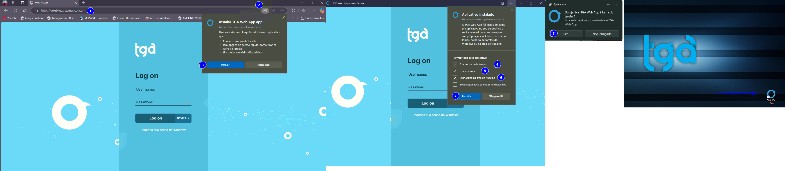

Janeiro teremos treinamento para Toda Equipe do Suporte.
Será um treinamento de Rotinas e configurações gerais do sistema como um todo... Instalação, Estoque, Fiscal e Financeiro...
O treinamento ocorrerá da seguinte forma:
Dividiremos todo suporte em 2 equipes, onde uma equipe fará o treinamento na semana do dia 06/01 (de segunda a sexta feira) e a outra equipe na semana do dia 13/01 (se segunda a sexta feira);
Para quem é o treinamento? Para você (Todos) (se você não puder por alguma situação de doença, viagem ou algo do gênero, me procure em particular);
Horário do treinamento: das 19:30 às 21:45, sendo 15 minutos de intervalo, tendo assim 2 períodos de 1 hora cada na sala da frente do suporte, onde usaremos os computadores da própria sala para fazermos "tarefas" na prática (aquilo que for possível fazer).
Essas horas extras, já serão para deduzir/abater nas horas contabilizadas das folgas desse final de ano e também abater no banco de horas (se alguém tiver horas sobrando, depois vemos para dar folga).
Temos a intenção de capacitar a todos, com máximo de conhecimento possível sobre rotinas gerais... posteriormente, faremos treinamentos específicos de ferramentas extras e também de conhecimentos mais específicos.
Conteúdo do Treinamento
GLOBAL
TGA ERP
MÓDULO ESTOQUE
2.1 – Movimentação de Entrada
2.2 – Movimentação de Saída
2.3 – Fiscal
MÓDULO CONFIGURADOR
MÓDULO FINANCEIRO
ESPECIFICIDADES GERAIS PARA ATENDIMENTO AO CLIENTE

Não passamos contrasenha, transfere a ligação para a recepção/financeiro
Caso atendimento for via chat passe o contato para solicitar contra senha direto com financeiro:
Central de atendimento: 65 3339-0800 ou 65 3330-0800
Whatsapp Financeiro: (65) 9 9620-9151(WhatsApp)
Canais de atendimento abaixo (de acordo com sua necessidade):
Central de atendimento: 65 3339-0800 ou 65 3330-0800
Tecle 1 para - Suporte
Tecle 2 para - Comercial
Tecle 3 para - Financeiro
Tecle 4 para - Vendas
Ou aguarde para ser atendido
Setor Suporte: www.atendimento.tgasistemas.com.br (Atendimento via chat online )
E-mail: atendimento@tgasistemas.movidesk.com
SOMENTE PARA PLANTÃO (finais de semana): (65) 9 9640-9138 (WhatsApp)
Whatsapp Suporte Matriz: (65) 3339-0800 (WhatsApp)
Suporte Filiais:
Whatsapp Suporte Matriz: (65) 3339-0800 (WhatsApp)
Whatsapp Suporte Cuiabá: (65) 2121-8020 (WhatsApp)
Whatsapp Suporte Tapurah: (66) 2132-9696 (WhatsApp)
Whatsapp Suporte SINOP : (66) 2132-9660 (WhatsApp)
Whatsapp Suporte JUARA : (66) 3556-2082 (WhatsApp)
Whatsapp Suporte ASSIS-SP : (18) 3322-6868 (WhatsApp)
Whatsapp Suporte ITAITUBA-PA : (93) 99145-1210 (WhatsApp)
Onde estamos?

Setor Financeiro: (65) 9 9620-9151 (WhatsApp)
Setor Comercial:
Vendas
Adriane Comercial- 65 9 9620-9006 (WhatsApp)
Perla Comercial- 65 9 9630-9130 (WhatsApp)
Contratos / Cancelamentos /Treinamentos / Mobile
Raphaela Comercial - 65 9 9972-2914 (WhatsApp)
contrato@tgasistemas.com.br
Contratação do TEF:
Vânia Comercial - 65 9 9997-1026 (WhatsApp)
Tele Vendas: 0800 000 3339

1° Consulte seus colegas que senta ao seu lado
2° Consulte seu líder
3° Pergunte no Grupo
Para segurança da empresa, nossa senha TGA, muda a cada mês, garantindo segurança caso pessoas com má intenção tenha salvo a senha TGA.
Acompanhe sempre no grupo de recados que cada vez que vira o mês esta disponivel a nova senha do mês
Ver senhas
Precisa fazer login para confirmar que é funcionário TGA e ter o acesso


Estoque, Financeiro, Hotel, Contábil, PDV ON e OFF,MOBILE ON e OFF, TEF,TGA B.I, Sped Contribuições, TGA WEB
E os demais que seria NF-e,NFC-e,NFS-e,MDF-e,CT-e,MD-e,Whatsapp,Coletor entre outros
Conecte na máquina do cliente, no movidesk pegue o CNPJ da empresa, código de usuário na página do Web, solicite para um dos líderes (Alex,Daniel,William),Coordenador Maicon ou Erick da Implantação para gerar a nova senha
Os manuais podem ser acessados na central do movidesk ou pelo TGAMEAJUDA.
Segunda a Sexta das 07:30 ás 18:00hr
Horário de almoço disponibiliza alguns suportes para atender as demandas
Sábado das 07:30 ás 12:00 hr
A TGA disponibiliza um celular para contatar o cliente, caso não consiga ligar pelo seu ramal.
Temos também a telefonia pela central da Evolux, chat do movidesk e seu email profissional
No Movimento:
Busca o % Desconto Máximo do Tipo de Movimento (desconto máximo do item, só funciona se estiver marcado o flag "Afeta Desconto do Movto", que faz uma média e aplica no campo Desconto do movimento).
Busca o % Desconto Máximo da Condição de Pagamento.
Busca o % Desconto Máximo do Cliente.
Busca o Desconto Fixo do Cliente.
Busca o Desconto Máximo do Usuário.
Busca o Desconto Máximo do Vendedor.
Tabela de preço no item.
Por item:
Busca o % Desconto Máximo do Tipo de Movimento (Desconto por item).
Busca o % Desconto Máximo do Produto.
Busca o % Desconto Máximo do Grupo, se não houver desconto no produto.
Busca o Desconto Máximo da Condição de Pagamento.
M - Movimento
O - Cadastro de Promoção
P - Produto
G - Grupo
T - Tabela Livre 1
I - Tipo de Produto
C - Condição de Pagamento
V - Cadastro de Vendedor
R - Regra de Desconto (Meta de Vendas / Comissão Escalonada)
Os tipos de comissões podem ser alternados entre À Vista e A Prazo:
À Vista
A Prazo
Cielo - Extensão do tipo ".CMP"
Get Net - Extensão do tipo ".txt"
Stone - Extensão do tipo ".xlsx" ou ".xls"
Sipag - Extensão do tipo ".txt"
Safra - Extensão do tipo ".csv"
Rede - Extensão do tipo ".xlsx" ou ".xls"
PagSeguro - Somente via API (integração)
Sicredi - Extensão do tipo ".txt"
Voltar Movimento Cancelado
update tmov set status = 'N', statuspedido = 'D', obscancelamento = NULL where idmov = 9999999;
update tmovitens set status = NULL where idmov = 9999999;
voltar o financeiro:
update flan set statuslan = 'A', motivocancel = NULL where idmov = 9999999;
Nesse ajuste, ele irá corrigir o saldo de acordo com o valor digitado. Este método não disponibiliza um relatório para ver os produtos alterados e, depois de salvo, não é possível editá-lo.
Passos para realizar o ajuste:
Utilitário → Opções de Produto → Ajuste de Saldo.
Confirme o movimento de entrada e saída e informe o funcionário responsável.
Adicione os produtos, colocando o código do produto ou buscando-o. Em seguida, informe a quantidade. Essa quantidade irá substituir a quantidade existente no sistema.
Ao finalizar o lançamento dos produtos, clique em Salvar.
Observação: Assim como o ajuste de movimento, você pode informar quantos produtos diferentes desejar. Porém, para evitar riscos de oscilações de rede e garantir que toda a contagem seja concluída corretamente, faça o ajuste em pequenos grupos de 20 ou 30 produtos diferentes.
Nesse tipo de movimento, será permitido o ajuste de saldo de forma que o movimento pode aumentar ou diminuir o saldo, dependendo do nome do movimento (entrada ou saída). Esse movimento permite que você imprima um relatório do que foi alterado.
Passos para realizar o ajuste de saldo por movimento:
Movimentos → Transferências / Outros → Transferências / Outros.
Selecione o movimento desejado.
Informe os dados necessários (vendedor e os itens).
Considerações sobre o tipo de ajuste de saldo:
O movimento selecionado deve ser adequado ao saldo do produto, conforme as seguintes situações:
Produto com saldo negativo: Se o produto tiver saldo negativo e você quiser corrigir, abra o movimento de ajuste de saldo físico de entrada e coloque a quantidade necessária para abater o valor corrigido. Por exemplo, se o produto tiver -3 no saldo e no estoque tiver 5, a quantidade a ser informada no movimento será 8, para abater essa quantidade.
Produto com saldo zerado: Se o produto tiver saldo zerado, você pode colocar a quantidade conforme o estoque. Por exemplo, se o estoque tiver 4 e o saldo estiver zerado, você pode informar os 4 produtos.
Produto com saldo no sistema maior que o estoque da loja: Se o saldo do sistema for maior que o estoque da loja, será necessário fazer a retirada do excesso de saldo. Por exemplo, se o sistema mostrar 10 produtos e o estoque tiver apenas 6, você deve abrir outro movimento de ajuste de saldo físico (saída) e informar 4 produtos, para retirar essa quantidade do sistema, deixando o saldo correto de 6.
Depois de adicionar todos os produtos, você pode salvar o movimento. Para um ajuste mais seguro, faça um movimento para cada 20 ou 30 produtos. Após isso, salve e crie um novo movimento.
Para Fracionar Itens em Pacotes
Gere o movimento de entrada a partir do XML com 1 produto.
Exclua os produtos e informe os produtos que estão entrando.
Passos para Entrada Fracionada de Produtos:
Na entrada da nota, pelo cadastro do pacote do produto, clique em "Gerar Movimento".
Selecione o movimento de entrada que normalmente utilizaria.
Exclua os produtos selecionados anteriormente.
Selecione e insira novamente os produtos que deseja que recebam o estoque, informando os dados de quantidade, preço unitário (preço de entrada) e tributação (se necessário).
Depois de adicionar todos os itens que foram fracionados dos pacotes da nota, salve o movimento.
Verifique o preço dos itens e, se necessário, ajuste a formação de preços.
Lembrando: O restante do processo, como condição de pagamento, funcionários, natureza de operação e fornecedor, deve ser preenchido normalmente, como em todos os outros casos habituais.
Resumo de Vendas:
Relatórios → Vendas / Faturamento → Resumo de Vendas Geral.
Informe a faixa de data e, se preferir, pode preencher outros campos ou deixá-los em branco.
Clicando em Filtrar Movimento, você estará selecionando o movimento que as vendas irão aparecer no relatório.
Você pode informar o período.
Agrupamento: Será formado grupos no relatório.
Ordenação: Irá ordenar dentro dos grupos de acordo com o que for marcado.
Contagem de Estoque:
Relatórios → Produtos / Estoque → Contagem de Estoque.
Informe os filtros se preferir, para selecionar os saldos que devem constar no relatório e imprima.
Visualizar Saldo e Estoque (Sem Custo):
Relatórios → Produtos / Estoque → Estoque sem Custo → Simples.
Vai mostrar o saldo dos produtos sem custo de acordo com os filtros da janela de impressão. Se não preencher nenhum filtro, irá puxar todos os produtos.
Saldo Usado: Informe o saldo que será mostrado no relatório. Você pode colocar mais de um saldo, apenas preencha os campos abaixo.
Inventário:
Relatórios → Produtos / Estoque → Registro de Inventário.
Informe a data de posição (geralmente o contador passa) e o preço que será apontado no relatório.
Acesse o site da SEFAZ para buscar a nota:
Link: https://www.nfe.fazenda.gov.br/portal/principal.aspx
Clique em Consultar NF-e.
1.1. Com a chave da nota em mãos, insira-a no campo e confirme que não é um robô. Quando a nota se abrir, clique no terceiro ícone "DOWNLOAD DO DOCUMENTO".
1.2. Identifique o local onde irá gravar o XML para buscá-lo no sistema no próximo passo.
1.3. Abra o TGA Estoque, vá em Movimentos → Compras Entradas → Importar XML Fornecedor.
Clique em Importar XML e busque o XML baixado.
Vínculos e Entradas dos Produtos:
2.1. Ao selecionar o XML, o sistema abrirá para fazer o vínculo do fornecedor (clique em Importar Fornecedor se não tiver), filial e local do estoque. Preencha os campos com os dados necessários.
2.2. Dando um duplo clique nos produtos, irá abrir a tela de vínculo. Informe o cadastro da TGA referente ao produto. Caso não tenha, clique em Importar Produto e salve o novo cadastro.
2.3. Ao finalizar os cadastros, clique em Gerar Movimento e escolha o movimento de entrada.
Devolução de Compra
Movimento → Compras Entradas → Compras Entradas.
Escolha o movimento de devolução referente à devolução que será feita.
Abrirá o movimento, e clique na lupinha (entre os campos Série e Compra de Mercadoria), logo ao centro do movimento.
Isso abrirá outra janela, nela você buscará o movimento de compra e dará um duplo clique sobre ele.
O sistema irá pedir quais produtos deseja devolver. Dê um duplo clique sobre os produtos que deseja devolver (ficará com um ícone verde no começo da linha do produto), ou clique no ícone lá embaixo e marque "Para marcar todos".
Depois, clique em OK para levar os produtos ao movimento.
Certifique-se de que a natureza esteja correta (1.xxx / 2.xxx ou 5.xxx / 6.xxx).
Para verificar os tributos de cada produto, clique duas vezes sobre o produto.
Certifique-se de que a natureza do produto esteja correta (1.xxx.yy / 2.xxx.yy ou 5.xxx.yy / 6.xxx.yy).
Feita a análise sobre todos os produtos, pode salvar e emitir uma Pré-DANFE.
Devolução de Venda
Movimento → Vendas / Faturamento → Vendas / Faturamento.
Escolha o movimento de devolução referente à devolução que será feita.
Abrirá o movimento, e clique na lupinha (entre os campos Série e Compra de Mercadoria), logo ao centro do movimento.
Isso abrirá outra janela, nela você buscará o movimento de venda e dará um duplo clique sobre ele.
O sistema irá pedir quais produtos deseja devolver. Dê um duplo clique sobre os produtos que deseja devolver (ficará com um ícone verde no começo da linha do produto), ou clique no ícone lá embaixo e marque "Para marcar todos".
Depois, clique em OK para levar os produtos ao movimento.
Certifique-se de que a natureza esteja correta (1.xxx / 2.xxx ou 5.xxx / 6.xxx).
Para verificar os tributos de cada produto, clique duas vezes sobre o produto.
Certifique-se de que a natureza do produto esteja correta (1.xxx.yy / 2.xxx.yy ou 5.xxx.yy / 6.xxx.yy).
Feita a análise sobre todos os produtos, pode salvar e emitir uma Pré-DANFE.
SELECT LEFT(t.descricao, 11) AS "Tabela", p.pontoeq * (acresc_desc / 100 + 1) AS "Preço" FROM ttabpreco t LEFT JOIN tproduto p ON t.codempresa = p.codempresa WHERE t.codtabpreco IN (6, 7, 8, 9, 10) AND p.codprd = :codprd;
Em “Configurações/Opções”
, clique em “Estornar Cartão” (ou
Estornar Transação Cartão) e informe a senha de padrão de
gerenciamento 54321.
Você será direcionado à tela de cartão
da adquirente da máquina. Informe o AUTE (ou código de
autenticação).


Acessar o
menu “Opções” e tocar no
botão “Reimpressão”.
Informe a senha de
gerenciamento padrão
54321 ao seu cliente.
Ele
então deve escolher qual
tipo de reimpressão
executar: fechamento de
caixa ou vendas

Reimprimir comprovante de cartão

Reimpressão de fechamento de caixa

O suprimento de caixa é um
valor que conforme
configuração, será adicionado
ao caixa sem ser proveniente
de vendas.
É ativado quando é
necessário registrar entrada
manual de dinheiro no caixa,
como dinheiro para troco no
começo do dia ou expediente
de funcionário.
Ao entrar na máquina, seu
cliente deve acessar o menu
“Opções” e clicar no botão
“Suprimento”.
Informe a senha de
gerenciamento padrão 54321
ao seu cliente.
Ele então deve
digitar a quantia do
suprimento.

A sangria de caixa é um valor
que conforme configuração,
será retirado do caixa sem ser
proveniente de vendas.
É
ativada quando é necessário
que não permaneça um valor
alto em caixa ou para manter o
controle dos valores das
transações.
Ao entrar na máquina, seu
cliente deve acessar o menu
“Opções” e clicar no botão
“Sangria”.
Informe a senha de
gerenciamento padrão 54321
ao seu cliente. Ele então deve
digitar a quantia da sangria.

No terminal, seu cliente deve
acessar o menu Opções e tocar
no botão Atualizar produtos.
Informe a seu cliente a senha
de atualização de produtos
padrão 12345. Os produtos
serão atualizados.
Para efetuar a atualização total
do POS, em caso de realização
de vendas no terminal ou
adição de um novo produto,
será necessário fechar o caixa
e atualizar os produtos.
Caso
contrário, serão atualizados
somente os valores dos
produtos


Realizar fechamento de caixa

Imprimir resumo de caixa

Tela de opções

Função testar comunicação

Consultar holerites, férias, e outros documentos
Portal do Funcionário
Consultar banco de horas, pontos batidos
Acessar portal
1-Assiduidade
⦁ Relacionado a falta, atraso, tempo lá fora, saídas;
Todas devem ser justificadas, com atestado ou programada com aviso prévio!
⦁ Logar no horário (Interact "Ligação", Movidesk "Ticket/Chat");
⦁ Cumprir com os horários, de retorno com cliente, visita, qualquer tipo de
agendamento online ou in loco;
⦁ Visualizar e responder as mensagens no teams;
2-Dedicação e Comprometimento
⦁ Atender no mínimo previsto por suporte (média passada nas reuniões);
⦁ Aprender constantemente; Tópico 6*
⦁ Sempre ver as Releases, Mantis, Informativos, Manuais, Mensagens no Teams,
avisos do Movidesk, base de conhecimento...
3-Auxílio a colegas de trabalho
⦁ Ajudar, ser proativo em atender, colaborar, auxílio equipe, resolver e não procurar
apontar, caso algum outro suporte fez algo errado repassar o atendimento Ticket,
para o líder.
4-Relacionamento com o Cliente
⦁ Dinâmico, formal e informal, rápido quando é preciso (cliente com sistema
parado, ou algum processo parado dependendo do suporte, 5 a 10min, se passar já
pedir orientação);
Outras informações*
⦁ As vezes mais devagar, quando o cliente precisar de atenção, mas sempre vendo
a fila de atendimento.
5-Número de Atendimentos
⦁ No mínimo a Média, pra ser equilibrado, nada impede de querer fazer muitos
⦁ Prezamos a qualidade e não a quantidade, porém, com o conhecimento, vem a
velocidade, consequentemente aumenta a quantidade de atendimentos.
⦁ Não atender com pressa, que no caso seria muitos atendimentos sem preparo ou
conhecimento, passando por cima de coisas que podem dar problema.
Nunca atenda sem saber o que está fazendo, sem entender o que está
acontecendo!
5-1 Prioridades de Atendimentos:
1. Clientes que estão com sistema parado;
2. Prazo dado ao cliente (se marcou hora ou deu prazo, cumprir);
3. Clientes na fila de espera (Interact "telefone" e movidesk "chat");
4. Restante das solicitações (que, teoricamente, devem ser via Tickets
"Impressos","Relatórios"...) ;
5-2 Ao Atender cliente:
1. Qual é o problema?
2. Quais são as causas do(s) problema(s)?
3. Quais as possiveis soluções?
4. Qual é a melhor solução?

6-Conhecimento
1. Conhecimento do Sistema - Rotinas Principais Telas e Tabelas
2. Conhecimentos de Ferramentas extras - Mobile, PDV off, demais módulos
(configurador) ou customização especifica de algum cliente.
3. Conhecimento avançados - (Comandos, Formulas, Report, Trigger e
Workflow);
Outras informações;
⦁ Hierarquia para Tirar Dúvidas e informações.
1º-Suporte do lado;
2º-Lideres
3º-Maicon e depois disso nos entramos em contato com Programação/Revendas ou
damos a liberdade para você mesmo entrar.
De forma alguma peça auxilio para outro setor como Programação,
Implantação, Gerencia, Desenvolvimento e Revenda sem o nosso
conhecimento!
⦁ Ao ser ajudado, anote, e busque entender sobre o que foi passado, se não
entender, mesmo anotado, vai ser difícil compreender essa e outras
situações.
⦁ Deve atenção e respeito aos Lideres ( Alex, Daniel, William)
Acima deles, coordenação ( Maicon),
Acima dele, gerencia (Robson),
Acima dele, Diretor/Dono (Marcio);
Acima dele, o mais importante, Cliente!
Tenha seu comportamento adequado, seguindo as normas mencionadas
acima com zelo. Outro colaborador, não mencionado acima, também poderá te
passar orientações sobre atendimentos, ou mesmo chamar sua atenção
(respeitando a própria posição), caso seu comportamento não condiga com a
direção da empresa.
Se porém, alguém te faltar com respeito, ou mesmo, se o colaborador for
de outro setor a chamar sua atenção, reporte ao seu líder/coordenador.
⦁ Pausa 5 a 10, máximo 15 min, mais que isso já é considerado prejudicial
para os demais. 1 de manha, 1 de tarde.
⦁ Evitar Mexer no celular, rede social, jogos, vídeos aleatórios, no computador
apenas sites envolvidos com o sistema, programação, administração,
contabilidade, tributação, tudo que envolva o sistema;
Informações para passarem ao cliente, Ref. a Integração TGA com TEF (Cartões) e Api (Pix) e PDV-Online. Ref. à Portaria N° 262/2023.
- Integração com o Tef, Tem Custo. (Ticket deve ser passado ao Comercial, para Negociar/Autorizar);
- Integração com a API PIX, Não vai ter custo. (Ticket não precisa passar pelo comercial);
- Configuração de PDV-On, Não vai ter custo. (Ticket não precisa passar pelo comercial);
NÃO será mais permitido usar o IBExpert em nenhuma hipótese (mesmo somente com o executável não será permitido), pois, como todos sabem, é um programa pago e não temos licença de uso.
O Daniel Feix testou vários programas, e o RedExpert ou o Debeaver é, até agora, o mais próximo do IB.
Estou enviando em anexo o programa e também como instalá-lo. Quando acessarem clientes, e precisarem rodar algum comando, já façam instalação do mesmo. É necessário também que tenha instalado o Java para sua utilização.
Obs Importante: Se soubermos que houve a utilização do IB após essa data do recado, será dado advertência para quem utilizar (existe log (capturado por um programa)) do IB mesmo com utilização com executável) sem qualquer autorização por escrito minha, Robson ou Márcio.
Baixar RedExpert
Baixar Debeaver
Quando atenderem clientes e tiverem que cadastrar novos usuários (sem inativar outro (substituir)), verificar sempre no comercial quantidade de usuários contratados, independente da quantidade de usuários que existam no sistema do cliente.
Antigamente, havia um mínimo de usuários contratados de 3, porém não mais existe essa regra na contratação, ou seja, hoje em dia, é comercializado quantidade menor que 3, e por isso, precisa-se verificar sempre no setor comercial para qualquer nova inclusão.
Pausa no suporte. Importante saberem que precisamos que coloquem a devida Pausa quando saírem para fazer qualquer uma das ações.
Os líderes e eu estarão cobrando a que coloquem as devidas pausas.
Obs: Fiz pequena alteração nos tempos, e por isso, estou apagando a outra postagem.
Água - 15 min por dia;
Lanche - 2 tempos de 15 minutos;
Banheiro - 25 minutos por dia.
As pessoas responsáveis pela abertura de Mantis, até então, aqui do Suporte Matriz são, Daniel (Líder) e Maicon (Coordenador);
As Solicitações feitas para a abertura, serão feitas apenas mediante às seguintes informações:
*Assunto: (Titulo);
*Texto: (Problema/Motivo/Sugestões ou Soluções);
*Ticket: (Caso não tenha, e for relato de bug, correção identificada, não será necessário);
*Anexos: Print/Vídeo/Gif sobre o problema/solicitação;
*Passo a passo pra chegar ao problema;
*Jamais, utilize Letras Maiúsculas (CAIXA ALTA), em anotações, seja Tickets, Mantis, Teams...
No caso de Melhorias/Novas implementações, relacionados a:
Fiscal/Tributária/Contábil,
Bancária,
Integrações,
Processos Administrativos não habituais ao Sistema,
Somente serão Abertos, se houver a Nota Técnica, Layout, Manual de integração/configuração, Artigo/Lei ou qualquer outra fonte de informação que tenham sido utilizados durante a análise da situação. (Especificar a página/trecho onde se trata o assunto);
Caso todas essas informações já estiverem informadas/anexadas no Ticket, também poderão ser abertas. Caso não tenha, informar no Ticket ou passar via Teams.
É extremamente importante ressaltar que o Mantis: é onde são Registradas todas as mudanças do Sistema e precisam estar completas e detalhadamente informadas...
É uma fonte de conhecimento sobre o caso, para qualquer um conseguir buscar, identificar detalhadamente o problema relatado e ser capaz de reproduzi-lo).
A Programação precisa saber o que será feito, independente se foi tratado no privado.
O pessoal dos testes, precisam saber exatamente os detalhes no Mantis para poder testar, e relatar no Release.
Depois de aberto, acompanhe/responda anotações, teste quando sair exe/dll. Mantenha Mantis/Ticket atualizado.
Passo 1: Abertura do Ticket com todas as informações Necessárias para o processo,
(Para Unificação, é Responsabilidade do Suporte junto com Cliente definir qual a Relação de verificação das tabelas. Exemplo: Na TPRODUTO qual será a informação de verificação para unificar os produtos? CODBARRAS, NUMNOFABRIC. Isso em todas as tabelas que forem unificar!);
Passo 2: No ticket conter a autorização do cliente para coletar o(s) banco(s), Assim será feita a abertura de Mantis com as informações definidas, apenas para analise do DBA (lembre-se de Monitorar o Help para acompanhar processo);
Passo 3: Departamento DBA faz o processo Prévio, disponibiliza o banco para teste e informa as Horas no Mantis. O suporte APENAS TESTA, para verificar se está de acordo com o solicitado;
Passo 4: Anota-se as Horas no Ticket, muda o Status para: Aprovação Orçamento e encaminha para o departamento Comercial;
Passo 5: Comercial entrará em contato com cliente para negociação de valores. Caso cliente não autorize, Mantis e Ticket são Cancelados (avisar o líder/coordenador), caso autorizado, passará para os passos seguintes;
Passo 6: Coordenador ou Monitor Informa "Autorizado" no Mantis;
Passo 7: Suporte agenda com o cliente e verifica junto ao DBA data para fazer o processo;
Passo 8: Para processo definitivo, faça Upload do(s) Banco(s) de Dados e coloque o caminho do mesmo no mantis (lembrando que o sistema no cliente ficará Parado durante o procedimento final);
Passo 9: DBA Finaliza o processo e disponibiliza o(s) Banco(s) (caminho estará no mantis). O Suporte/Implantação, Retorna com o Banco Definitivo para o cliente.
Passo 10: Mantis/Ticket são comentados com a analise do suporte/cliente sobre a solicitação e ambos, dados como Resolvidos.
O suporte conta com equipes internas para determinadas situações como: PDV OFF, WorkFlow, Fórmulas, TEF
Sim, o suporte técnico básico está incluso para todos os nossos clientes com serviços ativos.
Caso necessitar de um atendimento presencial ou treinamento, é combinado com setor Comercial e Coordenador do Suporte para definir visita ao cliente
Caso se tratar de um treinamento , o cliente solicita ao Comercial se tem preferência se vai ser presencial ou online, tem uma tarifa a ser paga em caso de treinamentos
Segunda a Quinta -> Camisa Azul tradicional
Sexta e Sábado -> Camisa de Eventos
Sábado -> pode vir com camisa de evento ou pode ser outra sem ser uniforme
Ver senhas
Precisa fazer login para confirmar que é funcionário TGA e ter o acesso
NÃO é para substituir EXE (Estoque, Financeiro) por um EXE de teste do Mantis, em Cliente.
EXE disponibilizado é apenas para teste. A não ser que seja urgente, e você tenha testado todos os processos para não ocorrer erro em outras situações, e dar mais suporte...
1 - Uso do celular no suporte: O uso do celular na sala do suporte a partir de segunda feira (16/09/2024), só será permitido caso você peça autorização ao seu líder (ou ao Maicon) para usá-lo.
Exemplo: Se precisar pagar alguma conta pelo app, peça a ele para usar, não terá problema, mas ele vai saber do motivo de estar usando. Qualquer acesso a rede social ou outro aplicativo, somente fora da sala em seu tempo de pausa.
Isso se dá porque o uso do celular, principalmente no momento que estamos com demanda, tem se tornado inimigo de foco e agilidade nos atendimentos... O impacto disso é um risco maior de erros e também de morosidade no atendimento ao cliente... já havíamos falado a respeito disso, e em conversa com os líderes, percebemos que realmente tem atrapalhado.
Uso de whats pode ser feito pelo computador... sendo que, obviamente esperamos moderação do mesmo.
Obs: Aos sábados o uso do celular está liberado na sala, lembrando sempre da moderação de acordo com a demanda de atendimentos;
2 - Tempo de pausas fora da sala: Deixaremos, à partir de segunda feira (16/09/2024), somente 2 pausas de 20 minutos cada, sendo 1 para ser usada no período da manhã e outra para ser usada no período da tarde. Se você precisar de algo que precise exceder esse tempo, fale com seu líder ou comigo.
Obs: As pausas não são cumulativas (não folgar pela manhã para folgar 40 minutos de tarde (ou vice-versa)).
Em ambas situações, esperamos que todos sejam cuidadosos e responsáveis... a não observância vai acarretar em advertência verbal e por escrito, caso necessário.
Os pcs desligarão automaticamente às 21:30h caso não estejam desligados (obviamente). Conforme já falado, isso tem a ver com o SPA e também relação com possíveis quedas de energia (ou outras questões relacionadas com energia) que podem danificar os computadores (isso ajudará a minimizar possíveis problemas).
Portanto, fiquem atentos para que isso não prejudique você em algo que esteja fazendo.
Obs.: Se precisar deixar algo "rodando" no seu computador, me avise para eu passar para o Guilherme ajustar em seu usuário no dia que precisar.
Código de conduta referente ao número 2 no banheiro principal.
Basicamente, não utilizamos o banheiro principal para essa ação, visando assim, o bem comunitário (principalmente referente ao odor) no local.
Caso tenha a necessidade de realizar o número 2, aconselhamos o banheiro lá do fundo, ou também o banheiro dos deficientes.
Mas se por acaso os dois banheiros estiverem sendo utilizados e for de extrema urgência, poderá ser utilizado o banheiro principal para esse fim.
NCM: Nomenclatura Comum do Mercosul
CEST: Código especificador de Substituição Tributária
CFOP: Código Fiscal de Operações e Prestações
CST: Código da Situação Tributária
CSOSN: Código da Situação de Operação do Simples Nacional
MVA: Margem do Valor Agregado
CNAE: Classificação Nacional das Atividades Econômicas
DANFE: Documento Auxiliar de Nota Fiscal Eletrônica
Condição de pagamento: É o prazo para pagamento.
Forma de pagamento: Refere-se ao meio pelo qual o pagamento será realizado
Cotação: 1.1.XX
Compra de Mercadoria: 1.2.XX
Devolução de Compra: 1.3.XX
Orçamento: 2.1.XX
Venda de Mercadoria: 2.2.XX
Ajuste de saldo: 4.1.XX
Validação da situação financeira na base de dados da TGA (se há débitos ou não), e/ou se a empresa está ativa em nossa base de dados para utilização do sistema.
Prazo padrão é 30 dias após passar o cartão, porém há possibilidade de antecipação, e há máquinas de cartão que a antecipação é automática já na aquisição dela.
Preço de Compra: Preço de fábrica
Custo Unitário: Valor da mercadoria considerando impostos e outras despesas até chegar à empresa.
Custo Médio: Custo médio da mercadoria em estoque
Ponto de Equilíbrio: Valor mínimo de venda que não gera nem prejuízo nem lucro
Para validação da situação cadastral/financeira na liberação ou não de vendas a prazo.
Para controlar despesas, receitas e investimentos agrupando por tipo.
Análise de Vendas, Estoque, NF-e e NFC-e por status e Ordens de Serviço.
Para tratar o preço do item pela quantidade vendida.
NF-e: 8 Horas
NFC-e: 30 Minutos
Instalando Múltiplas Instâncias
Movimento: TMOV
Itens: TMOVITENS
Lançamentos: FLAN
Extratos: FEXTRATO
Grupo de Produtos: TGRUPO
(1) Parar o Firebird
(2) Renomear a pasta do Banco de Dados
(3) Iniciar o Firebird
(4) Renomear o inicializador do sistema (gerenciador de Bases)
(5) Executar o Instalador
(6) Executar o Atualizador
(7) Nomear a pasta do Banco de Dados
Situação fiscal do emitente ou destinatário com problema.
Página com links
Portal da Nota
Consulta NFC-e
Consulta Inutilização MT
Consulta MDF-e
Consulta CT-e
Monitor SEFAZ
Disponibilidade SEFAZ
Sintegra
CCC - Cadastro Centralizado de Contribuinte
Consulta Inutilização NFC-e MT
Consulta Inutilização NFC-e RO
Consulta NFC-e RO
Painel de Monitoramento de Autorizadores de NFC-e
Consultar DANFE NFC-e
Informações sobre a Chave de Acesso
Chave de Acesso de um Documento Fiscal: NF-e, CT-e, NFC-e e MDF-e é formada pelas seguintes informações:
- cUF - Código da UF do emitente do Documento Fiscal;
- AAMM - Ano e Mês de emissão da NF-e;
- CNPJ - CNPJ do emitente;
- mod - Modelo do Documento Fiscal;
- série - Série do Documento Fiscal;
- nNF - Número do Documento Fiscal;
- tpEmis – Forma de emissão da NF-e;
- cNF - Código Numérico que compõe a Chave de Acesso;
- cDV - Dígito Verificador da Chave de Acesso.
Confira abaixo a distribuição pela quantidade de caracteres de cada campo:

A imagem abaixo mostra quais campos do XML compõem a chave de acesso, logo, se algum dos valores correspondentes mudarem no XML, a chave de acesso irá mudar também.

Quando usar cada tipo de nota fiscal?
1. NFe – Nota Fiscal Eletrônica
Quando usar: Para vendas de mercadorias entre empresas (B2B), transferências de estoque, devoluções e operações interestaduais.
Exemplo de Chave de Acesso: 43210312345678000123550010000012341012345678
2. NFCe – Nota Fiscal de Consumidor Eletrônica
Quando usar: Para vendas diretas ao consumidor final (B2C), geralmente em lojas físicas, substituindo o cupom fiscal.
Exemplo de Chave de Acesso: 43210312345678000123550210000056781012345678
3. MDFe – Manifesto de Documentos Fiscais Eletrônicos
Quando usar: Obrigatório no transporte de cargas intermunicipais e interestaduais, consolidando várias NFes e CTEs.
Exemplo de Chave de Acesso: 43210312345678000123580010000098761012345678
4. CTe – Conhecimento de Transporte Eletrônico
Quando usar: Para documentar o serviço de transporte de cargas realizado por transportadoras.
Exemplo de Chave de Acesso: 43210312345678000123570010000034561012345678
5. NFSe – Nota Fiscal de Serviço Eletrônica
Quando usar: Emitida por prestadores de serviço para documentar operações de prestação de serviços.
Exemplo de Chave de Acesso: Varia conforme o município.
6. MDE – Manifestação do Destinatário
Quando usar: Para que o destinatário da NFe confirme se recebeu a mercadoria ou reporte alguma irregularidade.
Chave de Acesso: O MDE usa a chave da NFe vinculada.
Resumo das Diferenças
| Tipo | Finalidade | Modelo Fiscal | Quem Emite? |
|---|---|---|---|
| NFe | Venda de mercadorias B2B | 55 | Empresas com ICMS |
| NFCe | Venda ao consumidor B2C | 65 | Comércio varejista |
| MDFe | Agrupar notas para transporte | 58 | Transportadoras e empresas que transportam carga própria |
| CTe | Registro de transporte de cargas | 57 | Transportadoras |
| NFSe | Prestação de serviços | Varia por cidade | Prestadores de serviços |
| MDE | Manifestação do destinatário | Usa a chave da NFe | Destinatário da NFe |
Os impostos são tributos obrigatórios cobrados pelo governo e devem ser preenchidos
corretamente na nota fiscal. Alguns dos impostos são:
• ICMS -Imposto Sobre Circulação de Mercadorias e Serviços;
• ICMS-ST -Substituição Tributária do ICMS;
• MVA -Margem de Valor Agregado (Componente para cáculo do ICMS -ST);
• IPI - Imposto sobre Produtos Industrializados;
• PIS -Programa de Integração Social;
• COFINS -Contribuição Para Financiamento Da Seguridade Social;
• ISS -Imposto Sobre Serviços;
Obs:Ao todo, entre impostos federais, estaduais e municipais, taxas e contribuições, o Brasil possui uma lista de 92
tributos vigentes que pode ser acessada no site do Portal Tributário que são cobrados de pessoas físicas e jurídicas.
Essa lista inclui impostos, taxas e contribuições diversas.
Os tributos são valores cobrados pelo governo, seja em nível federal, estadual ou municipal, com o objetivo de arrecadar recursos para financiar serviços públicos e programas sociais. Eles podem ser divididos em impostos, taxas e contribuições.
Principais Impostos
1. ICMS – Imposto Sobre Circulação de Mercadorias e Serviços
O que é: Tributo estadual cobrado sobre a circulação de mercadorias e serviços de transporte e comunicação.
Como funciona: Aplicado sobre vendas, transferências de produtos e prestação de serviços de transporte intermunicipal e interestadual.
Para onde vai: Arrecadado pelos estados e parte vai para os municípios.
2. ICMS-ST – Substituição Tributária do ICMS
O que é: Forma de arrecadação antecipada do ICMS, onde um contribuinte na cadeia comercial recolhe o imposto por todos os envolvidos.
Como funciona: A empresa que vende um produto ao varejo já paga o ICMS por toda a cadeia.
3. MVA – Margem de Valor Agregado
O que é: Percentual utilizado no cálculo do ICMS-ST.
Como funciona: Define o valor final presumido de venda de um produto, sobre o qual o ICMS será calculado.
4. IPI – Imposto sobre Produtos Industrializados
O que é: Tributo federal sobre produtos industrializados, sejam nacionais ou importados.
Como funciona: Cobrando uma alíquota sobre o preço do produto industrializado quando ele sai da fábrica.
5. PIS – Programa de Integração Social
O que é: Tributo federal que financia o seguro-desemprego, abono salarial e outros programas sociais.
6. COFINS – Contribuição para Financiamento da Seguridade Social
O que é: Tributo federal destinado ao financiamento da seguridade social.
7. ISS – Imposto Sobre Serviços
O que é: Tributo municipal sobre a prestação de serviços de qualquer natureza.
Outros Tributos
O Brasil possui diversos tributos federais, estaduais e municipais. Alguns deles incluem:
- IRPJ – Imposto de Renda Pessoa Jurídica
- CSLL – Contribuição Social sobre o Lucro Líquido
- INSS – Contribuição Previdenciária
- IPVA – Imposto sobre a Propriedade de Veículos Automotores
- ITCMD – Imposto sobre Transmissão Causa Mortis e Doação
- ITBI – Imposto sobre Transmissão de Bens Imóveis
Resumo das Diferenças
| Imposto | Tipo | Abrangência | Incidência | Finalidade |
|---|---|---|---|---|
| ICMS | Estadual | Mercadorias e serviços | Circulação de bens | Manutenção dos serviços estaduais |
| ICMS-ST | Estadual | Substituição tributária | Primeira venda na cadeia | Evitar sonegação fiscal |
| MVA | Estadual | Cálculo de ICMS-ST | Margem de valor agregado | Definir base de cálculo |
| IPI | Federal | Produtos industrializados | Saída da indústria | Regulamentação da indústria |
| PIS | Federal | Receita bruta | Faturamento mensal | Financiamento do seguro-desemprego e FGTS |
| COFINS | Federal | Receita bruta | Faturamento mensal | Financiamento da seguridade social |
| ISS | Municipal | Prestação de serviços | Valor do serviço | Manutenção dos serviços municipais |
Os tributos são fundamentais para financiar os serviços públicos e garantir o funcionamento do Estado. Eles devem ser corretamente preenchidos na nota fiscal para evitar problemas com a fiscalização.

Liberação Online TGA
URLs:
tga.tgasistemas.com.br
liberacao1.tgasistemas.com.br
liberacao2.tgasistemas.com.br
liberacao3.tgasistemas.com.br
Portas (TCP):
TGA ON - 8093
ERP - 8080
TGA MOBILE - 3010
ERP ANTIGO - 30500
Os links de acesso para liberação no cliente são:
http://liberacao1.tgasistemas.com.br:8080/
http://liberacao2.tgasistemas.com.br:8080/
http://liberacao3.tgasistemas.com.br:8080/
Url Outlook
https://account.live.com/proofs/AppPassword?uaid=0d4fbc709a0b4baa9be4bf7658cea8a4&mpsplit=2&mkt=pt-BR
Url Gmail
https://myaccount.google.com/apppasswords?utm_source=google-account&utm_medium=myaccountsecurity&utm_campaign=tsv-settings&rapt=AEjHL4OHLAbIlcVML9-0cdvQJf7CDFww6cn7XzilZV1rwmqZy2tOLi_GQ0-OzicbFJiiEANFQi-QP5Sy8gGHiLQWzy6y96OxaKFgks8KkaFWSjUHnWi2J8I
Contato: Dono da empresa, ou responsável com autoridade para solicitar todos tipos de atendimento
Cliente: Somente para dúvidas,e solicitações básicas,esse perfil não tem permissão de solicitar alterações no sistema

Lembrando que temos algumas Macros contendo Mensagens para serem usadas nos atendimentos. Elaboramos elas para padronização de casos como:
Baixar Anydesk;
Contrassenha (quando cliente solicitar no atendimento online);
Sefaz MT com instabilidade;
Suporte bloqueado (quando cliente está com suporte bloqueado em nossa base controle).br
Usem elas para agilidade e padronização desses atendimentos.

Opção dentro dos status de Ticket na Movidesk: "Verificação de Viabilidade".
Sempre que houver algo relacionado a uma análise de viabilidade, colocar essa opção para melhor acompanhamento tanto da TGA quanto do cliente.
TEF ou Transferência Eletrônica de Fundos é um software que conecta o sistema de vendas à sua adquirente no momento de uma transação com cartão (débito, crédito ou voucher) de forma 100% segura e rápida. Ela também permite o pagamento via PIX e com carteiras digitais.
Esta alternativa é, assim, uma solução que dá mais liberdade aos clientes e gera economia para as lojas, especialmente em um momento em que as empresas devem se atentar à flexibilização das formas de pagamento.
Como é multi adquirente, o lojista pode, a partir dela, escolher passar as bandeiras com um adquirente diferente.
A tecnologia integra diferentes bandeiras de cartões em um único sistema, o que dispensa a aquisição ou a locação de várias máquinas.
Entendeu para que serve a TEF? Para deixar ainda mais claro, destacamos a seguir suas principais funções:
melhorar a experiência do cliente;
aceitar o pagamento de diferentes bandeiras de cartão (crédito e débito);
fazer a comunicação e solicitar a liberação da compra às operadoras de cartão;
armazenar todas as informações de pagamento, automaticamente, no sistema do varejo.
Emissão de nota fiscal juntamente com o pagamento da compra, tornando-o mais seguro contra fraudes internas;
O sistema de pagamento funciona de maneira simples, mas é preciso conhecer alguns conceitos antes:
Pagador: Cliente do estabelecimento;
TGA Gestão: sistema de vendas utilizado pelo estabelecimento para o recebimento das vendas efetuadas;
Equipamento PinPad: maquineta utilizada para capturar os dados do cartão no momento da transação, geralmente disponibilizada pela adquirente;
TEF Contratado: software que conecta o sistema de vendas à sua adquirente no momento de uma transação com cartão (débito, crédito ou voucher), ela também permite o pagamento via PIX e com carteiras digitais;
Adquirentes: empresas que se conectam às diversas bandeiras de cartão para dar a permissão para que o pagamento aconteça, negociar taxas e aprovar ou não os pagamentos;
Bandeiras: empresas responsáveis por definir as regras de negócio para compras realizadas com cartão de crédito. São elas que definem os padrões pelos quais os adquirentes devem processar as transações realizadas por esse meio de pagamento (cada bandeira tem suas próprias regras);
Banco emissor: instituição financeira que emite o cartão de crédito. Embora a "bandeira" (ou "marca") do cartão seja responsável por intermediar as operações de crédito pelo cartão, é o emissor (quase sempre um banco) que define as taxas de juros, o limite de crédito e outras questões financeiras;
Com esses termos em mente, confira o funcionamento da Transferência Eletrônica de Fundos:
Deve ser feita a instalação da aplicação TEF onde as vendas com cartão serão efetuadas.
Na sequência, é preciso ativar o PinPad e integrar o pagamento TEF com o sistema de vendas.
A partir de então, a empresa já está pronta para receber as transações. Sempre que este pagamento for utilizado, o sistema de gestão o alimentará automaticamente com os dados da transação.
Em outras palavras, o PinPad passa para o sistema de Transferência Eletrônica de Fundos(TEF) os dados do cartão, e ele leva todas essas informações para a sua adquirente, de maneira que ela possa confirmar as informações da transação.
Perceba que todo esse processo acontece automaticamente, a partir das integrações do sistema de vendas com o TEF, o que torna a transação mais segura e ágil.
Com isso, é possível dispensar o uso de planilhas e quaisquer outros recursos manuais para o controle financeiro, bem como evitar que funcionários apliquem preços incorretos no modo manual
PayGo(Dial);
Cappta(Dial);
GetCard(Dial);
SiTef(TCIP);
SiTef(Dial);
Linx(Dial);
SafraPay(Dial);
auttar(Dial);
Quando utilizar a operadora SiTef(Dial), sempre deixar a pasta padrão de instalação que é Client, hoje por padrão o TGA Gestão busca por essa pasta e não mais por Tef_Dial
1 - Comprar o(s) PinPad(s) (máquina de passar cartão que tenha funcionalidade com TEF);
2 - Contratar o TEF. Temos homologação com os seguintes TEFs: PayGo(Dial), Cappta(Dial), GetCard, SiTef(TCIP), SiTef(Dial), Linx(Dial), SafraPay(Dial).
3 - Contratar o módulo TEF junto à TGA Sistemas (pode ser contratado de forma simultânea com a contratação do TEF, para agilizar o processo);
Lembrando algo importante: o TEF deve ser instalado pela própria empresa que forneceu o TEF, pois nós, apenas configuramos as informações dentro do sistema e somente após a configuração do TEF.
Canal GetCard somente para os clientes da TGA contratarem: (48) 9 9977-4455 (podem passar para os clientes)
Segue informação um pouco mais detalhada.
Equipamento PinPad: maquineta utilizada para capturar os dados do cartão no momento da transação (“máquina de passar cartão”), geralmente disponibilizada pela adquirente;
Adquirentes: empresas que se conectam às diversas bandeiras de cartão para dar a permissão para que o pagamento aconteça, negociar taxas e aprovar ou não os pagamentos (empresas como a Cielo, Rede, Stone, Getnet);
TEF Contratado: software que conecta o sistema de vendas à sua adquirente no momento de uma transação com cartão (débito e crédito). Ela também permite o pagamento via PIX;
PayGo(Dial);
Cappta(Dial);
GetCard;
SiTef(TCIP);
SiTef(Dial);
Linx(Dial);
SafraPay(Dial).
Bandeiras: empresas responsáveis por definir as regras de negócio para compras realizadas com cartão de crédito/débito. São elas que definem os padrões pelos quais os adquirentes devem processar as transações realizadas por esse meio de pagamento (cada bandeira tem suas próprias regras);
Whatsapp: (44) 3023-0062 (WhatsApp)
Whatsapp: (11) 2103-4321 (WhatsApp)
Whatsapp: (71) 3599-0958 (WhatsApp)
Whatsapp: (11) 3003-5525 (WhatsApp)
Whatsapp: (11) 3004-9680 (WhatsApp)
Whatsapp: (11) 4001 4433 (WhatsApp)
Whatsapp: (11) 97694-6815 (WhatsApp)
Whatsapp: (51) 3358-8000 (WhatsApp)
Whatsapp: (11) 4003-1775 (WhatsApp)
O driver "Elgin-Bematech MP4200 HS (novo modelo) - Driver Windows (v1.7.7).exe" pode ser utilizado para as impressoras Elgin:
Atenção!
Neste exemplo, foi utilizado a impressora Bematech MP4200 HS(Novo Modelo Elgin).
1 - Elgin i7(USB);
2 - Elgin I9(USB);
3 - Bematech MP4200 HS(Novo Modelo);
Configuração da impressora
Comprar a maquina Smart POS (maquininha sem fio), com seu banco ou um adiquirente homologado (Rede,Stone,SafraPay,Cielo,Vero,Sipag,GetNet,Adiq,PagSeguro,Elgin,Punto,Bin,Caixa,Sicredi,Justa)
Entrar em contato com o Comercial solicitando que precisa aderir ao Tef e vai ser com SMART POS, vão te passar todos os dados que precisa, em seguida será aberto uma solciitação para o suporte dar continuidade
Após liberado com Comercial, a equipe do suporte entrara em contato em até 7 dias para agendar atualização e configuração do TEF no sistema
Função implementada no Estoque >> Utilitários >> EDI >> Gerenciador de transição Smart POS.
E também adicionada no menu de TEF do financeiro - Utilitários >> Gerenciador de transição Smart POS
Informe a filial , a forma de pagamento , valor e número da venda
Lembrando que só aparece para usuário TGA
Atualiza Produtos/dados - senha 12345
Estorno/reimpressão - senha 54321
Senha do lojista - 0000
senha de limpeza 350000
Saiba mais
Limpeza de cache, no meu caso foi utilzado a mesma senha do vídeo
Erro 70 Modo inválido
Senha de limpeza: 350000
Ver video
Sempre que ocorrer algum tipo de erro, bug etc.. em maquininhas que estão funcionando e de repente para do nada, ou ocorre de ficar carregando algo infinitamente, enfim vários bugs que pode ocorrer de repente.
Sempre fazem o procedimento padrão nas maquininhas, antes mesmo de me chamar no teams, as vezes já pode resolver.
Procedimentos padrões:
1- reiniciar maquininha
2- testar Wifi / dados moveis
3- Fazer um reset ( Para isso tem que me chamar, que eu possa passar a senha)
Obs: as senhas de reset são geradas a cada 1 Hora no portal, então caso pedir uma senha em X horário, depois de 1 hora não será mais a mesma.
4- Fazer a limpeza de dados / Cache. (Irá pedir o login novamente).
5- Sempre analisarem se é algo na maquininha mesmo ou no TGA.
Erro: Não existe Config
Por gentileza realizar o fechamento do caixa e a limpeza dos dados.
Senha de limpeza: 350000
Ver video
SENHA RESET - william que gera
Qualquer erro ou bug que pegaram, é de extrema importância, vocês fazerem todos processos padrões,
desde o mais simples ao mais avançado.
1- Reinicia maquininha.
2- Reset POS.
3- Fechamento e limpeza de dados.
4- Se nenhuma das alternativas funcionar -> contatar suporte
POS CONTROLE
Referente aos POS SMART que ocorrem de não aparecerem o PDV.MOBI pra baixar, preciso que me passem no PV (william) ali o número do ticket e também já pega a informação que preciso ( para fazer uma nova solicitação).
Pessoal do POS me informou que nesses casos tem que fazer uma nova solicitação, não é normal acontecer, mas se não está aparecendo o PDV.MOBI, tem que enviar o vinculo de novo.
Então quem tiver com esse problema me chama no PV, me informa o número do ticket referente a instalação, que eu irei passar qual informação eu preciso para fazer o vinculo novamente.
Quando o cliente já trabalha com SMART POS e deseja contratar mais uma maquininha, é necessário repassar o ticket ao comercial, para que seja autorizado também, assim como é feito a solicitação inicial.
O Smart POS é cobrado por terminal, por esse motivo sempre tem que ter a autorização do comercial para novas maquininhas.
Já na questão da substituição, seja por defeito da maquininha atual ou qualquer outro motivo, também requer abertura de um ticket, mas nesse caso não é necessário passar pelo comercial, pode enviar diretamente pra mim (william) (claro com as informações necessárias no ticket). Assim eu vou excluir o registro do terminal lá no portal WEB e vou fazer uma nova solicitação de vinculo desse novo terminal.
Se caso o cliente ainda não utilizou, ainda não foi ativo o terminal que será substituído, não é necessário fazer alteração no portal, eu apenas faria a solicitação de vinculo do novo terminal.
Só fica o $ na tela e não aparece a venda
Nas configurações, use a opção atualizar dados/produtos
Me chama no PV (william), esse Layout não é o correto, se tiver assim é porque não está feito corretamente a configuração no portal WEB.
Imagino que todos que já instalaram já sabe como é o layout padrão do app PDV.MOBI.
Quando o Layout está errado dessa maneira com o $, provavelmente não vai funcionar o PDV.MOBI, porque não chega nenhuma informação quando forem fazer algum teste de recebimento.
Então quando se depararem com esse Layout "estranho" de inicio, já me procurem para estarmos ajustando no momento.
Clientes que usam TGA WEB, integração TEF atualmente só vai funcionar com SMART POS
Referente ao erro com a bandeira ELO Solicitar ao cliente:
1° Passo
Acessar o PDV MOB
Opções
TEF - Funções Gerenciais (senha 54321)
Carga Forçada de Tabelas
2° Passo
Solicitar que refaça a transação para ver se resolveu
caso "SIM", finalizado
caso "NÃO" seguir com os passos abaixo
3° Passo
Acessar o PDV MOB
Opções
TEF - Funções Gerenciais (senha 54321)
Envio de TRACE para o servidor
4° Passo
Solicitar ao SUPORTE da POS
(lembrando que somente analistas da TGA devem solicitar suporte, jamais orientar o cliente a solicitar atendimento na POS Controle)
Repassar como descritivo do problema "Problema nos recebimentos com a bandeira ELO - CNPJ do Cliente: 00.000.000/00001-00"
5° Passo
Seguir a orientação do suporte
Maquininha rede com etiqueta SB somente instalar o app para funcionar o serviço
Caso for outro modelo confirmar se precisa apenas da intalação do serviço
Fonte da smart - verificar se tem como ajustar nas configurações gerais da maquininha
Operação cancelada.
Aguarde enquanto encaminhamos você para a tela inicial.
O código 58 de transação não autorizada pode aparecer por vários motivos, como:
Falta de fundos
Pré-autorizações
Função não permitida ao terminal
Cartão de crédito de teste
Opção de pagamento não habilitada
Bandeira não aceita
Limite diário excedido
Cartão não habilitado para pagamento
Para resolver o problema, você pode:
Usar um cartão de crédito alternativo
Entrar em contato com o seu banco
Verificar se a opção de pagamento escolhida está habilitada
No caso desse cliente, foi necessário substituir a Smart, pois ela não funcionava de forma alguma, mesmo com todas as opções liberadas.
O banco recolheu o dispositivo e realizou a troca por uma nova Smart.
Um detalhe importante que muitos podem não saber:
Embora o cliente faça a contratação diretamente com o setor comercial, é comum que ele entre em contato com o suporte para pedir opiniões sobre maquininhas ou porque já utiliza uma adquirente e deseja contratar outra. No entanto, isso nem sempre é viável, principalmente devido aos custos envolvidos.
Caso essa situação ocorra, é importante esclarecer que algumas adquirentes não são compatíveis entre si para configuração no portal. Os modelos Sicredi, Caixa, BIN e, especificamente, Rede (modelo SB), não permitem a configuração simultânea.
Resumindo: Se o cliente já possui uma dessas adquirentes, não é possível configurar outra no portal.
Exemplo: Se o cliente já tem uma maquininha da Sicredi, não será possível configurar uma da Caixa.
Explicação técnica:
Essas adquirentes utilizam a comunicação Software Express. No portal, só é possível configurar uma adquirente que use esse sistema, pois os campos necessários já estarão ocupados pela primeira configuração. Portanto, se o cliente contratar outra adquirente que também exija o Software Express, a configuração não poderá ser realizada.
Este comunicado é sobre uma alteração no processo de solicitação de vínculo especificamente para as adquirentes Sicredi, Caixa e BIN.
Para facilitar, peguei o passo a passo que a equipe do POS me enviou e estou repassando de forma simples e clara. A partir de agora, vocês mesmos farão esse procedimento com o cliente para obter a informação do código loja.
Como proceder:
Quando o ticket for relacionado às adquirentes mencionadas, já irei encaminhá-lo para o Alex, que distribuirá os chamados.
O responsável pelo ticket entrará em contato com o cliente e seguirá o procedimento explicado abaixo.
Após finalizar o processo e obter o código loja, o responsável deve informar no ticket e me repassar diretamente.
Assim que receber o código, farei as configurações necessárias no portal e devolverei o ticket ao responsável.
Em caso de dúvidas ou intercorrências, entrem em contato diretamente com o Suporte do POS: +55 71 3599-0958.
Observações:
Código loja não gerado:
Pode ocorrer de o código loja não ser apresentado ao final do processo (ainda não sabemos como proceder nesses casos, pois também é novo para mim).
Se isso acontecer, informe no ticket e tente novamente após 1 ou 2 dias.
Disponibilidade do código:
O código loja é fornecido pela FISERV, que era a fonte utilizada pela equipe do POS para nos repassar as informações. Agora, somos nós que buscamos diretamente essa informação.
Por isso, pode ocorrer de o código ainda não estar disponível no momento da solicitação.
Status "Em processamento":
A disponibilidade do código depende da FISERV. Por isso, o status pode permanecer como "Em processamento" por algum tempo.
Caso o código não apareça em 1 ou 2 dias úteis, entre em contato diretamente com o Suporte do POS.
PDF com instruções
Reforçando, fazem o processo conforme expliquei cima, e após ter o Código da loja, já pode informar no ticket e direcionar o ticket para meu nome, assim que chegar aqui, eu configuro e devolvo.
Somente será necessário rodar comando na GFILIAL caso for alterado a Chave do cliente.
Obs.: comando não pode inserir espaço em branco e sim NULL
"UPDATE GFILIAL SET IDPRODUTOPOSCONTROLE = NULL WHERE CODFILIAL = 1"
Tickets relacionados a CAIXA/SICREDI, é necessário me fornecer o comprovante de teste após a configuração.
No entanto, muitos não estão enviando esse comprovante ou estão demorando muito para realizar as configurações.
Com o tempo, a equipe do POS acaba encerrando o atendimento por falta de interatividade, o que aumenta significativamente a possibilidade de problemas de comunicação com esses clientes.
Orientações:
Agilidade: Assim que receberem um ticket que exija meu retorno, realizem a configuração o mais rápido possível.
Leiam os tickets com atenção: Sempre verifiquem se o comprovante de teste é necessário, pois essa informação estará especificada no ticket.
Lembrem-se:
A falta de agilidade pode resultar em problemas de comunicação com o cliente.
A responsabilidade de verificar e seguir as instruções do ticket é de todos.
Como proceder:
Acesse AJUDA > MINHA LIO > FORÇAR ATUALIZAÇÃO.
Certifique-se de que o terminal esteja conectado à WiFi e no carregador durante o processo.
Manual de instruções
Para a adquirente Safra. Assim que receberem o ticket, sigam as instruções abaixo para instalar o app:
Instruções para instalação do app após liberação:
Clique nos três pontos no canto superior da tela do POS.
Digite 9998 ou 995 (geralmente, 9998 é o código utilizado, mas isso pode variar de acordo com o modelo da maquininha).
A instalação ocorrerá automaticamente.
Essa informação também será incluída nos tickets da Safra para maior clareza. Caso haja algum problema
Nova versão do aplicativo PDV MOBI na PagBank, que resolve os problemas de impressão no novo modelo do POS.
Passo a passo para realizar a atualização:
Com a máquina em mãos, acesse a "Loja de Apps".
Vá até "Biblioteca".
Localize o aplicativo PDV MOBI (MOBI) e clique em "Atualizar".
Versão atualizada:
A versão liberada é a 1.23.11-RC13.458-pagseguro.
O **Smart POS** é uma máquina de cartão moderna e inteligente, que funciona como um **mini computador** com **sistema Android**. Além de processar pagamentos, permite instalar aplicativos, acessar relatórios de vendas, emitir notas fiscais e integrar com sistemas de gestão. É mais avançado que as maquininhas tradicionais, trazendo mais funcionalidades para o comerciante. 🚀💳
O smart TEF funciona por meio do aplicativo PDV MOBI que é instalado nas maquininhas smart POS homologadas pela empresa parceira POS Controle.
O sistema TGA Gestão envia o pedido de pagamento via API (AZURE/POS CONTROLE), podendo ser vários pedidos ao mesmo tempo.
No POS, aparece a lista de todos os pedidos e ao selecionar um deles, abrirão as opções de pagamentos em débito/ crédito
Por último a adquirência processa e autoriza o pagamento finalizando a venda
As credencias usadas para autenticar no app da smart POS, serão disponibilizadas via ticket no portal de atendimento TGA Sistemas.
Usuário: CNPJ
Senha: vai estar no ticket
Caso os passos para instalar o app na smart POS automático não funcione, poderá baixar manualmente. Para isso vá até a loja de app da smart e baixe o APP: PDV MOBI.
- Na tela inicial da máquina, deslize o dedo da direita para a esquerda
- Selecione o aplicativo "Loja de Apps"
- Após encontrar o App "PDV MOBI", baixe e instale
Obs.: Apenas o app PDV MOBI está disponível nas adquirentes SICREDI, CAIXA e FISERV.
- Clique sobre o ícone “Loja Elgin”, presente na tela inicial de apps;
- Na tela que segue, clique no botão “Cadastrar Token”;
- Na tela seguinte, digite o Token;
- Confirme a operação clicando no botão “Cadastrar Token”;
- Será aberta a loja e os aplicativos estarão no ícone inferior com formato de CADEADO;
- Selecione o app e instale no pos.
- Acesse a GetStore e baixe o app.
Como identificar qual APP devo instalar no terminal?
Solicite ao cliente o print da etiqueta que fica localizada no fundo da máquina.
- Verifique o seguinte:
Etiquetas iniciadas com SR ou SD --> a máquina é conexão direta, usa a versão do app gertec-rede
Etiquetas iniciadas com SB --> a máquina é conexão TEF, usa a versão do app gertec-softwareExpress
Como baixar e instalar o app em terminais com etiqueta SR ou SD?
Clique sobre o ícone "SmartStore”, presente na tela inicial de apps;
Após abertura da Loja, clique sobre a “Lupa” (canto direito superior);
Digite o nome do App desejado PDV MOBI ou COMANDA MOBI (você deverá baixar a versão gertec-rede)
Após encontrar o App, basta clicar no botão “Download”.
Como baixar e instalar o app em terminais com etiqueta SB?
Na tela inicial do terminal, selecionar o aplicativo "GertecBox"
1. Selecione a opção "Sincronizar Agora";
2. Retorne à tela inicial, clique sobre o ícone “SmartStore”;
3. Após abertura da Loja, clique sobre a “Lupa” (canto direito superior);
4. Digite o nome do App desejado MOBI ou COMANDA MOBI (você deverá baixar a versão gertec-softwareExpress)br
5. Após encontrar o App, basta clicar no botão “Download”.
- Clicar nos 3 pontos no canto superior da tela do POS
- Digitar 995
- A instalação será realizada automaticamente
- Reinicie o terminal conectado à internet e a instalação será feita automaticamente.
- No terminal acesse a loja de aplicativos "Vero Store"
- Selecionar o app desejado (PDV MOBI / COMANDA MOBI).
- Selecionar o botão “INSTALAR” para instalar o aplicativo no terminal
- Clique sobre o ícone “Loja de apps”, presente na tela inicial
- Digite na busca o nome do App desejado
- Após encontrar o App, baixe e instale
- No terminal vá em Ajuda > Minha Lio > Buscar atualizações
- Reinicie o terminal conectado à internet e a instalação será feita automaticamente.
As credencias usadas para autenticar no TGA Gestão, serão disponibilizadas via ticket no portal de atendimento TGA Sistemas. Para realizar as configurações, deve-se seguir 2 passos.
Primeiro passo: Configurando na Filial
-Vá até Cadastro | Filiais | Integrações, e insira o Token(Subscriptions - Primary key), Usuário e Senha disponibilizado via ticket.
Vá até Cadastro | Formas de pagamento | Identificação, e marque o tipo primitivo Cartão.
-Vá até Cadastro | Formas de pagamento | Cartão de Crédito/Débito, e selecione o tipo de transação desejado e marque a opção Usa integração POS Controle. O campo N° Serial terminal é utilizado para separar smart POS por forma de pagamento, ou seja, o recebimento será direcionado para smart POS vinculada a forma de pagamento selecionada, caso não preencha, quando for fazer um recebimento e o cliente tiver 2 smart POS, o recebimento aparecerá nas 2.
Para identificar o numero serial da smart POS, vá nas configurações do app instalado e ache a opção Informações gerais e procure pelo campo Serial POS, na frente dele apresentará o serial, EX.: 68bb82732fd867f7. Após obter ele, poderá copiar e inserir no campo Nº Serial terminal no TGA Gestão
- Vá até Cadastro | Formas de pagamento | Outros dados no campo Cód. Cli/Forn do participante do pagamento eletrônico: Vincule o cadastro da empresa contratada que fornece a bandeira selecionada, geralmente é a Adquirente ou Subadquirente, exemplos: Rede, Cielo, Stone, PagSeguro etc.
É obrigatório informar Cód. Cli/Forn do participante do pagamento eletrônico no cadastro da forma de pagamento na aba Outros dados, geralmente é a Adquirente ou Subadquirente, exemplos: Rede, Cielo, Stone, GetNet, SafraPay, PagSeguro etc.
Essa informação será utilizada na tag CNPJ no XML da nota, referencia o CNPJ da Instituição de Pagamento adquirente ou subadquirente.
Na parte de trás do pinpad vai ter , caso não tiver a etiqueta por algum motivo, da de ver na tela
Caso não tenha, outra forma seria pelas função:
Para ver o número de série
LIMPA, ENTRAR e F2
número de série vai aparecer em baixo
Para sair da tela
limpa , entra e anula para sair
Adquirentes compativeis com PDV MOBI

A TGA Sistemas orienta os clientes a realizarem 2 recebimentos separados quando há Nota de Produto e Nota de Serviço.
Isso, em decorrência de uma orientação da própria Sefaz em um Fórum que participamos que foi realizado pela Sefaz em Cuiabá.
App Pdv Mobi -> Engrenagem -> Funções gerenciais -> senha 54321 -> cancelamento de transação -> Informa como foi pago (credito/debito) -> cod supervisor 54321 -> informa o N° Doc -> aproxima/insere o cartão para finalizar o estorno
Para configurar (APENAS SICREDI/CAIXA) tentam agilizar o máximo essa instalação, porque como é um sistema de retorno, que tem que retornar o comprovante pra eles dentro de um prazo, caso esse prazo seja ultrapassado, eles estão encerrando o chamado.
E isso pode causar erros futuros, porque a maquininha pode ficar inativa com o tempo.
Repito APENAS SICREDI E CAIXA, porque é necessário enviar o comprovante, as outras adquirentes não influencia no período de configuração entre TGA e POS.
Prazo limite para configurar antes de ficar inativa é de 7 dias
Caso ocorra esse erro: Código da forma de pagamento inválida para cupom!!
Verifique o Parâmetro: "F_AUTENTICADOCUMENTO", é a configuração de Autenticação de documentos.
Se estiver "T" Sim, Verifique esses outros parâmetros:
F_NUMEROAUTENTIC;
F_DADOSAUTENTICA;
F_IMPAUTENTICA;
Índice ECF dentro da Forma de Pagamento.
Caso estejam vazios, bem provável que o cliente não utiliza, porém, verifique com a empresa se realmente não usam a Autenticação!
Se não usarem a Autenticação:
Solução: F_AUTENTICADOCUMENTO = Não.
Situação que pode ocorrer nos clientes é o Antivirus apagar o gerenciador do TEF da GetCard.
Sempre que possivel, coloquem como Exclusão a Pasta C:\Tef_Dial e já aproveita e coloca a TGA também!
Quando o sistema envia uma venda para a SMART, o cliente realiza o recebimento e imprime a via do comprovante de transação.
Em seguida, uma mensagem aparece perguntando se o cliente deseja a segunda via.
Durante esse período, o sistema fica processando e não permite baixar ou sair da tela até que o cliente faça a escolha na maquininha.
Após a escolha, o sistema atualiza o status, permitindo a finalização da baixa no financeiro.
Se caso alguns pegarem ticket de SMART POS, que o usuário (CNPJ) tiver acrescentado 0001 no final, é normal, podem fazer o processo normalmente.
Isso irá ocorrer, por conta de alguns clientes que já existem em outra base (usa outro sistema que também tem integração com o POS), e não conseguimos cadastrar por aqui, então o pessoal do POS acaba cadastrando lá no portal de forma manual e acrescentando esses dígitos no final.
Não sei se vão vir sempre como "0001", mas o que tiver de login lá, mesmo se for dígitos a mais, podem fazer normalmente.
PinPAd: Na tela da baixa, em conta caixae pressiona ctrl+D para acionar o gerenciador do TEF ou use a opção nos utilitários , seleciona a conta caixa e funções tef.
Smart: Engrenagem -> Reimpressão dependendo do modelo da maquininha
Ver imagens da tela dos modelos Clique aqui
Referente há uma alteração no processo da SMART POS (APENAS QUANDO FOR SAFRAPAY).
O app PDV.MOBI vem nativo nas maquininhas Safra, sendo assim não é necessário fazer solicitação (parecido com a maneira do Sipag), porém a Safra tem um processo interno para fazer a instalação, que quem irá auxiliar a fazer esse processo é o suporte do POS controle, me informaram hoje que sempre que for configurar safra , tem que entrar em contato diretamente com o suporte deles e informar que precisa da instalação do app na maquininha.
Sendo assim irei disponibilizar aqui o contato do suporte do POS, para vocês entrarem em contato "SEMPRE QUE FOR CASO DA MAQUININHA SAFRA", solicitando o suporte para efetuar a instalação, de resto continua o mesmo, sobre problemas, vendas travadas etc.. não é para entrarem em contato diretamente com eles.
Sempre que precisarem de algo referente as maquininhas, continuam me procurando, o contato direto com eles é apenas sobre essa questão da Safra mesmo, para ficar mais ágil pra vocês mesmo no ato da instalação.
Contato +55 71 3599-0958 POS CONTROLE
Ver imagens da tela dos modelos Clique aqui
Adquirentes POS CONTROLE
Processo de enviar o comprovante apenas das adquirentes SICREDI E CAIXA, apenas dessas duas, CASO não precisar do comprovante em um caso especifico, eu sempre irei informar no ticket.
Clique sobre o ícone "SmartStore”, presente na tela inicial de apps;
Após abertura da Loja, clique sobre a “Lupa” (canto direito superior);
Digite o nome do App desejado PDV MOBI ou COMANDA MOBI (você deverá baixar a versão gertec-rede)
Após encontrar o App, basta clicar no botão “Download”.
Como cadastrar senha do lojista para estorno
Rede vêm com a senha 1111
Caso não tiver vinculada segue passo a passo de como cadastrar
Video tutorial
Smart Sipag ao estornar pede senha (54321) e depois do lojista (00000)
A venda não vai retornar como recebida no TGA, e para constar como recebida, deve clicar em " Cartão& Pix", aonde vai pedir para fazer o recebimento novamente, " não é para fazerem o recebimento de novo", apenas volte para tela anterior, e dai sim a venda vai constar como recebida no TGA.
Isso está ocorrendo nas maquininhas que estão tendo atualização, é um problema com o POS mesmo, eles já estão verificando a situação e logo mais vão me dar um retorno assim que corrigirem.
Está ocorrendo com pouquíssimos clientes, mas estou informando aqui para adiantar a informação caso um de vocês pegarem.
O que cada adquirente solicita, para que podemos abrir uma solicitação de vinculo.
Normalmente eu entro em contato com cliente e solicito, porém acontece com muita frequência de vocês mesmo estarem em contato direto com cliente e fornecer essa informação no ticket inicial.
Sicredi / Caixa / Bin / Safra : Apenas CNPJ da empresa solicitante.
Cielo: Código EC, Como obter o EC?
- No terminal vá em Ajuda> Minha Lio > Sobre
GetNet: Código do Estabelecimento (EC), Como obter o EC?
- No terminal vá em App de pagamento > Configuração > Sobre
PagSeguro: Número Serial, Como obter o Número Serial (SN)?
- O Número Serial (SN) está localizado atrás da bandeja de impressão do terminal.
Rede: Apenas uma foto da etiqueta que fica localizada no fundo da máquina.
Stone: Stone Code e CNPJ, Como obter o stone code?
- No terminal vá em Menu > Ajustes > Sobre
Reforçando que sempre que for instalar nova maquininha ou substituição SEMPRE É NECESSÁRIO ABRIR TICKET e direcionar ao comercial, após ser aprovado, o ticket chega ao William através da Vania.
--MAPA TIPO MOVIMENTO COM SALDO
select
ttm0.codtipomov AS "COD",
ttm0.NOME,
ttm0.INATIVO, --Ativo/Inativo
ttm0.FATURA, --Gerar Fatura?
ttm0.CODTIPODOCLAN AS "TP Doc", --Tipo do Documento
ttm0.CANCELALCTPED AS "Cancela?", --Cancela Lancamento ao faturar
---------------------------------------------------------------------------
CASE
WHEN ttm0.registradora='F' THEN 'Nao usa Registradora'
WHEN ttm0.registradora='T' THEN 'Registradora/Venda '
WHEN ttm0.registradora='A' THEN 'Registradora/Registradora'
ELSE 'NULO'
END AS "REGISTRADORA",
---------------------------------------------------------------------------
CASE
WHEN ttm0.geranfe='F' THEN 'Nao Emite'
WHEN ttm0.geranfe='T' THEN 'Manual'
WHEN ttm0.geranfe='A' THEN 'Automatico'
WHEN ttm0.geranfe='R' THEN 'Automatico/Registradora'
ELSE 'NULO'
END AS "Emite Nota?",
---------------------------------------------------------------------------
ttm02.modelodocumento AS "Modelo",
ttm0.geramovped AS "GeraMOV?",
ttm0.codtmvped AS "CODMOVTO",
ttm02.listcodtmvped AS "Lista MOVTO",
ttm02.codoperest AS "Saldo Estoque?",
toe0.DESCRICAO,
toe0.saldo1 as "FISICO",
toe0.saldo2 as "FISCAL",
toe0.saldo3 as "P.FOR",
toe0.saldo4 as "P.CLI",
toe0.saldo5 as "DISPONIVEL",
toe0.saldo6 as "E.FUTURO"
FROM ttipomov ttm0
left join ttipomov2 ttm02 on (ttm0.codtipomov=ttm02.codtipomov)
left join TOPERESTOQUE toe0 on (ttm02.codoperest=toe0.codoperest)
where ttm0.inativo != ('T') --Filtro apenas Movto Ativo
and ttm0.tiponaturezanota='S' --Tipo Movto S-Saida/ E-Entrada
--Remover Comentario abaixo para usar filtro
--AND ttm0.geranfe != ('F') --Filtro Emite Nota Fiscal
--AND ttm0.codtipomov IN ('2.1.01','2.2.07','2.2.06') --Filtro Lista de Movto
order by 1
comandinho que você preenche o código do movimento antigo e do novo, dai ele copia os impressos, segue abaixo.
INSERT INTO gacoesrel (
CODEMPRESA, CODACAO, IDRELATORIO, EDITARIMPRESSAO, SOLICITAIMPRESSORA, NOTAOUDUPLICATA, STATUSLAN, TAMANHO, CODPORTADOR, ARQUIVO, ORDEMIMPRESSAO, CODIMPRESSO, CODTIPDOC, NCOPIAS, SISTEMA, GERASEQUENCIAL, SONAINCLUSAO, NAOIMPRIMENOPDV, IMPRESSORAPADRAOPARAM, IMPRIMENASFILIAIS, CANCELARDEF, CONDICAO, SONAALTERACAO, CODTERMOCLINICAVET,
IDMSG
)
SELECT
CODEMPRESA,
'MOV NOVO', IDRELATORIO, EDITARIMPRESSAO, SOLICITAIMPRESSORA, NOTAOUDUPLICATA, STATUSLAN, TAMANHO, CODPORTADOR, ARQUIVO,
ORDEMIMPRESSAO, CODIMPRESSO, CODTIPDOC, NCOPIAS, SISTEMA, GERASEQUENCIAL, SONAINCLUSAO, NAOIMPRIMENOPDV, IMPRESSORAPADRAOPARAM, IMPRIMENASFILIAIS, CANCELARDEF, CONDICAO, SONAALTERACAO, CODTERMOCLINICAVET, IDMSG
FROM gacoesrel
WHERE codacao = 'MOV ANTIGO';
Onde ta * MOV NOVO *, substitui pelo código do movimento que foi criado, onde ta * mov antigo * substitui pelo código do movimento original
SICREDI, BANCO DO BRASIL, BRADESCO, SICOOB, SANTANDER, INTER, ITAÚ
Nos clientes que utilizam o Sicredi para gerar boletos, precisamos fazer algumas alterações no portador devido a alteração do ano.
Será necessário alterar o campo 'Ano'(aba outros dados) e caso a empresa solicite, pode ser zerado também o Nosso Número (aba dados do cedente).
Lembrando que o nosso número não é obrigatório zerar, e caso for zerar, lembrar de colocar o número 1, pois ele é referente ao próximo número de boleto.
- Solicitar a abertura de um ticket detalhando como deseja o Workflow (o mais detalhado possível).
- Copiar o banco de dados do cliente para testarmos o Workflow internamente (às vezes, o cliente tem alguma validação, trigger ou outro workflow, e pode haver conflitos).
- Verificar na base de controle do cadastro do cliente se é possível realizar o procedimento; verificar se o usuário que abrirá o ticket tem autorização para solicitar o Workflow e/ou se há apenas pessoas específicas autorizadas a atender essa empresa.
- Implantação, Alteração, Conferencia e inativação de WF somente com auxilio de quem está autorizado fazer WF (Daniel Feix, Flavio,Matheus Moreira)
regsvr32 c:\tga\midas.dll
Criar no Firewall as regras do Firebird, para os dois protocolos: TCP e UDP, com as duas direções: Entrada e Saída, com a porta 3050.
netsh advfirewall firewall add rule name="Firebird Entrada TCP" dir=in protocol=TCP localport=3050 action=allow
netsh advfirewall firewall add rule name="Firebird Entrada UDP" dir=in protocol=UDP localport=3050 action=allow
netsh advfirewall firewall add rule name="Firebird Saída TCP" dir=out protocol=TCP localport=3050 action=allow
netsh advfirewall firewall add rule name="Firebird Saída UDP" dir=out protocol=UDP localport=3050 action=allow
netsh advfirewall firewall add rule name="Firebird Entrada TCP" dir=in protocol=TCP localport=3050 action=allow
netsh advfirewall firewall add rule name="Firebird Entrada UDP" dir=in protocol=UDP localport=3050 action=allow
netsh advfirewall firewall add rule name="Firebird Saída TCP" dir=out protocol=TCP localport=3050 action=allow
netsh advfirewall firewall add rule name="Firebird Saída UDP" dir=out protocol=UDP localport=3050 action=allow
netsh advfirewall firewall add rule name="Atualizador TGA Entrada" dir=in protocol=TCP localport=20002 action=allow
netsh advfirewall firewall add rule name="Atualizador TGA Saída" dir=out protocol=TCP localport=20002 action=allow
A sigla PDV significa Ponto de Venda. Trata-se de um Software que tem como finalidade principal realizar vendas de forma ágil. Com o sistema integrado ao ERP, todas as transações registradas são vinculadas automaticamente ao Estoque, Financeiro e Fiscal, resultando em uma gestão otimizada e completa.
Após o recebimento dos dados, o sistema dispensa a comunicação em tempo real com retaguarda para utilizar as funcionalidades, visando total independência do frente de caixa.
Tem um grupo na Movidesk para atendimento dos clientes de PDV Off.
Quando pegarem algum atendimento referente a empresas relacionadas à ferramenta, favor transfiram para esse grupo.
No chat , clique sobre TRANSFERIR CHAT -> grupo PDV OFF -> Transferir
Resolução imagem logo da filial para pdv on:
1360 : 490 largura x 340 Altura
1366: 498 largura x 399 Altura
1440 ou mais : 555 largura x 450 Altura
1024: 215 largura x 390 altura
Tamanhos em pixel
Regra no nome da pasta de relatórios e reports
(E) estoque
(F) financeiro
(G) Geral
(R) no impresso/relatorio
01) Busca % Desconto Máximo do Tipo de Movimento (desconto máximo do item, só funciona se estiver marcado o flag "Afeta Desconto do Movto, que daí o sistema faz um média e joga no campo Desconto do movimento");
02) Busca % Desconto Máximo da Condição de Pagto;
03) Busca % Desconto máximo do Cliente;
04) Busca % Desconto Fixo do Cliente;
05) Busca Desc. Máximo do Usuário;
06) Busca Desc. Máximo do Vendedor;
07) Tabela de preço no item;
01) Busca % Desconto Máximo do Tipo de Movimento (Desconto por item);
02) Busca % Desconto Máximo do Produto;
03) Busca % Desconto Máximo do Grupo, se não tiver desconto no produto;
04) Busca Desconto Máximo da Condição de Pagto;
Quitado-Pendente = Financeiro gerado e baixado-Não faturado para NF
Faturado-Pendente = Financeiro gerado e em aberto-Não faturado para NF
Quitado-Atendido = Financeiro gerado e baixado-Faturado para NF
Faturado-Atendido = Financeiro gerado e em aberto-Faturado para NF
Quitado-Par.Atendido = Financeiro gerado e baixado-Faturado parcialmente para NF
Parc.Quitado-Pendente = Financeiro gerado e baixado parcialmente pode ser tanto baixa parcial quanto parcelas-Não Faturado para NF
Parc.Quitado-Atendido = Financeiro gerado e baixado parcialmente pode ser tanto baixa parcial quanto parcelas-Faturado para NF
Refat. Pendente = Financeiro gerado e refaturado com outros lançamentos
*************************************
S I S T E M A _ E S T O Q U E
*************************************
- Status das Ordens de Serviço (Campo STATUS2 Tabela TMOV):
E - Encerrado
S - Em Serviço
A - Em Aberto
- Status dos Movimentos (Campo STATUS Tabela TMOV):
N - Normal
F - Faturado
P - Parc. Quitado
Q - Quitado
A - A Faturar
C- Cancelado
- Status dos Itens - TMoviItens (Campo STATUS Tabela TMOVITENS):
A - Atendido
D - Normal
P - Parcial Atendido
- Status dos Pedidos (Campo STATUSPEDIDO Tabela TMOV):
P - Parcialmente Atendido
A - Atendido
D ou Vazio - Pendente
- Status da Registradora (campo registarda Tabela TMOV):
null - Movimento NÃO configurado para registradora;
1 - Movimento configurado com Registradora, porém Venda ainda não foi registrada;
2 - Movimento configurado com Registradora, Venda Registrada;
>>Gerenciador Fiscal - Status NFS-e (Campo STATUS - Tabela: TNFEMUNICIPAL)
D - Digitação
P - Processamento
R - Rejeitada
E - Autorizada
C - Cancelada
- Status NF-e - (Campo Statusnfe - Tabela: TNFE)
DIGITADA = '0'
AUTORIZADA = '1'
CANCELADA = '2'
DENEGADA = '3'
PROCESSAMENTO = '4'
REJEITADA = '5'
INUTILIZADA = '6'
- Status NF-e Finalidade da Emissão - (Campo: NFEFINALIDADEEMISSAO - Tabela TMOV)
NORMAL = 0 e 1
COMPLEMENTAR = 2
AJSUTE = 3
DEVOLUÇÃO = 4
- Status CT-e - (Campo STATUS - Tabela: TCTE)
CS_PROCESSAMENTO = 'P';
CS_DIGITACAO = 'D';
CS_REJEITADO = 'R';
CS_AUTORIZADO = 'A';
CS_CANCELADO = 'C';
- Status Manifesto do Destinatário Eletrônico - MDF-e (Campo STATUS - Tabela: TDFE)
DIGITACAO = 0;
PROCESSAMENTO = 1;
AUTORIZADO = 2;
ENCERRADO = 3;
REJEITADO = 4;
CANCELADO = 5;
- Status Manifesto do Destinatário - MD-e (Campo TPFE - Tabela: TDFE)
CS_DIGITACAO = 0;
CS_PROCESSAMENTO = 1;
CS_AUTORIZADO = 2;
CS_ENCERRADO = 3;
CS_REJEITADO = 4;
CS_CANCELADO = 5;
- Status MDF-e (Campo STATUS - Tabela: TMDFE)
DIGITACAO = 0;
PROCESSAMENTO = 1;
AUTORIZADO = 2;
ENCERRADO = 3;
REJEITADO = 4;
CANCELADO = 5;
Exemplo SQL para manter o Lançamento como Encerrado:
update tmdfe set STATUS = 3 where idmov = ????
*************************************
S I S T E M A _ F I N A N C E I R O
*************************************
- Status dos Lançamentos:
A - Aberto
B - Baixado
C - Cancelado
F - Faturado
Veja nossas novidades !
- Indicador de Presença (IndPres)
- Implementada a seleção automática do Indicador de Presença (IndPres) conforme o modelo do documento fiscal , garantindo a correta aplicação da informação na emissão de notas fiscais.
(Mantis: 18669)

- Validações no PDV OFF
- Implementada opção para validar se foi recebida uma carga completa ao iniciar o caixa pela primeira vez no dia .
- Se a carga não for recebida, o sistema alertará o usuário de que deve ser realizada a recepção de uma carga completa antes de continuar.
(Mantis: 18570)

- Se a carga não for recebida, o sistema alertará o usuário de que deve ser realizada a recepção de uma carga completa antes de continuar.
Acesse o manual de configuração clicando aqui.
- Ordem de Cálculo no PDV ON
- Implementada opção no movimento do tipo PDV para que os cálculos sejam realizados apenas no final da venda , ao pressionar qualquer tecla de encerramento de venda . (Mantis: 18649)

- Validações de Usuário
- Implementado controle de usuários, onde criação, cópia e exclusão de usuários serão permitidas apenas para o suporte (TGA) .
- O gestor da empresa continuará tendo acesso aos usuários para realizar ações administrativas , como:
- Alteração de senha.
- Configuração de e-mail.
- Liberação de movimento.
- Outras configurações que não necessitem de atendimento do suporte .

- Integração TGA - AUVO
- Implementada integração com o AUVO Software , uma solução para Gestão de Equipes Externas , permitindo melhor acompanhamento e controle das atividades realizadas fora da empresa. (Mantis: 17966)

- TGA Estoque
- Movimentos
- Tratamento no módulo O.S para garantir a correta definição da data de encerramento . (Mantis: 18675)
- Implementada validação para impedir a configuração incorreta do movimento quando a data de saída estiver como "Mostra" e a data default for "Nenhum" . (Mantis: 18661)
- Implementada seleção automática do Indicador de Presença conforme o modelo do documento fiscal , garantindo a correta aplicação da informação na emissão de notas fiscais. (Mantis: 18669)
- Ajustada a seleção da tabela de preço no movimento quando o cliente for alterado , garantindo que os preços sejam ajustados corretamente. (Mantis: 18609)
- Reposicionamento dos botões "Cancelar" e "Excluir" na tela de movimento, melhorando a usabilidade e organização da interface. (Mantis: 18555)
- Implementada validação para impedir a configuração de movimento nos tributos por item sem ordem de cálculo , garantindo maior precisão nas operações fiscais. (Mantis: 18684)
- Documentos Fiscais
- Alterado provedor no ACBrNFSeXServicos para a cidade de Brasnorte , atualizado para Fassilcloud . (Mantis: 18664)
- Tratamento no CT-e - CST para empresas do Simples Nacional , garantindo conformidade fiscal. (Mantis: 18674)
- Alterado provedor da NFS-e de Arenápolis , atualizado para Issintegra . (Mantis: 18668)
- Adicionadas as cidades de Nortelândia e Cocalinhos no ACBrNFSeXServicos , garantindo compatibilidade para emissão de NFS-e nessas localidades. (Mantis: 18659)
- Ajustado o envio do desconto no XML da NFS-e da cidade de Sapezal , provedor BETHA . (Mantis: 18633)
- Implementadas alterações para a Prefeitura de Pirajuba , garantindo compatibilidade e atualização das regras de emissão. (Mantis: 18626)
- Correção na emissão da NFS-e de São Paulo , garantindo que a descrição do código do serviço seja corretamente exibida. (Mantis: 18643)
- Alteração do link para emissão de NFS-e da cidade de Presidente Médici , garantindo o correto funcionamento do sistema. (Mantis: 18548)
- Inclusão/Ajuste para emissão de NFS-e da cidade de Urupá - RO , garantindo conformidade com as normas municipais. (Mantis: 18565)
- Correção na classificação do tipo de documento ao transmitir NF , quando utilizados meios de pagamento integrados.
- Caso um tipo de documento sem classificação esteja cadastrado, será classificado automaticamente como "NENHUM" .
- Essa validação garante que as informações sejam preenchidas corretamente nas TAGs do XML .
- PDV ON
- Correção de erro ao faturar mesa (Ticket) para o PDV , garantindo que o valor total seja calculado corretamente . (Mantis: 18677)
- Correção na quantidade atendida ao faturar no PDV ON , garantindo o correto processamento dos itens atendidos. (Mantis: 18595)
- Implementada melhoria no desempenho do PDV ON , reduzindo lentidão na operação. (Mantis: 18649)
- Ajuste no erro de cálculo no PDV ON , garantindo que os Acréscimos/Descontos da Condição de Pagamento sejam corretamente aplicados. (Mantis: 18704)
- Cadastros
- Adicionados no perfil de acesso os cadastros de salas, categorias, box e vias da clínica . (Mantis: 18614)
- Implementada validação ao inserir, copiar e excluir usuários , garantindo segurança no gerenciamento de acessos. (Mantis: 18660)
- Correção de erro ao consultar a Inscrição Estadual (I.E) no cadastro do Cliente . (Mantis: 18650)
- Atualização para o novo layout da tabela nutricional RDC 429 (MGV7) , garantindo conformidade com a legislação vigente. (Mantis: 18574)
- No Cadastro de Promoção , agora a data final é obrigatória , evitando erros ao criar promoções sem período definido. (Mantis: 18578)
- Clínica
- Implementadas novas funcionalidades e validações na Clínica para aprimorar o fluxo de trabalho. (Mantis: 18641), (Mantis: 18581)
- Relatórios
- Adicionado no Relatório de Resumo Mensal de Vendas o filtro por Região do Cliente . (Mantis: 18657)
- Adicionada no Relatório de Movimentação de Produtos a opção de imprimir coluna (NCM ou Prateleira) . (Mantis: 18608)
- Vinculado o vendedor do usuário logado ao Relatório de Resumo de Vendas Mensal , garantindo mais precisão nos relatórios comerciais. (Mantis: 18579)
- Ajustado o Relatório Curva ABC de Vendas , adicionando a opção de imprimir o telefone no modelo paisagem . (Mantis: 18678)
- WorkFlow
- Correção de erro no gatilho do movimento , que ocorria após carregar e faturar o movimento. (Mantis: 18676)
- Integração
- Implementada integração com o AUVO Software , permitindo gestão eficiente de equipes externas . (Mantis: 17966)
- Campanha
- Implementados tratamentos na campanha WhatsApp , garantindo melhor gerenciamento e envio de mensagens promocionais. (Mantis: 18685)
- TGA Financeiro
- Relatórios
- Adicionada no Relatório de Comissão sobre Faturamento a opção de considerar a comissão do representante , garantindo mais precisão nos cálculos de comissão. (Mantis: 18615)
- Registradora
- Correção na baixa de lançamentos via Registradora , garantindo o correto processamento das transações financeiras. (Mantis: 18589)
- Manutenção de Lançamentos
- Correção no envio de boletos por e-mail , garantindo compatibilidade quando configurado com OAuth2 . (Mantis: 18647)
- Dashboard
- Implementada validação da filial logada no Dashboard Financeiro , garantindo que as informações exibidas sejam referentes à filial correta. (Mantis: 18632)
- PDV OFF
- Implementado validador de carga completa ao abrir o PDV OFF , garantindo que todas as informações essenciais sejam carregadas corretamente antes do início das operações. (Mantis: 18570)
- FV (Fluxo de Vendas)
- Adicionados dados da integração "Busca Placa" na rota FILIAL , permitindo mais informações na gestão de veículos. (Mantis: 18695)
- Alterado o local onde são armazenadas as configurações do FV , garantindo melhor organização e desempenho do sistema. (Mantis: 18445)
Ver Documentação v25.02.01
Veja nossas novidades !
- Controle de Campanhas
- Implementado Controle de Campanhas , permitindo a gestão de ações publicitárias para promover a empresa e seus produtos/serviços .
(Mantis: 17421)

Acesse o manual de configuração clicando aqui.
- Autenticação 2.0
- Implementada opção no cadastro do usuário para limpar o token gerado na Autenticação 2.0 , permitindo melhor controle e segurança no acesso. (Mantis: 18503)

- Link Pix - Copia e Cola
- Adicionado no arquivo PDF do boleto o link PIX gerado , facilitando o pagamento via API de Cobranças . (Mantis: 18531)

Manual relacionado a link Pix Configurando Link Pix - Copia e Cola.
- TGA Estoque
- Movimentos
- Validação do parâmetro "T_USAMODCLIVET" para ativar o campo "PESO" no cadastro do objeto. (Mantis: 18557)
- Adicionado na grid de seleção de movimentos o campo "Status" . (Mantis: 18551)
- Validação do status da O.S. (encerrada e cancelada) ao lançar requisição. (Mantis: 18554)
- Correção no status do movimento quando utilizada a configuração de "conferência cega" . (Mantis: 18528)
- Validação ao utilizar a opção "Copiar Número do Pedido" para o movimento gerado. (Mantis: 18511)
- Tratamento no Relatório de Estoque - Local X Filial , garantindo a correta exibição ao utilizar prateleira por filial . (Mantis: 18433)
- Correção de erro de memória ao utilizar o sistema em TS , que ocorria ao abrir o cadastro de produto em duas conexões simultâneas . (Mantis: 18513)
- Inserção do campo livre 3 na tabela NCM . (Mantis: 18502)
- Tratamento no Faturamento: Pedido para Devolução , garantindo o correto processo de devolução. (Mantis: 18484)
- Ajuste na impressão do Comprovante Safrapay , corrigindo erro onde o comprovante não cortava corretamente e ficava desalinhado . (Mantis: 18407)
- Documentos Fiscais
- Melhoria nas configurações de regras de benefícios fiscais (CBenef) . (Mantis: 18542)
- Validação da inserção de documento ao enviar e-mail da NF-e . (Mantis: 18525)
- Tratamento na transmissão automática , validando se o movimento é de transmissão na registradora . (Mantis: 18499)
- Verificação da possibilidade de alteração do campo de Autenticidade/Verificação da NFS-e . (Mantis: 18408)
- Adicionada a TAG "Signature" no XML NFS-e Primavera do Leste RLZ 2.3 . (Mantis: 18486)
- Correção para salvar corretamente o PDF da NFS-e na pasta configurada , que parou de ser armazenado após a atualização. (Mantis: 18367)
- Ajuste na Descrição da NFS-e Sapezal , limitando o número de caracteres exibidos. (Mantis: 18593)
- Ajustado o número de casas decimais (4) no campo de alíquota no layout da NFS-e . (Mantis: 18593)
- Ao transmitir a NFS-e , garantir que o PDF da NFS-e seja salvo no caminho configurado . (Mantis: 18367)
- Adicionada a TAG "TPINTEGRA" nos documentos fiscais para as emissões originadas do estado de GO . (Mantis: 18601)
- Carregar todos os e-mails do cadastro do cliente/fornecedor ao enviar boleto, ajustando os separadores (Vírgula e/ou Ponto e vírgula) . (Mantis: 18562)
- Preenchimento das TAGs com os dados do TAF para CTe-OS , garantindo informações completas na emissão do documento. (Mantis: 18604)
- Correção ao enviar e-mail (OAuth2) de NF-e/NFC-e com dois ou mais anexos , evitando falhas no envio. (Mantis: 18613)
- PDV ON
- Tratamento no PDV - Valor Acréscimo , garantindo cálculos corretos e aplicação adequada no total da venda. (Mantis: 18475)
- Melhoria no desempenho de inserção de itens no PDV ON , corrigindo lentidão que ocorria a partir de 20 itens . (Mantis: 18630)
- Utilitários
- Ajustes e validações na Tela de Agendamento , garantindo melhor usabilidade e controle dos compromissos. (Mantis: 18573)
- Implementada validação de data e hora para garantir que alterações no status do compromisso sigam as regras estabelecidas. (Mantis: 18582)
- Implementado Gerenciador Padrão TEF no menu Utilitários - Estoque , facilitando o gerenciamento de transações TEF. (Mantis: 18569)
- Cadastros
- Criação de configuração para permitir somente a visualização de impressos , garantindo maior controle sobre permissões de usuários. (Mantis: 18590)
- Inserção de Pesquisa de Funções e melhorias no layout da tela de cadastro de Fórmulas , facilitando a navegação e busca de informações. (Mantis: 18569)
- Implementada opção no cadastro do usuário para limpar o token gerado na Autenticação 2.0 , permitindo maior controle sobre acessos e segurança. (Mantis: 18503)
- TGA Financeiro
- Cadastros
- Tratamento no cadastro de Clientes/Fornecedor , garantindo ajustes na funcionalidade Propriedades do Cliente . (Mantis: 18539)
- Adicionada a opção de imprimir o endereço da propriedade no boleto , permitindo maior personalização na geração de documentos financeiros. (Mantis: 17830)
- Relatórios
- Implementada a exibição da Identificação do Objeto no relatório de Comissão Sobre Serviço - TGA Financeiro , garantindo maior detalhamento das informações. (Mantis: 18521)
- Integrações
- Ajustado o retorno da API de Cobrança Santander , garantindo que os juros e multa sejam corretamente alocados nos campos correspondentes. (Mantis: 18546)
- Tratamento na integração de Baixa de Cartão de Crédito - Stone , corrigindo possíveis inconsistências no processo. (Mantis: 18538)
- Implementada a opção de impressão "Apenas via estabelecimento" , permitindo um controle mais refinado sobre os documentos emitidos. (Mantis: 17977)
- Correção na importação do arquivo Stone para a Baixa de Cartão de Crédito , garantindo a correta leitura e processamento dos dados. (Mantis: 18492)
- Adicionado no arquivo PDF do boleto o link PIX gerado via API de Cobranças , facilitando o pagamento digital. (Mantis: 18531)
- Implementadas novas ocorrências de alteração da API de cobrança , incluindo ajustes para juros, multa e desconto . (Mantis: 18616)
- Manutenção de Lançamentos
- Validação na baixa de lançamento e vínculo de adiantamento , garantindo coerência nos registros financeiros. (Mantis: 18524)
- Manutenção de Extratos
- Implementada validação para verificar se o extrato está reconciliado antes de descompensar uma baixa , garantindo maior segurança nos registros bancários. (Mantis: 18472)
- FV (Fluxo de Vendas)
- Implementada flag para gravar log dos arquivos JSON de envio para e-commerce , permitindo rastreamento detalhado das transações. (Mantis: 18571)
Ver Documentação v25.01.01
Veja nossas novidades !
Implementadas melhorias de Layout, Usabilidade e Validações no TGA ON, proporcionando uma experiência mais intuitiva e eficiente.
(Mantis: 18523), (Mantis: 18312), (Mantis: 18284)Gerenciador de Transações da SMART POS
- Gerenciador de Transações da SMART POS
- Implementado o Gerenciador de Transações da SMART POS , permitindo o cancelamento de vendas que não foram baixadas . (Mantis: 18482)
- 📖 Para mais detalhes, consulte o Manual de Utilização : Gerenciador de Transações da SMART POS
Integração API Cobrança ITAU

- Integração com a API de Cobrança Banco Itaú (Bolecode)
- Implementada integração com a API de Cobrança Banco Itaú (Bolecode) , facilitando a emissão e gestão de boletos diretamente pelo sistema. (Mantis: 16917)
- 📖 Para mais detalhes, consulte o Manual de Utilização : Manual Integração API Cobrança ITAU
Validação de Versão no PDV OFF

- Implementada a validação da versão do PDV OFF e do banco de dados local , garantindo a compatibilidade entre as versões e prevenindo inconsistências no funcionamento. (Mantis: 18441)
- TGA Estoque
- Movimentos
- Correção no momento do bloqueio de desconto no movimento do tipo O.S. , garantindo que o desconto não seja bloqueado após o cancelamento do encerramento da O.S. (Mantis: 18456)
- Validação do rateio de desconto do item ao faturar pedido . (Mantis: 18346)
- Tratamento na seleção de Propriedade no movimento , impedindo que a janela de seleção seja aberta quando todas as propriedades estiverem inativas . (Mantis: 18416)
- Tratamento na validação de saldo fracionado no módulo Ordem de Serviço . (Mantis: 18426)
- Adicionada a opção de Filtrar por Condição de Pagamento ("À Vista" / "À Prazo") na tela de Faturamento de Vendas (CTRL + F9) . (Mantis: 18379)
- Ajustada a edição da parcela no movimento . Agora, ao selecionar qualquer parcela, o foco e edição serão direcionados corretamente para a parcela selecionada , em vez da primeira. (Mantis: 18397)
- Melhoria na tela do dashboard , com adição de informações:
- Saldo no Estoque : considera saldo físico de todos os itens com estoque > 0.
- Custo do Estoque : Quantidade no Estoque * Custo Unitário.
- Valor do Estoque : Quantidade no Estoque * Preço 1.
- Nas informações gerais , adicionada exibição da filial de origem dos dados .
- Adicionada Tabela Livre 1 nas opções de amarrações da tabela de preço . (Mantis: 18366)
- Tratamento na Tela de Acompanhamento de O.S. , garantindo exibição e usabilidade adequadas. (Mantis: 18518)
- Documentos Fiscais
- Reajustada a quebra de texto na Observação da DANFE , garantindo melhor legibilidade das informações adicionais. (Mantis: 18519)
- Ajuste no Gerenciador CT-e , habilitando o botão "Consultar" nos status "Em Processamento" e "Rejeitado" , permitindo novas ações sobre esses documentos. (Mantis: 18402)
- Correção no arredondamento do rateio de desconto , garantindo cálculos precisos ao transmitir NF-e/NFC-e . (Mantis: 18405)
- Tratamento realizado para a transmissão de NF-e , evitando erros quando os itens possuírem NCM vazio ou inválido . (Mantis: 18375)
- Correção na Mensagem de Erro referente à Inscrição Estadual e Operação com Não Contribuinte , garantindo a correta validação fiscal. (Mantis: 18380)
- Ajuste para alimentar a TAG de PIS e COFINS na emissão de NFS-e Provedor - Elotech . (Mantis: 18469)
- Ajuste nos separadores das casas decimais , substituindo "," por "." na TAG <Discriminacao> da emissão de NFS-e provedor Fly/Betha v1 . (Mantis: 18383)
- Mudança da URL para a emissão de NFS-e da cidade de Ponta Porã - MS . (Mantis: 18451)
- Mudança no provedor de emissão de NFS-e da cidade de Primavera do Leste - MT , alterado de Assessor Público para RLZ . (Mantis: 18440)
- Inclusão da cidade de Lambari D'Oeste – MT no arquivo ACBrNFSeXServicos para emissão de NFS-e . (Mantis: 18424)
- Ajuste realizado no XML , garantindo que os campos Espécie e Nome da Transportadora utilizem corretamente a quantidade de caracteres permitida . (Mantis: 18392)
- Adicionado na importação de XML os tributos PIS/COFINS ST , garantindo conformidade fiscal. (Mantis: 18452)
- Cotação
- Ajustada a Pesquisa por Referência do Fabricante na Inclusão de Item na Cotação . (Mantis: 18368)
- Cadastros
- Implementado CRT 4 – "Simples Nacional MEI" no cadastro da Filial . (Mantis: 18412)
- Ajustado para que, ao informar e-mail no cadastro do cliente utilizando "copiar e colar" , caracteres inválidos sejam automaticamente removidos. (Mantis: 18427)
- Implementado envio de e-mail para mais de um destinatário , utilizando vírgula como separador . (Mantis: 18415)
- Utilitários
- Adicionado filtro por Prateleira no recálculo de saldo . (Mantis: 18480)
- Relatórios
- Adicionada opção de Ordenar/Agrupar por Nome do Cliente no relatório Resumo de Produtos Vendidos . (Mantis: 18358)
- Inclusão no relatório de Extrato de Movimentação da opção para imprimir Prateleira/Ref. do Fabricante . (Mantis: 18435)
- Fórmulas
- Inclusão de nova função na fórmula – CDSTRBMOV , que retorna o valor de um campo do dataset dos tributos do item atual . (Mantis: 18476)
- Clínicas
- Tratamentos gerais aplicados à Clínica Geral e Clínica Veterinária . (Mantis: 18177)
- Ajuste na tela de Agendamento da Clínica – agora, quando um agendamento for cancelado , será possível visualizar e criar um novo agendamento para o mesmo horário . (Mantis: 18466)
- Custos
- Validação da opção "Não Afeta Custo" na importação de XML , corrigindo erro onde, mesmo selecionada, a opção ainda calculava os custos. (Mantis: 18540)
Atenção
Regra somente validará para CRT = "1" - Simples Nacional - quando utilizado os Códigos de Situação da Operação – Simples Nacional (CSOSN) 101-201.
- TGA Financeiro
- Relatórios
- Correção de erro ao gerar Relatório de Lançamentos , quando utilizado o filtro "Série Movimento" . (Mantis: 18388)
- Ajuste no Filtro do Relatório Resultado de Custos , garantindo a correta exibição dos dados quando utilizada a opção (Departamento) fora da lista . (Mantis: 18420)
- Integrações
- Realizada a integração com a API de Cobrança Banco Itaú (Bolecode) , permitindo a emissão e gestão de boletos via sistema. (Mantis: 16917)
- Implementada a opção da tecla para fechamento rápido no PDV ON , possibilitando o uso das formas de pagamento PIX e CARTÕES via POS/TEF . (Mantis: 18429)
- Incluído campo "Horário de envio" nas opções de grid da Regra de Cobrança / Informativo do WhatsApp . (Mantis: 18450)
- Implementada a opção de inserir uma mensagem customizada no parâmetro "G_MSGPADRAOWHATS" , permitindo adicionar o código da mensagem cadastrada no menu Movimento | Tabelas Auxiliares | Mensagens Customizadas . (Mantis: 17950)
- Utilitários
- Implementado o Gerenciador de Transações da SMART POS , permitindo o cancelamento de vendas que não foram baixadas . (Mantis: 18482)
- PDV OFF
- Correção de erro ao usar o SiTef DLL no PDV OFF , garantindo estabilidade na integração. (Mantis: 18501)
- Verificação da possibilidade de adicionar a informação da versão instalada no PDV OFF , para melhor controle e suporte técnico. (Mantis: 18441)
- FV (Fluxo de Vendas)
- Adicionado campo no retorno do EndPoint , permitindo maior detalhamento das informações. (Mantis: 18520)
- Ajustado o FV para Enviar/Receber "STATUS2" , garantindo a correta atualização do Status da O.S. (Mantis: 18490)
- Adicionado campo no retorno do endpoint POST /ordemDeServico e GET /pedido , garantindo mais informações no retorno da API. (Mantis: 18490)
- Implementada validação de Parcelas em Aberto , garantindo que o campo "BLOQVENDA": "T" seja utilizado corretamente:
- Esse campo destaca clientes em vermelho para avisar o operador de parcelas em aberto ou bloqueios para vendas .
- Antes, quando um cliente possuía apenas o Conceito como bloqueado , ele era exibido em vermelho e a venda era bloqueada.
- Agora, a regra foi ajustada para evitar bloqueios indevidos.
Ver Documentação v24.12.01
Veja nossas novidades !
Controle de Ordem de Serviço - Inserir/Devolver Item por Movimento
- Controle de Ordem de Serviço
- O Controle de Ordem de Serviço é uma tela para gerenciamento unificado das suas ordens de serviço , permitindo otimização do tempo e potencializando as operações de gerenciamento da sua empresa.
- Com uma interface intuitiva e simples de usar , essa ferramenta facilita a administração e acompanhamento das ordens de serviço de maneira mais eficiente.
(Mantis: 18400)

Para saber como configurar acesse:Controle de Ordem de Serviço.
- Controle de Prisma
- O Controle de Prisma é uma tela de gestão dos prismas da empresa , permitindo acompanhar o status "Livre" ou "Ocupado" em tempo real.
- Essa funcionalidade proporciona uma visão geral da utilização dos prismas , otimizando a organização e agilizando os processos operacionais . (Mantis: 18401)

Para saber como configurar acesse: Controle de Prisma.
- Tela de Acompanhamento de O.S
- A Tela de Acompanhamento de O.S é uma ferramenta projetada para exibição em uma segunda tela , permitindo o monitoramento das ordens de serviço .
- Esse recurso auxilia tanto os profissionais de pátio quanto os clientes na sala de espera , oferecendo mais transparência e organização no acompanhamento dos serviços. (Mantis: 18335)

Para saber como configurar acesse: Tela de Acompanhamento de O.S.
- Clínica Veterinária – Internação
- O Módulo de Internação permite o controle completo dos pets internados , oferecendo facilidade e agilidade no gerenciamento.
- Cadastre todas as informações desde a admissão até a alta , garantindo um histórico detalhado da internação do pet , mesmo após sua liberação. (Mantis: 17905)

Para saber como configurar acesse: Clínica Veterinária – Internação.
- Checklist
- O Cadastro de Checklist possibilita a criação de formulários personalizados , permitindo agilidade no mapeamento de processos .
- O objetivo é garantir que todas as etapas sejam cumpridas corretamente e na sequência correta , podendo ser aplicado em diversas atividades .
- Além disso, o checklist dispensa o uso de papel e caneta , tornando o processo totalmente digitalizado e mais eficiente. (Mantis: 18184)

Para saber como configurar acesse: Checklist.
- TGA Estoque
- Movimentos
- Correção realizada no processo de baixa automática de lote por vencimento , ao faturar movimento de pré-venda para pedido de venda . (Mantis: 18083)
- Correção no movimento de entrada , garantindo que o campo Chave de Acesso esteja visível e editável . Anteriormente, a edição do campo estava bloqueada ao abrir um movimento de venda e, em seguida, um movimento de entrada . (Mantis: 18353)
- Correção de erro e tratativas ao tentar incluir a Chave de Acesso no movimento de Compra NF-e . Agora, ao pressionar ESC , o campo Chave de Acesso será limpo e o foco alterado . Também foi modificada a mensagem de notificação para instruir sobre o uso do ESC . (Mantis: 18233)
- Inserção do histórico da baixa (lançamento) , garantindo que o histórico digitado no recebimento da venda seja registrado no movimento . (Mantis: 18307)
- Tratamento na informação do saldo do produto fracionado na tela de inclusão do item no movimento e na Consulta de Saldos e Custos . (Mantis: 18283)
- Correção na leitura de arquivos CSV gerados a partir do Excel ou WPS , garantindo compatibilidade na importação. (Mantis: 18309)
- Validação ao enviar carga para entrega (Registrar Saída) , bloqueando a edição da carga quando o status estiver como "Saída" ou "Encerrada" . Para permitir alterações, é necessário encerrar a entrega e reabrir a carga , que será retornada ao status "Em digitação" e não mais "Entrega" . (Mantis: 18329)
- Tratamento na edição de itens com Grade no movimento, garantindo correta exibição e manipulação. (Mantis: 18294)
- Correção na importação de XML de Compra , evitando erro "NAN is not a valid BCD value" ao gerar o movimento. (Mantis: 18292)
- Tratamento para listar Saldo Fracionado na grade de Itens/Movimento e Faturamento , garantindo exibição correta dos valores fracionados. (Mantis: 18313)
- Documentos Fiscais
- Correção no envio de e-mail da CT-e e MDF-e , garantindo compatibilidade com autenticação OAuth2.0 . (Mantis: 18315)
- Correção no envio de XML das NF-e, NFS-e e NFC-e , permitindo funcionamento com autenticação OAuth2.0 . (Mantis: 18344)
- Tratamento na impressão simplificada da NF-e , garantindo a exibição correta do CEP da empresa . (Mantis: 18297)
- Correção na impressão de NFC-e quando o número de cópias for maior que 1 , ativando corte entre as páginas . (Mantis: 18308)
- Tratamento na DANFE da NFS-e , garantindo que o detalhamento de valores apresente as Retenções Federais . (Mantis: 18278)
- Adicionada a informação do tomador do serviço no rodapé da NFS-e do provedor Centi . (Mantis: 18288)
- Correções na pré-DANFE da NFS-e do provedor Webiss , incluindo:
- Nome do tomador do serviço;
- Exibição da observação digitada no movimento;
- Descrição correta do código de classificação do serviço;
- Somatório das retenções federais (PIS, COFINS, IR, INSS e CSLL);
- Exibição correta do valor total da nota (valor total dos serviços);
- Correção na exibição das retenções federais na NFS-e já transmitida.
- Implementada a TAG
= 1 quando o motivo da desoneração for 7 = SUFRAMA , conforme a NT 2023/004 Versão 1.10 - Janeiro 2024 . (Mantis: 18359) - Ajuste na quebra de linha no texto da Observação da NF-e , corrigindo a exibição correta nos dados adicionais . Antes, a separação era feita com ponto e vírgula , agora volta a ser quebra de linha . (Mantis: 18371)
- Correção na NFS-e , ajustando a Tag "Discriminação" para utilizar ponto ao invés de vírgula na separação de valores decimais (ex: 20.5 ao invés de 20,5). (Mantis: 18383)
- Correção ao gravar o custo médio em filiais diferentes de 1 .
- O cliente usava preço por filial , mas ao dar entrada na filial 2 ou 3, o custo médio não era gravado corretamente. Agora, todas as filiais gravam o custo médio corretamente.
- Workflow
- Tratamento no gatilho do Workflow , corrigindo comportamento ao inserir cliente/fornecedor no movimento :
- O Workflow apresentava uma mensagem, mas após clicar OK , o foco não ia para o campo Condição de Pagamento .
- Agora, o foco é corretamente direcionado para Condição de Pagamento , impedindo que o usuário salve o movimento sem essa informação .
- Inventário
- Implementada a inclusão automática por Código de Barras .
- Ao utilizar essa opção, o item será adicionado automaticamente ao inventário com quantidade 1 .
- Não solicitará confirmação para agrupar itens repetidos.
- Se houver itens repetidos, a quantidade será acumulada a cada leitura .
- Cadastros
- Implementadas melhorias no módulo de Grupo de Similar , incluindo:
- Opção de buscar o grupo similar .
- Botão para Incluir Novo Grupo (em vez de ser incluído automaticamente).
- Alteração da ordem dos campos Código do Produto e Referência do Fabricante .
- Adição de observação para exclusão de item .
- Utilitários
- Correção na Exportação de XML quando utilizado autenticação OAuth2.0 . (Mantis: 18351)
- Relatórios
- Tratamento no relatório Lista de Preço | Por Condição de Pgto + Região , garantindo que o preço dos itens seja corretamente considerado quando uma Tabela de Preço for informada nos filtros . (Mantis: 18293)
- Correção no acesso a relatórios do Report Builder dentro do cadastro de usuário , garantindo que as pastas liberadas sejam mantidas . (Mantis: 18336)
- Adicionado o código do cliente na descrição do relatório de Resumo de Venda Mensal , apresentando agora "Código + Cliente/Fornecedor" . (Mantis: 18298)
- Tratamento no relatório Extrato de Movimentação de Produtos , garantindo que o Saldo Anterior não divirja em relação à tela de movimentação . (Mantis: 18255)
- Ajuda
- Implementada a opção de visualizar a versão da compilação (beta) do sistema que foi publicada. (Mantis: 18280)
- Clínicas
- Ajustada a Inclusão/Edição de Orçamento no Módulo Clínica .
- Antes, ao clicar no agendamento e iniciar o atendimento, a opção Orçamentos mantinha os botões Novo e Editar desabilitados .
- Para ativá-los, era necessário fechar a tela do Atendimento e reabrir o agendamento .
- Ao tentar reabrir, o sistema exibia a mensagem: "Existe um atendimento pausado para este cliente. Deseja continuar?" .
- Agora, os botões permanecem habilitados corretamente durante o atendimento.
- Ajustado o Label de "Cliente" para "Paciente" na tela do Agendamento , além de um ícone de atalho no menu . (Mantis: 18189)
- Notificações
- Melhorias no uso de Lotes , incluindo:
- Alertas de vencimentos .
- Definição de tempo de antecedência para o aviso.
- Configuração de usuários que terão acesso à notificação .
- Relatório Listagem de Produtos e seus Lotes aprimorado.
- TGA Financeiro
- TEF
- Realizada homologação junto ao TEF Linx (D-TEF) , além de correções na reimpressão e cancelamento em todas as telas que utilizam TEF. (Mantis: 18151)
- Integração Bancária
- Implementada a opção de selecionar a Conta/Caixa na tela de Retorno - Cobrança Eletrônica . (Mantis: 18327)
- Implementado novo layout EDI Sicredi 7.2 . (Mantis: 18414)
- Registradora
- Ajustado campo CGC_Consumidor ao baixar Venda (TMOV) pela Registradora .
- Corrigido erro onde o campo CGCCONSUMIDOR na TMOV estava sendo preenchido com espaços e máscara (ponto e traço).
- Integrações
- Incluído filtro do Tipo de Documento na Regra de Cobrança/Informativos Automáticos (WhatsApp) . (Mantis: 17990)
- Correção no retorno da bandeira na Smart POS Sicredi , para transações realizadas em débito . (Mantis: 18250)
- Tratamento na Impressão/Salvar arquivo Boleto - Tipo: Carnê (3 por folha) para boletos via arquivo de remessa . (Mantis: 18337)
- Ajustes na Edição de Lançamento/Cancelamento de Movimento , incluindo:
- Aviso e ajustes nos dados do lançamento ao desvincular o portador (boleto) utilizando o atalho barra de espaço .
- Quando uma NF-e for cancelada , o lançamento deverá ser editado para um portador que não imprima boleto (ex.: "CARTEIRA" ) ou deixado sem vínculo .
- O campo "IDTRANSACAOPIX" (Identificador da transação) não será limpo , garantindo rastreabilidade na auditoria até a geração de um novo.
- Manutenção de Lançamentos
- Correção para que, mesmo que o usuário desmarque o campo "Compensado" e faça a baixa em dinheiro , na próxima baixa , o campo "Compensado" volte marcado e o campo "Data do Vencimento" permaneça oculto . (Mantis: 18303)
- Manutenção de Extratos
- Implementado bloqueio no Estorno de Lançamento quando houver Conciliação Bancária realizada . (Mantis: 18295)
- Adicionado nome do Departamento na grade da Manutenção de Extratos (F10) . (Mantis: 18270)
- Relatórios
- Adicionado filtro de Região (do cadastro do cliente/fornecedor) no relatório de Inadimplência por Período . (Mantis: 18334)
- Implementada melhoria no desempenho do relatório de lançamentos .
- Identificado que quando o cliente não utiliza baixa parcial , o desempenho do relatório era comprometido.
- Implementado nos relatórios gerenciais o Gráfico Comparativo Pagar x Receber , exibindo suas diferenças. (Mantis: 18306)
- PDV OFF
- Correção para impressão do comprovante de cancelamento/reimpressão de transação TEF pelo PDV OFF . (Mantis: 18286)
- Implementado tratamento na validação do código de barras caso o item não exista na base de dados , além da solicitação de CPF/CNPJ ao utilizar TEF . (Mantis: 18328)
- Correção na data de autorização em vendas pelo PDV OFF . (Mantis: 18345)
- TGA Hotel
- Correção realizada ao abrir/fechar novas hospedagens . (Mantis: 18387)
Ver Documentação v24.11.01
Novo recurso para envio dos Status O.S via WhatsApp
Disponibilizada a opção de envio das atualizações referente ao status da Ordem de Serviço via WhatsApp. Esse recurso permite que os clientes acompanhem o progresso, garantindo mais transparência e comodidade:

Envio de E-mail dos Documentos Fiscais com autenticação 'OAuth2.0'
A Microsoft anunciou a mudança do método de Autenticação das suas aplicações de e-mail, o intuito é manter a segurança das contas. O requisito da Microsoft é migrar da Autenticação Básica (nomes de utilizador e palavras-passe) para a Autenticação Moderna (baseada em tokens OAuth 2.0). As aplicações que não suportam a Autenticação Moderna deixarão de funcionar.
O sistema cumpriu em adequar para o novo método e a partir desta versão (24.09.01), o sistema encontra-se em conformidade para suportar e manter os envios de acordo com o requisito.
Métodos "Modernos" de Autenticação necessários para manter a sincronização.
TGA Estoque
- TGA Financeiro
- TEF
- Tratamento ao realizar transação usando TEF LINX na rotina de Manutenção de Lançamentos (F8), Registradora e Movimento . (Mantis: 18214)
- Integração Bancária
- Tratamentos para o retorno da "Baixa de cartão de crédito" SiTef . (Mantis: 18178)
- Atualização do layout de Extrato EDI ( Baixa/Conciliação de Cartão - Sicredi ). (Mantis: 18065)
- Implementado na tela do retorno a opção de "Marcar e Desmarcar" os títulos que serão liquidados . (Mantis: 18228)
- Utilitários
- Tratamento da ação de abertura da tela de Liberação (F11) que não estava sendo exibida em algumas telas. (Mantis: 18077)
- Tratamento para que, ao iniciar o registro de ocorrência , o nome do Cliente seja preenchido automaticamente. (Mantis: 18145)
- Integrações
- Tratamento para permanecer na tela de recebimento via SMART POS , caso receba o retorno status “200” ou “202” da API . (Mantis: 18230)
- Implementado retorno via API , com a opção de Negativação para Cobrança (Boleto) . (Mantis: 18133)
- Segurança
- Implementado Perfil de Acesso para a área Administrativo TEF no Menu Utilitários . (Mantis: 18262)
- Relatórios
- Tratamento para sobreposição das informações do campo Razão Social no relatório de Refaturamento . (Mantis: 18215)
- Correção da divergência entre valor restante x disponível no relatório de Adiantamentos . (Mantis: 18263)
- Folha
- Implementado recurso de ação de Impressão de Recibos de Salário no módulo Folha . (Mantis: 18194)
Ver Documentação v24.09.01
Atenção - Integração de Token no POS Controle Smart
A Versão 24.08.01 apresenta uma nova informação para as empresas que utilizam integração com a POS Controle Smart. Identificamos que o uso da API com a POS Controle está prestes a exceder nossos limites de consumo, o que pode resultar na interrupção do serviço para todos os clientes.
Para evitar qualquer impacto negativo, é necessário a implementação de um Token exclusivo para cada cliente. Isso se aplica tanto a novos clientes, quanto aos que já utilizam a POS Controle Smart. Para adquirir um novo Token, basta abrir um ticket e informar a empresa juntamente com a sua CNPJ e encaminhar aos departamentos responsáveis.
| Matriz | Revendas |
|---|---|
| Paulo Henrique | Kleber Merlo |
| Wilian Reis |
É essencial que, ao realizar a atualização da aplicação, o Token exclusivo seja solicitado e configurado para cada cliente. Caso contrário, a aplicação POS Controle Smart deixará de funcionar corretamente, afetando o desempenho do serviço.
Reforçamos a importância de seguir este procedimento imediatamente para garantir a continuidade e a qualidade do serviço prestado.
Novo campo disponível para informar o Token referente a integração do POS Controle, disponível no cadastro da filial, aba Integrações. As credenciais utilizadas para autenticar serão disponibilizadas via Ticket, no portal de atendimento

Integração TGA x API SMART TEF
- Integração SMART TEF
- Com a proposta de atender o Decreto nº 599/2023 e a Portaria nº 262/2023 do estado de Mato Grosso (MT) , foi disponibilizada a integração da SMART TEF , possibilitando a utilização das SMART POS como TEF . (Mantis: 17643)


Envio de cobranças/lembretes para o módulo Clínica
Novo recurso para envio de mensagens via WhatsApp para Confirmação/Lembretes dos agendamentos registrados no módulo Clínica.
O TGA Clínica possui uma interface melhorada de atendimento para Clínicas Médica/Odontológicas, evitando documentos perdidos e aumentando a agilidade no seu dia a dia. Gerencie os prontuários por paciente, orçamentos, tratamentos, receitas, termos e seus agendamentos.
Acesse o Manual de Configuração e Utilização do módulo para seguir as parametrizações necessárias.

Gerenciador Padrão (GP) TEF disponível para configuração Conta/Caixa no Menu Utilitários do módulo Financeiro:

TGA Estoque
- Movimentos
- Tratamento de desconto no movimento ao gerar Faturamento Agrupado . (Mantis: 18013)
- Tratamento para os itens que estavam mantendo o status pendente/parcial relacionados ao Movimento de Origem ao editar o Movimento de Destino . (Mantis: 18085)
- Implementado parâmetro para optar por visualizar ou não o Cliente Consumidor no histórico de vendas . (Mantis: 17980)
- Ajuste na inclusão dos dados de Recebimento (novo) quando houver mais de uma parcela (à vista) na Venda . (Mantis: 17988)
- Sintegra - Tratamento para somar a despesa do item no valor . (Mantis: 17938)
- Produtos
- Tratamento para exibir o último fornecedor na Pesquisa de Produto , caso a base/dados seja oriunda de Conversão . (Mantis: 18091)
- Melhoria no retorno do resultado na pesquisa do tipo combinada . (Mantis: 18037)
- cBenef - Inclusão da Unidade Federativa (DF) para destacar as regras entre Produto x CST . (Mantis: 18099)
- Validação de desconto máximo associado ao Cadastro de Produto x Cadastro Usuário ao inserir item. (Mantis: 18007)
- Ajuste na inclusão do Custo Unitário na TMOVITENS para Produto Fracionado , quando utilizada a opção "Usa Custo/Preço por Filial" . (Mantis: 18002)
- Implementado o campo ‘Ref. do Fabricante 2’ no cadastro de Produto Fracionado . (Mantis: 17945)
- Documentos Fiscais
- Fiorilli - Ajuste na URL de Mirassol d'Oeste . (Mantis: 18128)
- Tratamento do parâmetro “T_USAACBRNFSEX” no DANFS-e do provedor Centi - Rio Verde . (Mantis: 18042)
- WEBISS - Tratamento para exibir a Inscrição Estadual na nota de serviço . (Mantis: 18094)
- Implementação de informações no Schemas - RLZ . (Mantis: 17987)
- Tratamento para Nota Fiscal Complementar , garantindo a correta gravação quando há mais de uma chave de acesso . (Mantis: 18009)
- Correção do erro "NAN is not a valid BCD value" ao tentar salvar item com quantidade zero na NF-e Complementar . (Mantis: 18015)
- Tratamento para divergência de informações/valores no envio de NF-e via e-mail (Automático / Manual) . (Mantis: 17981)
- Rateio de Recebimentos na NF-e quando a baixa for agrupada (Serviços e Produtos) - Registradora . (Mantis: 17982)
- TEF
- Correção da data de vencimento do extrato gerado na baixa TEF pelo movimento. (Mantis: 18050)
- Módulo Clínica / Clínica Veterinária
- Tratamentos e melhorias de usabilidade para o módulo Clínica . (Mantis: 18049)
- Melhorias e tratamentos para reabertura de prontuário , listagem de itens e atalho de acesso ao movimento . (Mantis: 17654)
- PDV OFF
- Novas validações e tratamentos para o PDV OFF . (Mantis: 17941)
- Implementada opção de informar o CPF via PinPad quando for SiTef (TCPIP) DLL no PDV OFF . (Mantis: 17986)
- Relatório de vendas canceladas disponível no PDV OFF . (Mantis: 17936)
- Implementado retorno das bandeiras de transações via TEF no PDV OFF . (Mantis: 18121)
- Tratamento da opção de vencimento por dias fixos quando utilizada a condição a prazo . (Mantis: 18071)
- PDV ON
- Tratamento no retorno da API Pix quando não houver resposta da API. (Mantis: 18086)
- Configurações Tipo Movimento
- Tratamento de foco no campo Preço quando o mesmo estiver parametrizado como ‘Editar’ (Movimento x Movimento do Tipo PDV). (Mantis: 17983)
- Implementado campo nas configurações do Tipo de Movimento para definir um Centro de Custos Default para Lançamento de Frete no Movimento de Compra . (Mantis: 18022)
- O.S (Ordem de Serviço)
- Tratamento para Movimento de O.S , garantindo que após Encerrar e Faturar , o statuspedido seja alterado para Atendido . (Mantis: 18052)
- Melhoria na interface para visualizar as informações do campo Observação de Abertura e Fechamento , permitindo utilização de scroll na pesquisa do movimento. (Mantis: 18092)
- Integrações
- Implementada opção para abrir o ‘GP’ do TEF quando a forma de pagamento for do tipo PIX TEF . (Mantis: 17970)
- Implementado retorno da informação "endtoendid" da GetCard para transações via PIX . (Mantis: 18113)
- Disponibilizada a consulta de "status" das mensagens enviadas via WhatsApp para identificar quais O.S foram enviadas . (Mantis: 18059)
- Implementada aba de Integrações no cadastro do produto para melhor organização da interface das integrações disponíveis. (Mantis: 18115)
- Removida a mensagem padrão do sistema referente à integração com o WhatsApp . (Mantis: 18078)
- Integração Pix Banco Bradesco via API disponível. (Mantis: 17362)
- Cadastros
- Implementada opção para alterar a grid na tela de Posição do Cliente . (Mantis: 17997)
- Utilitários
- Correção de erro referente ao Novo Recálculo de Saldo quando utilizado mais de um local de estoque/filial . (Mantis: 18031)
- Tratamento do filtro do tipo automático na rotina de Separação de Vendas . (Mantis: 17894)
- Implementado filtro Tipo do Contrato para gerar os lotes de contratos separadamente . (Mantis: 18014)
- Relatórios
- Implementada opção nos relatórios Resumo de Produtos Vendidos, Resumo de Lucro Bruto e Curva ABC de Vendas (Produto) para não listar produto principal . (Mantis: 18053)
- Renomeação dos títulos das colunas específicas do relatório Análise de Vendas por Vendedor . (Mantis: 17250)
TGA Financeiro
- Lançamentos
- Tratamento ao baixar lançamento (F8) e Registradora com 2 cartões . (Mantis: 18131)
- Função de Substituir Parcela(s) de Origem descontinuada da rotina de refaturamento na Manutenção de Lançamentos (F8) . (Mantis: 17998)
- Melhoria de performance ao cancelar Lançamentos Refaturados . (Mantis: 17943)
- Coluna “Bandeira” implementada na grade do Extrato na Manutenção de Lançamentos (F8) . (Mantis: 17852)
- TEF
- Tratamento ao baixar lançamentos vencidos utilizando TEF . (Mantis: 18114)
- Tratamento ao realizar recebimento (Registradora, Movimento e Baixa de Lançamento (F8)) de Cartão parcelado via TEF . (Mantis: 18116)
- Implementado para retornar a bandeira vinculada no lançamento baixado quando utilizada a integração TEF Smart POS . (Mantis: 17929)
- Registradora
- Implementada opção do filtro "Apenas a Prazo" na tela da Registradora . (Mantis: 18127)
- Tratamento para não exibir as demais parcelas quando a condição for a prazo e a baixa for realizada pela Registradora . (Mantis: 18084)
- Implementada opção de seleção múltipla na Registradora . (Mantis: 17958)
- Integrações
- Implementado retorno da informação "endtoendid" da GetCard para transações via PIX . (Mantis: 17985)
- Tratamento para retornar a informação da data de baixa e compensação do retorno Inter com API sem Pix. (Mantis: 18135)
- Ajuste de layout do arquivo Stone na Baixa de Cartões . (Mantis: 18106)
- Tratamento no Padrão de Impressão "Imprimir" do portador ao imprimir 2ª via do Boleto API pelo movimento . (Mantis: 18093)
- Atualização da API de Cobrança Bancária SICOOB - V3 . (Mantis: 18028)
- Adequação do arquivo de remessa - Unicred . (Mantis: 18012)
- Correção de duplicidade no novo layout da Integração Cartão Cielo v15 . (Mantis: 17957)
- Utilitários
- Tratamento para desabilitar o botão "Obter Online" ao iniciar a digitação no campo de ‘Contrassenha’ . (Mantis: 18019)
- Gerenciador Padrão TEF disponibilizado para configuração Conta/Caixa . (Mantis: 18107)
- Relatórios
- Tratamento para o relatório Comissão sobre Serviços considerar o desconto sobre serviços do movimento . (Mantis: 18117)
- Tratamento no Relatório de Cartões quando filtrado "Todos" (Compensado e Não Compensado) . (Mantis: 17937)
- O campo Número do Documento foi estendido para melhor visualização no Relatório de Retorno de Cobrança . (Mantis: 17813)
- Fiscal
- Ajuste da Informação no Registro D100 no SPED ICMS/IPI referente ao CT-e Substituto . (Mantis: 17526)
Ver Documentação v24.08.01
Envio de cobranças/lembretes para o módulo Clínica
Novo recurso para envio de mensagens via WhatsApp para Confirmação/Lembretes dos agendamentos registrados no módulo Clínica.
O TGA Clínica possui uma interface melhorada de atendimento para Clínicas Médica/Odontológicas, evitando documentos perdidos e aumentando a agilidade no seu dia a dia. Gerencie os prontuários por paciente, orçamentos, tratamentos, receitas, termos e seus agendamentos.
Acesse o Manual de Configuração e Utilização do módulo para seguir as parametrizações necessárias.

Integração TGA x API SMART TEF
TGA ON
- Novas Funcionalidades e Melhorias Disponíveis
- Indicador de débitos para clientes.
- Implementado Filtro por Região na pesquisa de Clientes. (Mantis: 17267)
- Possibilidade de anexar imagens nos movimentos . (Mantis: 17696)
- Implementada tabela livre do estoque do movimento . (Mantis: 16279)
- O status do pedido agora é atualizado conforme a operação no Movimento. (Mantis: 17222)
- Implementação de Assinatura Digital por Movimento . (Mantis: 17628)
- Habilitada a função no menu Configurações para ativação da assinatura digital.
- A assinatura digital agora pode ser associada a uma imagem no movimento .
- Alteração no Cadastro de Produtos , adicionando:
- Perfil de Acesso para controle de edição.
- Registro em Auditoria para acompanhar alterações.
- Para mais detalhes, acesse a release publicada na nossa base do conhecimento .

- Novidade: Reformulação da Tela de Recebimento pelo Movimento
- A Tela de Recebimento foi reformulada , trazendo:
- Novas integrações TEF .
- Integração com PIX .
- Melhoria na experiência e usabilidade.
- Para maiores detalhes e informações sobre a alteração, consulte: (Mantis: 17680)
Acesse a Documentação das Parametrizações necessárias para a utilização

TGA ESTOQUE
- Movimentos
- Tratamento para alteração de item quando o movimento de origem altera o estoque . (Mantis: 17851)
- Ajuste no arredondamento de desconto quando utilizado Desconto de Produto/Serviço ao Faturar . (Mantis: 17855)
- Validação ao faturar orçamento para venda , garantindo controle para novos itens nos movimentos já faturados. (Mantis: 17846)
- Tratamento ao faturar movimento gerado do agendamento , corrigindo travamento ao desfazer a ação. (Mantis: 17805)
- Tratamento para faturamento de itens que constem grade e estejam atendidos . (Mantis: 17760)
- Correção para manter os campos/colunas visíveis na grade de saldos no Importador XML . (Mantis: 17758)
- Reformulação da Tela de Recebimento pelo Movimento , incluindo novas integrações TEF e PIX . (Mantis: 17680)
- Campo Espécie na aba Transportadora alterado de 15 para 40 caracteres . (Mantis: 17759)
- Correção no envio de e-mail de NFS-e, NF-e e NFC-e , com implementação de novo layout . (Mantis: 17857)
- Implementado para trazer o histórico de últimos produtos comprados por Cliente Consumidor . (Mantis: 17826)
- Tratamento para calcular o desconto rateado ao utilizar devolução de Pedido Agrupado . (Mantis: 17931)
- Tratamento do status referente ao vínculo da Nota Fiscal de Compra x Pedido de Compra . (Mantis: 17906)
- Tratamento para a rotina de faturamento via Seleção de Pedido na Importação XML pelo modo Simplificado . (Mantis: 17956)
- Produtos
- Manter ordem alfabética na pesquisa de produtos por movimento. (Mantis: 17728)
- Correção no filtro de 'Ordenar Estoque' . (Mantis: 17891)
- Implementada a coluna Saldo 2 ‘Loja’ no grid de pesquisa de produtos e na tela do movimento . (Mantis: 17933)
- Promoção
- Disponibilizados novos recursos da 'Nova Promoção' , associados ao parâmetro ‘T_USANOVAPROMOCAO’ . (Mantis: 17687)
- Tratamento no cadastro de promoção quando a mesma for vinculada a uma condição de pagamento específica . (Mantis: 17848)
- Documentos Fiscais
- Tratamento para regra de tributação ICMS - vICMSSubstituto | pST . (Mantis: 17686)
- Centi - Ajuste na margem da observação, caso o parâmetro ‘T_USAACBRNFSEX’ estiver habilitado. (Mantis: 17823)
- Tratamento para não exibir a informação dos Tributos Aproximados no campo observação para NFC-e/NF-e . (Mantis: 17743)
- Tratamento para Inutilização Avulsa quando há a numeração gerada. (Mantis: 17638)
- Implementadas melhorias na transmissão automática da NFC-e . (Mantis: 17896)
- Agile - Inclusão do provedor da cidade Nova Santa Helena - MT . (Mantis: 17835)
- Tratamento para manter a impressão do documento fiscal em uma única folha . (Mantis: 17575)
- Correção da opção de ‘ACBR ativo’ para a cidade de Itanhangá . (Mantis: 17944)
- Implementada transmissão de CT-e de forma síncrona . (Mantis: 17923)
- Implementada a exibição do formulário para envio de e-mail após a transmissão de CT-e . (Mantis: 17898)
- Tratamento para considerar desconto do movimento para o provedor Governa . (Mantis: 17861)
- TEF
- SiTef - Correção para aceitar a quantidade de impressão do comprovante TEF definida nos parâmetros. (Mantis: 17550)
- Correção no recebimento TEF no movimento quando utilizado Crédito Parcelado . (Mantis: 17907)
- Correção para recebimentos via POS Controller (Máquinas Smart) em vendas no Crédito Parcelado . (Mantis: 17867)
- Implementação do TEF SiTef DLL no módulo financeiro (Baixa F8 e Registradora) . (Mantis: 17892)
- TEF / PDV OFF – Implementado para capturar as configurações de TEF da Conta Caixa configurada no ponto de venda. (Mantis: 17849)
- Módulo Clínica / Clínica Veterinária
- Melhorias na visualização da interface da agenda no módulo Clínica . (Mantis: 17757)
- Correção para exibir as informações do prontuário do módulo Clínica Veterinária , ao acessar pelo F4/Consulta do Cliente/Fornec . (Mantis: 17763)
- Tratamento no parâmetro para habilitar o módulo clínica ( T_CLINICACODMOVVENDA ). (Mantis: 17866)
- Ajustes e melhorias aplicadas ao módulo Clínica Veterinária . (Mantis: 17870)
- PDV
- Tratamento para integrar no movimento do retaguarda do PDV OFF o vendedor amarrado ao usuário ao enviar a venda. (Mantis: 17705)
- Validação para não permitir quantidade fracionada para produtos vendidos por unidade no PDV OFF . (Mantis: 17708)
- Adicionado atalho no PDV ON para inserir frete . (Mantis: 17808)
- Tratamento para o campo status do cliente replicar a informação quando alterado no TGA Gestão e integrado ao PDV OFF . (Mantis: 17847)
- Implementadas funcionalidades para exibir o limite de crédito do cliente (Limite – Saldo – Limite excedido) e validação ao integrar, verificando dia fixo do vencimento no cadastro do cliente no PDV OFF . (Mantis: 17751)
- Correção para voltar a listar a “Descrição de Grade” na tela de itens. (Mantis: 17806)
- Correção na inserção do fechamento de sessão de caixa no retaguarda. (Mantis: 17718)
- Implementadas melhorias de impressão e validação do atalho de recebimento no PDV OFF . (Mantis: 17927)
- Tratamento na sincronização das vendas para evitar Deadlock . (Mantis: 17834)
- Tratamento do preço unitário ao faturar movimento para PDV ON . (Mantis: 17895)
- Permitida a identificação do consumidor através do CNPJ . (Mantis: 17872)
- Ajuste para utilização de crédito parcelado via TEF no PDV OFF . (Mantis: 17838)
- Correção ao faturar movimento no PDV ON , quando editado preço de item com regra de preço e promoção . (Mantis: 17965)
- O.S (Ordem de Serviço)
- Tratamento para permitir a visualização do Dashboard de O.S com uma quantidade superior a 12 funcionários . (Mantis: 17801)
- Integrações
- Implementado recurso para envio de mensagens via WhatsApp de Confirmação/Lembretes para o módulo Clínica . (Mantis: 17436)
- Cadastros
- Correção no botão de atualizar os dados da tela de Cadastro de Forma de Pagamento . (Mantis: 17700)
- Alteração do tamanho da estrutura do campo Descrição da tabela FFCUSTO (Centro de Custo) . (Mantis: 17926)
- Tratamentos, ajustes e melhorias para Regra de Tributação por Item . (Mantis: 17991)
- Disponibilizado o cadastro de tipo de operações para Tributação por Item . (Mantis: 17989)
- Relatórios
- Implementada ordenação por Estoque Atual no Relatório de Promoções . (Mantis: 17841)
- Implementado novo filtro de agrupamento por filiais no relatório Resumo de Compras . (Mantis: 17614)
- Correção de erro ao gerar formulário para impressão do Pós Vendas . (Mantis: 17843)
- Correção do valor apresentado ao filtrar para o relatório de Inventário . (Mantis: 17876)
- Segurança
- Correção para gravar estorno na auditoria ao utilizar a tela de lançamento. (Mantis: 17726)
- Adicionada permissão para cadastro do número de série e validação no Perfil de Acesso na seção do Cadastro de Produto . (Mantis: 17935)
- Correção no Perfil de Acesso ao atribuir permissões às filiais . (Mantis: 17882)
TGA FINANCEIRO
- Lançamentos
- Implementada tecla de atalho na tela de Baixa/F8 para abrir o Gerenciador TEF . (Mantis: 17772)
- Melhorias e novos recursos para a rotina de Reconciliação Bancária . (Mantis: 17606)
- Campo 'Filtrar pelo número' disponibilizado para definir Default o campo Número Documento . (Mantis: 17878)
- Compensação de Cartão
- Tratamento na importação do arquivo Rede . (Mantis: 17902)
- Contas/Caixas
- Tratamentos e validações no acesso à Conta Caixa . (Mantis: 17655)
- Integrações
- Gravar registro na auditoria quando houver cancelamento do QR Code de recebimento via PIX . (Mantis: 17816)
- Implementada conciliação de cartões Bin Fiserv . (Mantis: 17500)
- Ajuste de vinculação dos dados na Importação do arquivo Stone na Baixa de Cartões . (Mantis: 17951)
- Integração do TGA com API da POS Controle . (Mantis: 17643)
- Correção para desconsiderar o numeral 0 (zero) no campo Nº Autorização . (Mantis: 17789)
- Tratamento na API de cobrança do Sicredi para não considerar título como liquidado quando o retorno estiver com status=Protestado, status=Em Cartório . (Mantis: 17863)
- Implementadas opções de alteração relacionadas à baixa (cancelamento), vencimento, desconto, multa para as APIs de cobrança . (Mantis: 17653)
- Atualização da API de Cobrança Bancária SICOOB – V3 . (Mantis: 18028)
- Correção no retorno/consulta e impressão da API de Cobrança Banco Inter . (Mantis: 18051)
- Boletos
- Tratamento na formação da linha digitável referente ao boleto Sicredi com vencimento para o ano de 2025 . (Mantis: 17911)
- Utilitários
- Correção do erro "Null Pointer Exception" ao executar workflow na Baixa de Lançamentos . (Mantis: 17939)
- Correção de erro ao exportar arquivos para contador . (Mantis: 18047)
- Relatórios
- Tratamento para constar os adiantamentos que foram utilizados parcialmente . (Mantis: 17900)
- Implementado no título da impressão do relatório Resultado de Custo Caixa , a descrição Caixa . (Mantis: 17727)
- Implementado para exibir no cabeçalho do relatório de lançamentos a informação do código da Tabela Financeira (F_TABELA1) , quando utilizada nos filtros de pesquisa. (Mantis: 17736)
- Novo filtro de ‘Apenas Títulos Baixados’ disponibilizado no relatório de Fluxo de Caixa . (Mantis: 17897)
TGA FISCAL
Ver Documentação v24.07.01
Novo recurso disponível que permite imprimir boletos utilizando a integração API dos bancos sem a necessidade de registrá-los imediatamente, proporcionando maior flexibilidade no processo de cobrança, permitindo que você ajuste o registro dos boletos de acordo com as suas necessidades operacionais ao fim de cada expediente.
Acesse a documentação com as configurações necessárias. - Configurando API de cobrança - Imprimir sem registrar

TGA Estoque
- Movimentos
- Tratamento na seleção de Condição de Pagamento default no movimento. (Mantis: 17652)
- Adicionado bloqueio à visualização do saldo do produto ao incluir item no movimento. (Mantis: 17624)
- Implementação e melhorias aplicadas aos dados de Cliente Consumidor . (Mantis: 17545)
- Produtos
- Implementada opção de ajuste de tamanho da Janela de Condição de Pagamento na Pesquisa do Produto (F3) . (Mantis: 17621)
- Adicionada a coluna "Número de Série" no Grid de Extrato de Movimentação do Produto . (Mantis: 17593)
- Promoção
- Tratamento de erro no cadastro de promoção após impressão de etiquetas . (Mantis: 17669)
- NF-e / NFS-e / NFC-e / CT-e / MD-e / MDF-e
- Tratamento para Emissão de Documento Fiscal (NF-e/NFC-e) Sem Destaque de Imposto (ICMS) quando devido. (Mantis: 17676)
- Tratamento para preencher TAGs quando a venda possuir Tributação Monofásica sobre Combustíveis . (Mantis: 17635)
- Disponibilizada opção para Exportação de XML de CT-e de Entrada . (Mantis: 17579)
- Tratamento para o Código Lista de Serviço referente ao Provedor Centi . (Mantis: 17553)
- Ajuste das informações cadastrais da filial , que estavam sobrepondo na impressão da DANFS-e (NFS-e Cuiabá) . (Mantis: 17658)
- Tratamento da informação referente ao Município/Estado de Prestação da NFS-e . (Mantis: 17569)
- Tratamento para reter imposto na NFS-e , específico para a cidade de Assis/SP . (Mantis: 17574)
- Implementadas as atualizações da Nota Técnica 2024.001 (MDF-e) . (Mantis: 17738)
- Tratamento de codificação dos 'caracteres especiais' para eventos de NF-e/NFS-e. (Mantis: 17783)
- Implementada opção para realizar consulta pelo RPS em NFS-e na prefeitura de Primavera do Leste . (Mantis: 17724)
- Acrescentado à tag vFrete da NFC-e , o valor do frete informado na aba valores . (Mantis: 17787)
- Módulo Clínica / Clínica Veterinária
- Correções para a rotina de faturamento e ao finalizar prontuário no módulo Clínica Veterinária . (Mantis: 17435)
- Tratamentos e melhorias relacionados ao acompanhamento do status e indicador de apartamento no módulo Clínica Veterinária . (Mantis: 17431)
- Tratamento na consulta Posição de Cliente , corrigindo erro onde contas a pagar eram consideradas para limite de crédito . (Mantis: 17725)
- PDV
- Implementada opção para informar o indicador de presença no formulário de dados adicionais do PDV . (Mantis: 17650)
- Implementada opção de selecionar transportadora no PDV , caso a operação presencial for 4 . (Mantis: 17667)
- Correção de inconsistência no valor ao carregar movimento no PDV , quando utilizada Regra de Preço . (Mantis: 17590)
- Disponibilizada integração PIX no PDV OFF . (Mantis: 17095)
- Habilitada tecla de atalho para alterar a operação presencial na tela de dados adicionais do PDV ON . (Mantis: 17766)
- O.S (Ordem de Serviço)
- Tratamento de valores zerados ao faturar Pré-Orçamento para Pedido/O.S. (Mantis: 17609)
- Filtro ‘Vendedor’ adicionado ao módulo Ordem de Serviço - Requisição de Peças . (Mantis: 17492)
- Clientes / Fornecedores
- Tratamento para preencher Inscrição Estadual quando o destinatário for não-contribuinte . (Mantis: 17683)
- Integrações
- Implementada flag para disponibilizar o contato do vendedor na guia WhatsApp do impresso relacionado ao movimento. (Mantis: 17684)
- Disponibilizada na forma de pagamento a opção de transação Crédito Parcelado para o GetCard . (Mantis: 17698)
- Tratamento na Integração de Cartões - GetNet , alterando o Layout da versão v10 para v10.1/2024 . (Mantis: 17685)
- Tipo de Movimento
- Correção para permitir alterar Tipo de Movimento que possua quantidade superior a 09 tributos . (Mantis: 17681)
- Tratamento no Número de Série ao utilizar "Edita Mov. Relacionado" nas configurações do Tipo de Movimento . (Mantis: 17605)
- Relatórios
- Correção para retornar o resultado da pesquisa ao utilizar o Filtro da tabela do Resumo de Vendas Mensal . (Mantis: 17585)
- Implementado filtro e agrupamento por Estado no Relatório Curva ABC de Vendas . (Mantis: 17600)
- Implementado recurso para exportar em arquivo Excel o Pedido de Compra , com os campos definidos na visão no relatório Sugestão de Compra . (Mantis: 17602)
- Implementado filtro de campo livre no relatório de Sugestão de Compra . (Mantis: 17659)
- Implementada a opção de visualização por Lucro Líquido no Relatório de Curva ABC . (Mantis: 17599)
- Correção de erro no Relatório de Contagem de Estoque , garantindo o uso correto do filtro de prateleira por filial . (Mantis: 17714)
- Segurança
- Aplicada a permissão "Visível a Todos os Usuários" na Ocorrência/Telecobrança . (Mantis: 17601)
- Criação de perfil de acesso para edição de prateleira em filial que não tenha acesso . (Mantis: 17742)
TGA Financeiro
- Lançamentos
- Implementada a aplicação das Tabelas Financeiras (Tab Fin 1,2 e 3) no Rateio do Centro de Custos . (Mantis: 17533)
- Tratamento ao solicitar baixa dos registros na rotina de Manutenção de Extrato para arquivo Excel . (Mantis: 17656)
- Compensação de Cartão
- Tratamento para tornar o campo Forma de Pagamento obrigatório na compensação de cartão. (Mantis: 17581)
- Tratamentos para a rotina de Baixa de Cartão de Crédito . (Mantis: 17580)
- Atualização do Layout de Integração das compensações do Cartão Cielo . (Mantis: 17791)
- Integrações
- Correção de erro ao obter retorno relacionado à API de cobrança Sicoob . (Mantis: 17701)
- Disponibilizadas as configurações de TEF na Conta Caixa . (Mantis: 17586)
- Alteração para utilizar o “Número Doc. TGA” no campo “Número Doc. do Boleto” na API Banco do Brasil . (Mantis: 17610)
- Tratamento para não replicar os títulos descontados ao consultar via API. (Mantis: 17632)
- Correção do status de retorno de pagamento realizado via link do banco Santander . (Mantis: 17788)
- Tratamento para obter o retorno de cobrança da API Sicoob . (Mantis: 17701)
- Tratamento para calcular Juros e Multa ao gerar link de pagamento via PIX . (Mantis: 17771)
- Implementada opção para habilitar/desabilitar envio de mensagem (WhatsApp) para o vendedor . (Mantis: 17782)
- Correção ao realizar a impressão do comprovante TEF para impressoras Bematech 4200 HS, Elgin I8 e I9 . (Mantis: 17767)
- Tratamento para divergências nos dados de boletos gerados via API Sicredi . (Mantis: 17744)
- Tratamento para arquivo de Retorno do banco Sicoob . (Mantis: 17707)
- Relatórios
- Ajuste de layout do Relatório de Cartões , agora ordenado por Data de Emissão e agrupado por Forma de Pagamento . (Mantis: 17642)
- Correção da sumarização do Centro de Custos no Relatório de Resultados de Custos . (Mantis: 17423)
Ver Documentação v24.05.01
Parametrizações TEF
Disponibilizamos as instruções necessárias para proceder com as configurações do TEF no sistema e devido ao decreto nº 599/2023 e pela portaria nº 262/2023, acrescentamos a etapa de parametrização por caixa.
Instruções para configurar TEF no TGA
Registradora - Transmissão NF-e / NFC-e
Para cumprir o decreto de nº 599/2023 e a portaria nº 262/2023 do estado de MT, que exigem a inclusão obrigatória dos dados de pagamentos eletrônico na emissão dos documentos fiscais (NF-e / NFC-e), a TGA Sistemas está realizando às devidas adequações para manter em conformidade.
Elaboramos a documentação abaixo para instruir sobre o modo de utilização:
Integração - TGA e WhatsApp
O WhatsApp é uma ferramenta de comunicação muito importante e popular no Brasil. Além do uso pessoal, o WhatsApp também é usado por empresas para melhorar a comunicação com seus clientes e aumentar as vendas. O aplicativo mudou a forma como as pessoas se comunicam e se tornou parte fundamental do dia a dia dos brasileiros.
A TGA Sistemas possui integração com o WhatsApp para envio de mensagem aos clientes, e no documento abaixo, vamos instruir sobre os recursos disponíveis, bem como as configurações e parametrizações necessárias:
Manual de integração API WhatsApp

TGA ESTOQUE
- Movimentos
- Tratamento para edição do Número de Série ao carregar o movimento. (Mantis: 17481)
- Correção de erro para os registros que possuíam movimentos relacionados ( Orçamento > Venda ). (Mantis: 17573)
- Tratamento no lote do item faturado parcialmente . (Mantis: 17494)
- Ajuste do arredondamento na ‘Qtd. Selecionada do Pedido Detalhado’ no Importador de XML . (Mantis: 17493)
- Tratamento para movimentos que possuem link de pagamento via PIX . (Mantis: 17424)
- Produtos
- Reajuste do formulário de cadastro de Produto Simplificado conforme layout anterior. (Mantis: 17519)
- Implementada a busca pelo "Número do Lote" para pesquisa do Produto (F3) . (Mantis: 17406)
- NF-e / NFS-e / NFC-e / CT-e / MD-e / MDF-e
- Centi - Tratamento para os valores de IR exibido no detalhamento (Retenções Federais) e Valor Total da Nota , caso o parâmetro ‘T_USAACBRNFSEX’ estiver habilitado. (Mantis: 17495)
- Implementação das informações de pagamento no XML para NF-e/NFC-e conforme Portaria 262 MT . (Mantis: 17293)
- Fiorilli - Ajuste para buscar a razão social na impressão da NFS-e . (Mantis: 17412)
- Tratamento no log do MD-e para listar as operações de acordo com as Filiais , caso utilize vários bancos no mesmo servidor. (Mantis: 17377)
- Tratamento para envio de caracteres especiais na observação da NF-e , garantindo correta transmissão para o XML. (Mantis: 17390)
- Provedor RLZ
- Alteração de provedor referente à NFS-e - Cáceres-MT . (Mantis: 17378)
- Tratamento para Inscrição Municipal do município de Tangará da Serra/MT . (Mantis: 17564)
- Alteração do endereço e provedor para a cidade de Pontes e Lacerda , de RLZ para Betha . (Mantis: 17542)
- Alteração ACBrNFSeXServicos para a cidade de Denise-MT , de Agili para Betha . (Mantis: 17515)
- Tratamento para a diferença entre o Valor do Serviço x Valor Unitário . (Mantis: 17499)
- Correção para o espaçamento de linhas do campo Observação no Webiss . (Mantis: 17453)
- Tratamento para envio de Desacordo de CT-e . (Mantis: 17508)
- FISS-LEX
- Correção no retorno das informações referentes ao provedor FISS-LEX, Nova Olímpia . (Mantis: 17461)
- NFS-e Cuiabá
- Implementado envio da tag ‘valoriss’ quando houver ISS retido na NFS-e Cuiabá . (Mantis: 17407)
- Módulo Clínica
- Implementada opção para anexar documentos nos formatos DOC e PDF . (Mantis: 17370)
- Tabela ‘TCLINICAAGENDAMENTO’ inserida no Gerador de Relatórios (Report Builder) . (Mantis: 17388)
- Correção de erro no Prontuário de Vacina , ao inserir um produto com lote na situação de alteração. (Mantis: 17473)
- PDV
- Implementado campo na estrutura da tabela do PDV OFF , possibilitando a emissão do relatório Gráfico de Vendas utilizando a opção Por Hora . (Mantis: 17397)
- Tratamento para manter o preço quando utilizado Produto Geral e/ou ao marcar a opção ‘Altera Preço PDV’ . (Mantis: 17403)
- Adicionado campo de observação ao realizar Sangria ou Reforço no PDV. (Mantis: 17328)
- O.S (Ordem de Serviço)
- Tratamento e validações ao Faturar Orçamento Parcial para O.S. aberta . (Mantis: 17510)
- Adicionada coluna ‘Ref. Fabricante’ na Requisição de O.S. (Mantis: 17469)
- Clientes / Fornecedores
- Campo ‘Quantidade Faturada’ adicionado à grid de Consulta Posição do Cliente . (Mantis: 17504)
- Utilitários
- Disponibilizada opção para gravar o endereço da tabela IBPT . (Mantis: 17402)
- Correção de erro ao excluir e incluir agendamento com periodicidade . (Mantis: 17427)
- Novos campos adicionados à grid no Cadastro de Departamento . (Mantis: 17418)
- Correção de erro ao excluir ocorrência de uma Telecobrança . (Mantis: 17506)
- Correção do erro ao criar campo complementar informando um valor padrão . (Mantis: 17466)
- Correção do erro "I/O error 103" , que era exibido em determinados momentos em telas/consultas do sistema, especialmente ao utilizar Terminal Server . (Mantis: 17441)
- Atalho “Alt + I" habilitado na tela de importar produto pelo XML . (Mantis: 17401)
- Ordem de Carga
- Adicionadas as colunas Hora de Emissão, Endereço de Entrega e botão para visualizar a observação do movimento na rotina de Ordem de Carga . (Mantis: 17454)
- Controle de Pesagem
- Tratamento para reimpressão no Controle de Pesagem . (Mantis: 17535)
- Relatórios
- Filtro ‘Cód. Grupo’ do tipo inclusão/exclusão implementado no relatório Resumo de Compras . (Mantis: 17374)
- Adicionado no filtro ‘Na Lista’ , as Prateleiras quando utilizadas no módulo Cadastro de Prateleira (T_USATABPRATELEIRA) no relatório Contagem de Estoque . (Mantis: 17540)
- Tratamento no relatório Pagar/Receber para exportar no formato padrão (PDF) quando o status for marcado como baixado . (Mantis: 17524)
- Filtro de Condição de Pagamento adicionado na opção de Incluir/Excluir no relatório Curva ABC de Vendas . (Mantis: 17425)
- Opção de importar para arquivo implementada no Relatório de Compromissos . (Mantis: 17484)
- Adicionado campo Prateleira por Filial no módulo Etiqueta Fixa . (Mantis: 17448)
- Implementado filtro de Propriedades nos Relatórios de Vendas ( Produtos Vendidos, Vendas Gerais e Vendas Mensais ). (Mantis: 17419)
- Implementado agrupamento por cliente no relatório Registros de Contatos . (Mantis: 17385)
- Segurança
- Correção para a opção "Libera Vendedor Vinculado" no Perfil de Acesso , na tela do Gerenciador de NFS-e . (Mantis: 17383)
Fiscal
TGA Financeiro
- Lançamentos
- Inclusão de filtro para o campo NSU/DOC na rotina Manutenção de Extrato (F10) . (Mantis: 17525)
- Implementado para marcar um lançamento como protestado através do arquivo de retorno. (Mantis: 17512)
- Integrações
- Implementado o retorno do valor descontado na API de Cobrança Sicredi . (Mantis: 17496)
- Melhoria na tela de retorno da API de Cobrança , quando utilizado o tipo de consulta “Detalhada” e filtrado por tipo de ocorrência . (Mantis: 17513)
- Implementada opção para utilizar o campo "Data Compensação" na tela de retorno da API de Cobrança como Data da Baixa . (Mantis: 17541)
- Implementada opção para filtrar por Data de Liquidação e pelo tipo Lista no retorno de boletos via API Banco do Brasil . (Mantis: 17537)
- Boleto
- Melhorias na visualização da logo no boleto. (Mantis: 17486)
- Relatórios
- Campo ‘Caixas’ foi adicionado à lista específica de inclusão/exclusão no relatório Resultado de Custos . (Mantis: 17429)
- Melhorias aplicadas ao layout do Relatório de Cheques do Financeiro , ajustando a informação sobre Devolução do Cheque . (Mantis: 17365)
Ver Documentação v24.04.01
Nova Integração - TGA e WhatsApp
O WhatsApp é uma ferramenta de comunicação muito importante e popular no Brasil. Além do uso pessoal, o WhatsApp também é usado por empresas para melhorar a comunicação com seus clientes e aumentar as vendas. O aplicativo mudou a forma como as pessoas se comunicam e se tornou parte fundamental do dia a dia dos brasileiros.

O sistema TGA possui integração com o WhatsApp para envio de mensagem aos clientes, e no documento abaixo, vamos instruir sobre os recursos disponíveis, bem como as configurações e parametrizações necessárias:
Manual de integração API WhatsAppTGA Estoque
- Movimentos
- Tratamento referente ao processo de baixa de matéria-prima de forma automática. (Mantis: 16567)
- Correção para exibir a descrição do item (nome alterado) na Ordem de Carga . (Mantis: 17367)
- Adicionados os campos ‘Múltiplo Qtd. na Venda’ e ‘Múltiplo Qtd. na Compra’ no grid dos itens do movimento. (Mantis: 17356)
- Tratamento de erro ao alterar Condição de Pagamento no movimento de destino com item em promoção e parametrizado para selecionar preço. (Mantis: 17331)
- Correção de erro ao utilizar os filtros de Conceito (Incluir/Excluir) e visualizar os lançamentos na tela Posição dos Lançamentos (Aging List) . (Mantis: 17324)
- Produtos
- Ordenação aplicada na coluna "Últ. Compra" no grid Cliente/Fornecedor no Cadastro de Produtos . (Mantis: 17345)
- Implementada opção de imprimir ordenado por data/hora de inclusão no extrato do produto. (Mantis: 17325)
- Correção para retornar o "Último Fornecedor" na aba "2-Classificação/Outros" na pesquisa do produto ( F3 ) após entradas de mercadorias. (Mantis: 17350)
- NF-e / NFS-e / CT-e / MDF-e
- Opção para Cadastrar PIS-ST e COFINS-ST , permitindo o preenchimento da tag dos tributos PIS e COFINS de Substituição Tributária. (Mantis: 17355)
- Registro D101 da EFD-Contribuições - Implementada opção para alterar o campo indicador de Natureza de Frete (IND_NAT_FRT) ao dar entrada em CT-e. (Mantis: 17343)
- Validações ao importar D.I no cadastro do fornecedor. (Mantis: 17305)
- WebService Equiplano – Integração para cidade de Francisco Beltrão - PR . (Mantis: 17348)
- WebService ISSIntel – Integração para cidade de São José dos Quatro Marcos - MT . (Mantis: 17313)
- Módulo Clínica
- Tratamento para imprimir apenas o exame/receituário selecionado no módulo Clínica Veterinária . (Mantis: 17368)
- Controle de Pesagem
- Implementada reimpressão para o Controle de Pesagem . (Mantis: 17353)
- PDV
- Tratamento no valor do troco ao finalizar a venda . (Mantis: 17366)
- Tratamento ao salvar venda utilizando cliente inativo . (Mantis: 17301)
- Correção ao utilizar a flag “Recalcular Valores automaticamente em cada item” . (Mantis: 17405)
- Tratamento ao utilizar configuração de selecionar preço . (Mantis: 17434)
- O.S
- Tratamentos e melhorias ao Faturar Orçamento para O.S aberta . (Mantis: 17162)
- Cadastros
- Tratamento na busca de MVA / CEST por Estado . (Mantis: 17335)
- Relatórios
- Implementada coluna de Peso Bruto no relatório de Cargas . (Mantis: 17115)
- Correção para a coluna Prateleira , que estava sobrepondo campos no relatório Contagem de Estoque . (Mantis: 17300)
- Tratamento para ordenar por "Custo" no relatório Produtos | Locação, Custo e Valor . (Mantis: 17318)
- Tratamento para contabilizar Centro de Custo de Juros/Multa . (Mantis: 17364)
- Utilitários
- Implementado o campo ‘CODSIT’ nos filtros da Remarcação de Preço . (Mantis: 17320)
- Segurança
- Implementada permissão de perfil de acesso para restringir a opção de ‘Atualizar Tabela IBPT’ no menu Utilitários . (Mantis: 17334)
- A Tela de Liberação agora exibirá o código interno da empresa . (Mantis: 17361)
Fiscal
TGA Financeiro
- Lançamentos
- Ajuste das informações de Juros, Multa e Desconto nas parcelas geradas na venda, quando alterado manualmente o tipo de documento . (Mantis: 17342)
- Correção para que no cadastro de Extrato , ao pressionar a tecla menos (-) no campo Cadastro de Centro de Custo X Cadastro de Extrato , o sistema sobreponha corretamente para permitir o cadastro. (Mantis: 17358)
- Integrações
- Melhorias na Impressão do QRCode Pix . (Mantis: 17333)
- Melhoria para visualização das configurações de Integração via API de Cobrança . (Mantis: 17392)
- Tratamento no retorno dos boletos via API de Cobrança do Banco Sicoob , caso existam boletos não registrados no período consultado. (Mantis: 17400)
- Relatórios
- Tratamento na informação de transferência para o relatório Resumo de Caixa , corrigindo erro onde a coluna Saldo não exibia o valor corretamente. (Mantis: 17144)
Ver Documentação v24.02.01
Nova Integração - TGA e WhatsApp
O WhatsApp é uma ferramenta de comunicação muito importante e popular no Brasil. Além do uso pessoal, o WhatsApp também é usado por empresas para melhorar a comunicação com seus clientes e aumentar as vendas. O aplicativo mudou a forma como as pessoas se comunicam e se tornou parte fundamental do dia a dia dos brasileiros.
O sistema TGA possui integração com o WhatsApp para envio de mensagem aos clientes, e no documento abaixo, vamos instruir sobre os recursos disponíveis, bem como as configurações e parametrizações necessárias:
Manual de integração API WhatsApp
TGA Clínica
O TGA Clínica possui uma interface aperfeiçoada de atendimento para Clínicas Médica/Odontológicas, além de Veterinárias, com todas as informações em um só lugar, evitando documentos perdidos e aumentando a agilidade no seu dia a dia. Gerencie os prontuários, orçamentos, tratamentos, receitas, termos e seus agendamentos.
Acesse e siga as instruções disponíveis em nossas documentações:
TGA Clínicas
TGA Clínica Veterinária

TGA ESTOQUE
- Movimentos
- Correção para inclusão da informação ‘default’ relacionada ao campo complementar (TMOVCOMPL). (Mantis: 17079)
- Tratamento na edição do código benefício (cbenef) no item de movimento PDV. (Mantis: 17119)
- Inclusão da coluna "Valor Mínimo p/ Fat" na grade de pesquisa de Condição de Pagamento. (Mantis: 17147)
- Tratamento para não possibilitar anexar documento PDF antes de salvar o movimento. (Mantis: 17256)
- Tratamento para não solicitar permissão de saldo insuficiente no movimento de destino quando o movimento de origem estiver configurado como Baixa/Estorna. (Mantis: 17213)
- Produtos
- Implementada opção de atualizar custos variáveis por filial. (Mantis: 17075)
- Correção do link destinado ao download do CEST no sistema. (Mantis: 17109)
- Implementada configuração de grade para número de série de produto. (Mantis: 17088)
- Implementada a visualização de todos os saldos do produto do tipo fracionado na aba "Saldos". (Mantis: 17137)
- Melhorias nas descrições dos campos da tela de Cálculo de Custo Manual. (Mantis: 17263)
- Implementado para exibir a Aplicação do produto principal também nos fracionados (exibição apenas na janela de pesquisa F3). (Mantis: 17243)
- Melhorias aplicadas na rotina de Alteração em Lote de Produto e Cliente. (Mantis: 17076)
- Correção no extrato de movimentação. Implementadas teclas de atalho para fechamento: Alt + F e ESC. (Mantis: 17210)
- Classificação Fiscal Obrigatória - O campo CEST passa a ser obrigatório para NCMs que possuem relacionamento, conjugado ao parâmetro T_PRDCLASSFISCALOBRIG = Sim . (Mantis: 17214)
- NF-e / NFS-e / CT-e / MDF-e
- Correção na informação do Código/descrição da Lista do Serviço Federal (ISSQN) na DANFS-e - Provedor Agili. (Mantis: 17077)
- Ajuste no layout do CT-e 4.0 referente às Informações da CST 90 para Simples Nacional. (Mantis: 17086)
- Implementada mensagem de serviço descontinuado no CT-e 4.0 ao clicar em "Inutilizar". (Mantis: 17135)
- Implementada a informação da Nota de Empenho. (Mantis: 17166)
- Correção para exibir o total da nota por CFOP referente ao valor contábil e ajuste na soma do frete para o livro fiscal de entrada. (Mantis: 17146)
- Tratamento para atualizar certificado digital de acordo com a filial no gerenciador MDF-e. (Mantis: 17155)
- Tratamentos na aba "Inf. Documentos" do MDF-e para selecionar município e corrigir o contador de documentos inseridos. (Mantis: 17141)
- Implementada a tag IndAlteraToma quando informado o tipo do CT-e como Substituto. (Mantis: 17159)
- Correção na impressão do CT-e pelo módulo de importação, que estava cortando a lateral esquerda. (Mantis: 17169)
- Tratamento na rotina de replicação na amarração Produto X CST X Benefício Fiscal. (Mantis: 17276)
- Implementada averbação das NF-e de entrada na emissão de MDF-e para a integração AT&M. (Mantis: 17125)
- NFS-e Fiorilli - Correção do erro "Lote já processado, atribua um novo número ao lote de RPS". (Mantis: 17251)
- Correção no valor unitário na DANFS-e - Provedor Agili Rondonópolis-MT. (Mantis: 17234)
- Implementado para aplicar o Código de Benefício Fiscal ( cbenef ) para o regime Simples Nacional - Excesso Sublimite de Receita Bruta. (Mantis: 17220)
- Tratamento para envio da informação de retenção ou não de ISS na NFS-e, verificando a regra no cadastro do cliente. (Mantis: 17227)
- Implementado para exibir o código de serviço na DANFS-e ao imprimir via portal da prefeitura (SP e MG). (Mantis: 17192)
- Implementadas tratativas para a N12-20, NT 2023 relacionadas a NF-e/NFC-e. (Mantis: 17111)
- Correção na emissão de NFS-e com alíquota zero (serviço vetado) para clientes com retenção de ISS. (Mantis: 17196)
- Tratamento para mudança do Destino da Mercadoria (idDest) quando o destinatário for do tipo estrangeiro ( idEstrangeiro ) na NF-e. (Mantis: 17160)
- Provedores de NFS-e
- Alteração Provedor ISSNet para Betha - Cidade: Dourados-MS . (Mantis: 17237)
- Implementado Provedor ISSSaoPaulo - Cidade: São Paulo . (Mantis: 17188)
- Provedor Fiorilli - Cidade: Campos de Julio - Alteração do link para envio de RPS. (Mantis: 17066)
- Provedor ISSNet - Cidade: Cuiabá - Alteração do Layout da versão 1.0 para 2.4 . (Mantis: 17211)
- Módulo Clínica
- Novos recursos disponíveis para o módulo Clínica. (Mantis: 17055) / (Mantis: 17199)
- PDV
- Tratamentos para a opção de cancelar item e liberação ( F11 ) no PDV ON. (Mantis: 17151)
- Tratamento na leitura do código de barras iniciando com 2 no PDV OFF. (Mantis: 17133)
- Correção para atualizar o campo "Tabela de Preço" ao alterar o cliente no PDV. (Mantis: 17197)
- Implementada a função “TEF - Funções Administrativas” utilizando o atalho Ctrl+A no PDV OFF. (Mantis: 17235)
- Tratamento na validação de certificado digital vencido no PDV OFF. (Mantis: 17203)
- Tratamentos quando utilizado Desconto por Item, Regra de Preço e Tabela de Preço no PDV ON. (Mantis: 17143)
- Ajustes para o corte do comprovante (Sitef: Impressora Epson) e implementado bloqueio ao abrir gaveta no PDV OFF. (Mantis: 17071)
- Tratamento para considerar Tabela de Preço e Regra de Preço quando a opção "Considerar Regra de Preço" estiver marcada no PDV ON. (Mantis: 17330)
- Clientes/Fornecedores
- Correção no retorno via API da consulta do CNPJ sem necessidade de informar previamente no cadastro. (Mantis: 17083)
- Tratamento de erro ao incluir uma ocorrência caso o Cliente/Fornecedor não tenha sido selecionado previamente. (Mantis: 17106)
- Promoção
- Inclusão do campo Código de Barras do Item na grade e implementação de filtro de pesquisa na promoção – Atalho Ctrl + L . (Mantis: 17187)
- Na aba Itens da Promoção , a descrição da flag "Uso interno" foi alterada para "Não envia E-commerce/API" . (Mantis: 17175)
- Relatórios
- Adicionado filtro para Tipo de Movimento na Apuração de Comissão . (Mantis: 17236)
- Tratamento ao selecionar a flag Saldo "<=" Ponto de Pedido no relatório de Sugestão de Compra , corrigindo erro ao visualizar em tela. (Mantis: 17233)
- Integrações
- Domínio Sistemas - Implementada integração para incluir as Notas Fiscais de Entrada. (Mantis: 17113)
- Implementada opção de selecionar o preço que será exportado para a balança. (Mantis: 17216)
- Tratamento para utilizar a informação do campo ‘clientID’ ao salvar os certificados na pasta ‘AppData’ , voltado para a autenticação via API. (Mantis: 17238)
- Parâmetro adicionado para informar o caminho da pasta do TEF Dial quando utilizado na Registradora ou Baixa . (Mantis: 17193)
- Correções e melhorias para a rotina de Controle de Pesagem . (Mantis: 17244)
- Recurso implementado para busca das Bandeiras TEF-Sitef e Conciliação de Cartões Sitef . (Mantis: 16723)
- Correção de envio e retorno para a integração com a Loja Integrada . (Mantis: 17174)
- Utilitários
- Implementada opção para carregar os tributos referentes à última entrada do produto na rotina de Simulador de Preço . (Mantis: 17034)
- Segurança
- Implementado bloqueio de acesso ao Cadastro de Produto pela Formação de Preço de Venda . (Mantis: 17249)
- Criada opção de acesso para controlar a alteração da flag “Considera Devolução” na ordem de carga. (Mantis: 17074)
- Tratamento para permissão de acesso referente ao Catálogo Eletrônico . (Mantis: 17103)
Fsical
- Livro Fiscal e SPED
- Correção na base de cálculo de ICMS do Livro Fiscal para considerar despesas acessórias . (Mantis: 17110)
- Implementação do Bloco C176 . (Mantis: 17065)
TGA Financeiro
- Lançamentos
- Tratamento para buscar o Centro de Custo através do atalho com a tecla ‘+’ na rotina de transferência (F3) . (Mantis: 17163)
- Correção de impressão cortada das margens dos boletos. (Mantis: 17219)
- Integrações
- Implementada a opção de visualização dos boletos em modo página/miniaturas gerados via API. (Mantis: 17099)
- Tratamento de retorno/baixa dos boletos gerados via API de Cobrança Santander , permitindo a busca por boletos liquidados em um intervalo de data. (Mantis: 17279)
- Tratamento no envio de boletos via WhatsApp , corrigindo erro onde apenas o primeiro boleto era enviado quando usada a API. (Mantis: 17265)
- Adicionada a opção "Data de Liquidação" no filtro de data no retorno API Cobrança Sicredi . (Mantis: 17232)
- Implementado recurso para gerar link de pagamento via Pix na tela Manutenção de Lançamentos (F8) . (Mantis: 16730)
- Tratamentos e melhorias nos status da API de Cobrança do Banco do Brasil . (Mantis: 17280)
- Segurança
- Implementado vínculo de Usuário/Funcionário ao cadastrar lançamento ( F7 ). (Mantis: 17118)
- Relatórios
- Tratamento na informação de transferência para o relatório Resumo de Caixa , onde a coluna Saldo não estava listando o valor corretamente. (Mantis: 17144)
Contábil
- Correção ao incluir um novo registro de Plano de Contas . (Mantis: 17164)
Ver Documentação v24.01.01
- Gerenciador de NF-e
- Implementada a opção de escolha do tipo de impressão Paisagem/Retrato, desconsiderando o parâmetro do Configurador. (Mantis: 17060)
Implementada integração TEF SafraPay. (Mantis:16946);

Documentação TEF
Novas Regras para CT-e 4.0.
- Fim do CT-e de Anulação
- Opção removida do sistema. Tanto na versão 3.0 quanto na 4.0, o recurso de Anulação foi desativado. Em caso de emissão incorreta, existem três possíveis soluções:
- O emissor solicita ao tomador para gerar um evento de CT-e em Desacordo, para em seguida o emissor emitir um CT-e Substituto.
- O emissor pode cancelar o CT-e se ainda for possível.
- Utilizar Carta de Correção, se atender.
- Mudança no CT-e de Complemento
- Na versão 3.0, a funcionalidade permanece estável.
- Na versão 4.0, foi alterada para permitir incluir até 10 chaves no CT-e Complemento.
- Desativação do evento de Inutilização
- Na versão 3.0, a inutilização ainda funciona.
- Na versão 4.0, foi desativada. Agora, em vez de inutilizar, o número sequencial pode ser usado para gerar outro CT-e, editando o movimento, por exemplo.
- Atenção: A versão 3.0 está prevista para encerrar em 31/01/2024. (Mantis: 16957)
TGA Estoque
Produto - Nova Regra para cadastro de Produtos com Lote

- Validação de Lote/Produto
- Para aprimorar a validação e reduzir o risco de problemas relacionados ao saldo de lote/produto, recomenda-se:
- Ativar a opção "Usar Lote" (marcando a flag no cadastro do produto) apenas se o produto não tiver histórico de movimentações.
- Uma vez que um produto tenha sido movimentado com a opção de lote ativada, não deve ser permitido desmarcar essa opção posteriormente.
Movimentos
- Faturamento e Movimentos
- Incluído o nome da propriedade na grade da tela "Faturar Movimento". (Mantis: 17033)
- Implementado perfil de acesso “Movimento - Alterar Desconto na Devolução” para impedir a aplicação de descontos em devoluções. (Mantis: 17047)
- Tratamento ao faturar um movimento que contenha produto vinculado a um inventário, aplicando bloqueio por filial. (Mantis: 17058)
- Implementado para visualizar a descrição da propriedade do cliente na tela do movimento. (Mantis: 17032)
- Tratamento nos vencimentos com entrada + parcelas. (Mantis: 17048)
- Implementadas medidas para evitar que usuários visualizem os movimentos mais recentes de clientes de outras filiais, caso não possuam permissão de acesso. (Mantis: 16964)
- Atualização automática dos campos CST e CFOP na grade de itens ao replicar natureza de operação. (Mantis: 16979)
- Tratamento de foco - Na aba "Itens", após inserir um item e clicar no botão "Confirmar", o sistema mantém o foco aba por aba até a próxima inclusão do item. (Mantis: 17045)
- Tratamento na validação de saldo ao realizar vendas simultaneamente, garantindo integridade nas operações. (Mantis: 16944)
- Tratamento ao inserir o número de série para evitar erro: "Could not convert variant of type (Null) into type (String)". (Mantis: 16997)
- Correção na formação de preço de venda ao calcular sobre "Custo Reposição B". (Mantis: 17031)
Produtos
- Produtos e Tabelas de Preço
- Tratamento para o uso de Kit de Produtos em conjunto com Tabela de Preço. (Mantis: 16608)
- Implementadas melhorias no uso do Cadastro de Aplicação (T_USACADAPLICPROD). (Mantis: 16951)
- Implementadas diversas correções em telas que utilizam a função de chamar o cadastro usando a tecla de atalho "menos" (-). (Mantis: 17043)
NF-e / NFS-e / CT-e / MDF
- Tributação e Notas Técnicas
- Novas regras implementadas conforme a Nota Técnica 2023.001 - Tributação Monofásica dos Combustíveis. (Mantis: 17111)
- NFS-e e WebServices
- Alterado o layout da NFS-e para exibir a alíquota com 4 casas decimais. (Mantis: 16540)
- Correção de arredondamento na descrição de serviços da Pré-DANFS-E com itens do movimento. (Mantis: 17007)
- WebService Agile - Homologado para a cidade de Rondonópolis – MT. (Mantis: 16955)
- WebService ISSNet – Implementado o preenchimento da Tag “Outras Retenções”. (Mantis: 17006)
- Provedor ISSWEB – Homologado para Machadinho do Oeste - RO. (Mantis: 17003)
- MDF-e
- Tratamento de erro no Gerenciador MDF-e. (Mantis: 17016)
O.S
- Ordem de Serviço (O.S)
- Implementado novo recurso para carregar um Orçamento em uma O.S já aberta. (Mantis: 16556)
PDV
- Pagamentos e PIX
- Implementado informativo abaixo do QR-Code indicando que o pagamento via PIX foi realizado com sucesso. (Mantis: 17112)
- PDV
- Implementada funcionalidade para visualizar o limite de crédito no PDV ON. (Mantis: 16986)
Clientes/Fornec.
- Clientes
- Tratamento ao salvar imagem do cliente. (Mantis: 17012)
Agenda de Compromissos
- Interface e Usabilidade
- Melhorias de tela implementadas. (Mantis: 17024)
Importador XML
- Importação XML
- Tratamento no vínculo dos itens no pedido de compra durante a importação do XML. (Mantis: 17044)
Relatórios
- Etiqueta de Produtos
- Tratamento na exibição da imagem, corrigindo o problema onde apenas a imagem do primeiro item era considerada. (Mantis: 16859)
- Relatórios
- Implementado filtro "Código Filial" no relatório de Agenda de Compromissos. (Mantis: 17017)
Configurador / Tipo Movimento
- Configuração de E-mail
- Implementada a função de quebra de linha `[LN]` para o parâmetro "EMAIL - Mensagem Padrão (G_MSGEMAILDEFAULT)". (Mantis: 16793)
- Catálogo Eletrônico
- Ajuste no carregamento da tributação e preço/filial no movimento através do Catálogo Eletrônico. (Mantis: 16976)
- Ações de Impressão
- Realizados tratamentos nas amarrações em Ações de Impressão. (Mantis: 17019)
Configurador / Tipo Movimento
- Segurança e Controle de Acesso
- No cadastro de Perfil de Acesso Customizado, foi implementado o tipo de módulo: "Acesso Global". (Mantis: 16914)
- Correção realizada para impedir que usuários visualizem movimentos aos quais não possuem acesso. (Mantis: 17027)
SPED Fiscal
- Tributação e Regras Fiscais
- Implementada nova regra de tributação baseada no produto. (Mantis: 16118)
- Sintegra
- Correção onde Notas Fiscais canceladas estavam gerando registro duplicado. (Mantis: 17053)
- CFOP e Benefício Fiscal
- Implementada amarração Produto X CST X Benefício Fiscal para CFOP de entrada. (Mantis: 17056)
TGA Financeiro
Lançamentos
- Financeiro
- Tratamento ao realizar a baixa de lançamento e solicitar o envio de e-mail. Nessa situação, a próxima baixa estava considerando o e-mail da primeira operação. (Mantis: 17009)
- Implementada a opção de anexar a mesma imagem em vários lançamentos no Financeiro. (Mantis: 17022)
- Implementados parâmetros para bloqueio de transferência (F3) sem centro de custo definido (destino e origem). (Mantis: 16863)
- Implementada notificação de registro de alteração de lançamento - F11 - quando há alteração de portador. (Mantis: 16984)
Integrações
- Manutenção de Lançamentos e Vendas
- Tratamento realizado no retorno ao realizar a impressão agrupada na tela de Manutenção de Lançamento/Venda/PDV ON/Registradora. (Mantis: 17081)
- Portadores e Boletos
- Implementado tratamento no retorno do número do documento para portadores Sicredi e Sicoob. (Mantis: 17057)
- Correção para vendas nos boletos quando configurado na opção carnê. (Mantis: 15773)
- Retorno de Transações
- Implementado um filtro de data na tela de retorno de transações. (Mantis: 17091)
- Implementado recurso para copiar link de pagamento via PIX. (Mantis: 17131)
Cliente
- Referências Bancárias
- Tratamento na inclusão de registros nas Referências Bancárias. (Mantis: 16998)
- Gerenciamento de Documentos
- Anexos de documentos PDF agora são ordenados por data de inclusão. (Mantis: 16973)
Relatórios
- Correção ao desmarcar a opção “Ignorar Saldo Inicial” no relatório "Extrato de Movimentação". O sistema agora considera corretamente o saldo final do caixa anterior para o próximo caixa quando filtrado por dois ou mais caixas. (Mantis: 16968)
- Conta Sintética agora é destacada em negrito no relatório "Resultado de Custos". (Mantis: 16988)
- Implementada reimpressão de Sessão de Caixa utilizando impresso do Report. (Mantis: 16999)
Ver Documentação v23.11.01
Novas Integrações disponibilizadas. Para maiores informações de como parametrizar, acesse os manuais disponíveis na nossa árvore do conhecimento:

Integração Pix v2 Banco do Brasil - Manual de Integração API Pix V2 Banco do Brasil
Integração Pix Banco Inter - Manual de integração PIX Banco Inter
Implementada integração de Cobrança para o Banco Sicredi - Manual de integração API de cobrança Cooperativa Sicredi
TGA Estoque
Movimentos
Produtos
Promoção
NF-e / NFS-e / CT-e / MDF
O.S
Tabela de Preço
PDV
Clientes/Fornec.
- Tratamento para inserir o indicador de IE "CONTRIBUINTE" quando existir IE regular; caso haja mais de uma, será inserida a primeira que estiver regular. (Mantis: 16810)
- Correção de erro ao recuperar informações do cliente ao clicar no botão "Editar Cliente/Fornecedor" na tela do Gerenciador de NF-e e na edição do movimento quando a aba de cadastro estava aberta. (Mantis: 16823)
- Correção na tela de consulta da posição do Cliente/Fornecedor. Quando a tela for aberta ou ao sair do campo "Tipo de Movimento" estando ele em branco, será vinculado o vendedor do usuário e o campo será bloqueado, caso o usuário não tenha acesso à permissão "Alterar vendedor na Pesquisa de Pedidos do Cliente/Fornecedor". Além disso, os movimentos configurados para "Filtrar Movimentos do Vendedor" serão filtrados pelo vendedor vinculado ao usuário ao marcar as opções "Últimas Compras" e "Últimas Vendas". (Mantis: 16788)
- Criado campo "Motivo Desoneração ICMS" na aba Tributação. (Mantis: 16741)
Formação de Preço
Ponto de Equilíbrio
- Acrescentado campo com o total do ponto de equilíbrio do movimento.
- O campo que anteriormente mostrava o ponto de equilíbrio dos selecionados agora exibe o custo total dos selecionados.
- As descrições "CMV", "C. Variável" e "R$ P.E" foram alteradas para a cor preta.
Cotação
Inventário
Importador XML
Relatórios
Configurador / Tipo Movimento
Utilitários
SPED Fiscal
- Adicionada uma nova tela para cadastrar Códigos de Ajuste ICMS para a observação no Lançamento Fiscal. (Mantis: 16835)
- Tratamento realizado ao gerar SPED com inventário no Bloco H. (Mantis: 16779)
- Correção em alguns movimentos fiscais onde o campo VL_RED_BC do registro C190 apresentava valor negativo (-0,01). (Mantis: 16904)
TGA Financeiro
Lançamentos
Boleto
Integrações
Parâmetros
Relatórios
Ver Documentação v23.10.01
Integração PIX - Banco do Brasil

Aviso importante referente a integração PIX do Banco do Brasil:
Para os clientes que já utilizam a integração e aos que registraram até o dia 26/06, o fluxo de envios/recebimento continuará normalmente. Para os que registrarem após essa data, pedimos que aguarde a próxima versão do sistema (23.10.01) que contemplará a nova atualização disponibilizada pelo BB.
CT-e 4.0
O Ajuste SINIEF 31/22 de 23 de setembro de 2022, estabelecido pelo Confaz (Conselho Nacional de Política Fazendária), foi implementado, impactando em determinadas alterações nas regras de emissão do CTe 4.0, exigindo que mantenhamos adaptados e atualizados aos novos procedimentos e normas estabelecidas.
Entenda o que mudou na nova versão do documento.
TGA Estoque
Movimentos
- Correção ao editar movimento antes de ser faturado pelo PDV. (Mantis: 16547)
- Erro de quantidade decimal na "Etiqueta de Produtos", menu "Processos" no Movimento de Compras. (Mantis: 16573)
- Implementada a configuração de Vínculo: Vendedor/Usuário no Ticket (Pré-Venda), garantindo que será vinculado o usuário logado. (Mantis: 16585)
- Tratamento na mensagem - Ao inserir o registro C110 sem informar o próximo registro (Identificador de Processo ou Ato Concessório). (Mantis: 16601)
Produtos
- Reorganizados campos na tela de cadastro de produto simplificado. (Mantis: 16707)
- Adicionada a coluna do código e nome do Funcionário (TMOVITENS) na tela de Extrato de Movimentação do Produto. (Mantis: 16563)
- Etiqueta de Produtos – Correção na importação dos produtos de uma nota de entrada, utilizando a opção por faixa de código de produtos ou grupo selecionado. (Mantis: 16615)
- Feito tratamento no foco do cadastro de fracionado. (Mantis: 16636)
- Feito tratamento no recurso "Sempre limpar a última pesquisa de Produto" para mostrar a opção de Check List. (Mantis: 16640)
- Correção no extrato de movimentação no filtro data inicial e data final. (Mantis: 16648)
- Correção no erro ao editar cadastro do produto pressionando a tecla menos (-) no Gerador de Etiquetas. (Mantis: 16545)
- Realizado tratamento para os produtos do tipo Fracionado, onde não estava gravando os campos 'codundvenda' e 'codundcompra' na TPRODUTO. (Mantis: 16536)
Promoção
- Cadastro de Promoção - Implementada busca pelo nome do produto no campo "Código do Produto" na inclusão de itens. (Mantis: 16718)
- Tratamento no cadastro de Promoção - Ao salvar a promoção, o botão “Salvar” continuava ativo. (Mantis: 16720)
- Correção no foco em Extrato de Movimentação de Produto. (Mantis: 16639)
- Implementado recurso de promoção por dias da semana no módulo Ticket. (Mantis: 16532)
- Implementação de correções em casos de erro de DeadLock ao alterar promoção. (Mantis: 16455)
- Implementada a visão das condições de pagamento definidas para a promoção vigente.
NF-e / NFS-e / CT-e / MDF
- Implementadas novas regras de Tributações Fiscais - Código cBenef - Estado de Goiás. (Mantis: 16623)
- WebService Governa – Impressão dos dados do cliente de acordo com o XML da NFS-e. (Mantis: 16549)
- Correção no layout de NF-e quando o tipo de impressão está como paisagem. (Mantis: 16566)
- Realizados tratamentos na NFS-e Centi - Rio Verde. (Mantis: 16527)
- Implementada a função ao consultar NFS-e transmitida que esteja em processamento no sistema, trazendo informação do provedor. (Mantis: 16614)
- Adicionada a cidade Santo Antônio do Leste ao arquivo ACBrNFSeXServicos.ini. (Mantis: 16653)
- Incluídos CSTs no sistema de acordo com Nota Técnica 2023.001, para emissão de nota fiscal de venda de combustível. (Mantis: 16613)
- Tratamento para enviar para a NFS-e o e-mail fiscal - criando uma regra para buscar sempre o campo 'e-mail fiscal', caso o mesmo esteja em branco, buscar o e-mail principal. (Mantis: 16677)
- Implementação ao consultar NFS-e já transmitida, porém no sistema está como em processamento, trazendo XML do provedor RLZ. (Mantis: 16598)
- Adicionada a opção de “Marcar como Em Processamento” em casos em que a nota está autorizada no provedor, mas no sistema consta como rejeitada ou não enviada. Isso permite mudar o status para "Em Processamento" e habilitar o botão de consulta para retorno do XML. (Mantis: 14547)
- Adicionada a TAG INPAG no layout 4.0 da NF-e, conforme condição de pagamento. Esse campo pode ser preenchido com os seguintes valores:
- 0 = Pagamento à vista;
- 1 = Pagamento a prazo;
- 2 = Outros.
O.S
Expedição
PDV
Integrações
Clientes/Fonec.
Formação de Preço
Interface / Layout
Clínica Veterinária
Relatórios
- Correção no relatório de movimentação de produtos - Filtro de seleção fora da lista. (Mantis: 16557)
- Correção no relatório de produtos sem movimentação para validar por filial a Data de Última Compra e Data da Última Venda. (Mantis: 166520)
- Inclusão de novos operadores relacionais (“<” menor e “>” maior) nos relatórios de Estoque para filtrar o saldo do estoque. (Mantis: 16688)
- Adicionada funcionalidade de fixar o vendedor nos relatórios de comissão (faturamento e recebimento) quando o usuário está vinculado ao vendedor, respeitando o perfil 'Libera vendedor vinculado'. (Mantis: 16706)
- Ajuste para adicionar o Total do Valor a Faturar menos (-) Devolvidos na tela/relatório do "Faturamento Ctrl + F9". (Mantis: 16537)
- Correção ao gerar o relatório de DRE – Caixa, caso informasse um período extenso e marcasse a flag "Considerar apenas baixa na receita", onde era exibida a mensagem de erro “Arithmetic exception, numeric overflow, or string truncation”. (Mantis: 16459)
Configurador / Tipo Movimento
Segurança
SPED Fiscal
TGA Financeiro
Lançamentos
- Correção na pesquisa de lançamentos no F8 apresentando lentidão. (Mantis: 16728)
- Correção no erro “usuário já alterou esse lançamento” ao finalizar a baixa e, sem sair da tela de lançamentos, clicar no botão "Novo" para inserir um novo lançamento e salvar. (Mantis: 16575)
- Correções nos eventos dos botões e seleção no F7 ao "Incluir novo Lançamento". (Mantis: 16581)
- Corrigida a busca pelo nome no campo "Cliente/Fornecedor" no "Incluir Lançamentos - F7". O campo permitia digitar até 15 caracteres, porém a pesquisa na tela do F4 retornava apenas os primeiros 6 caracteres, exigindo que o usuário digitasse novamente o restante para uma busca exata. (Mantis: 16717)
- Erro ao realizar baixa parcial agrupada. (Mantis: 16778)
- Correção do erro 'is not a valid date' e 'cdsLAN: Record not found' ao realizar uma baixa parcial agrupada, quando os parâmetros F_DATAOPC1, 2, 3 estavam marcados como True, referentes às datas opcionais no lançamento.
Registradora
Sessão de Caixa
Reconciliação Bancária
Boleto
Relatórios
Ver Documentação v23.09.01
Integração Boleto - Banco Inter

Disponibilizada a integração para emissão de boletos com o Banco Inter.
Prévias das páginas/abas
A nova atualização do TGA Gestão inclui uma função renovada que exibe as visualizações das janelas ativas em formato de miniatura condensada. Esse recurso permite uma visão geral conveniente de todas as guias abertas, eliminando a necessidade de abrir manualmente cada aba individualmente. É uma ferramenta útil para quem busca uma forma rápida de seu progresso atual em várias guias.
TGA ESTOQUE
Movimentos
- Obrigatoriedade de preenchimento da ‘Data Saída’ nas configurações do movimento, quando o ‘Modelo do Documento Fiscal’ for diferente de "branco". (Mantis: 16423)
- Tratamento quando utilizada a parametrização para o movimento buscar a alíquota do FCP do cadastro de estado. (Mantis: 16463)
- Implementado recurso de adicionar quantidade utilizando a tecla * (asterisco) quando utilizando a tela de seleção de itens (Marcar para Faturar). (Mantis: 16475)
- Novos tipos de validações de numeração acrescentados para o movimento. (Mantis: 16456)
- Tratamento caso o cliente utilize desconto por Condição de Pagamento e possua parametrização default no movimento. (Mantis: 16487)
- Implementada coluna "Valor Total Item" na grid de itens, quando utilizando “Produto Principal”. (Mantis: 16493)
- Correção na alteração da data de movimento caso utilize o mouse. (Mantis: 16497)
Produtos
- Implementado recurso para atualizar a margem de lucro no cadastro do produto. (Mantis: 16472)
- Implementada opção de filtrar produtos para impressão de etiqueta por grupo para o tipo fracionados. (Mantis: 16451)
- Atualizar valor do campo 'TOTALCUSTOVAR' referente à tabela 'TPLANILHAPRECO' caso utilize a função de Atualizar Custos Variáveis. (Mantis: 16411)
- Ajuste de layout no cadastro de imagens. Tabela Produtos/Objetos. (Mantis: 16390)
- Correção no parâmetro para não editar os custos nos cadastros (T_EDITACUSTOS). (Mantis: 16367)
NF-e / NFS-e / CT-e / MDF
- Implementada regra para emissão de NF-e para cliente do tipo estrangeiro. (Mantis: 16492)
- Correção da mensagem para inutilização por faixa avulsa. (Mantis: 16476)
- Implementada cidade Conquista D' Oeste - MT / Provedor Agile. (Mantis: 16399)
- Correção de erro de importação de arquivo XML. (Mantis: 16499)
O.S
- Correção na abertura do cadastro de tipo de compromisso ao chamar a agenda pelo encerramento da O.S. (Mantis: 16428)
- Tratamento relacionado ao encerramento da O.S. (Mantis: 16489)
- Tratamento na inclusão do vendedor no encerramento da O.S. (Mantis: 16496)
Expedição
- Melhorias implementadas para a rotina de Expedição. (Mantis: 16441)
PDV
- Criação de novo campo na estrutura do banco relacionado ao PDV OFF, para controle dos pontos de venda. (Mantis: 16391)
- Tratamento para compensar os lançamentos recebidos em dinheiro, caso a base possua mais de uma filial. (Mantis: 16376)
Integrações
- API - Boleto Banco Inter. (Mantis: 15849)
- Tratamento para aceitar o uso de mais de um cartão via TEF Cappta. (Mantis: 16392)
- Cartão Rede – Implementado o campo ‘Data Original de Vencimento’. (Mantis: 16448)
- Para clientes que utilizam a integração, torna-se necessário atualizar a versão do sistema, devido ao novo layout disponibilizado.
- Integração TEF Sitef. (Mantis: 16433)
Clientes/Fonec.
Separação de Compras
Tabela de Preço
Ponto de Equilíbrio
Interface / Layout
Relatórios
Segurança
SPED Fiscal
TGA Financeiro
Manutenção de Lançamentos
Relatórios
TGA Mobile
Conectividade
Ver Documentação v23.08.01
TGA ESTOQUE
Movimento
- Correção nas regras de tributação na natureza de operação (Por NCM) que não estava relacionando corretamente ao utilizar o movimento relacionado. (Mantis: 16389)
- Correção de foco no movimento de venda, ao clicar em Buscar, estava “pulando” para o campo nome do cliente consumidor. (Mantis: 16220)
- Tratamento para considerar o código do Grupo de Tributação relacionado ao produto e não ao movimento de origem. (Mantis: 16221)
- Tratamento para trazer a descrição do cliente/fornecedor do movimento salvo. (Mantis: 16350)
- Configurações - Tipo de Movimento – Implementado para o modelo 65 (NFC-e) a Função "Formula Descrição Produto - ECF/NF-e/PDV". (Mantis: 16354)
- Tratamento de saldo do produto no processo de faturamento quando ocorre alteração/substituição dos itens/cancelamento do movimento. (Mantis: 16175)
- Tratamento para não permitir a inclusão de departamento do tipo contas sintéticas. (Mantis: 16239)
- Tratamento para chamar cadastro de produto pelo atalho com a tecla menos (-). (Mantis: 16312)
- Possibilidade de alteração da descrição dos campos "Campos Livre". (Mantis: 16236)
- Tratamento para desconsiderar no cálculo da "Sugestão Desconto Máximo" o(s) produto(s) em promoção. (Mantis: 16329)
- Implementado campo prateleira na pesquisa automática. (Mantis: 16299)
- Tratamento para a máscara de CPF para o provedor Centi. (Mantis: 16243)
- Tratamento para não repetir os últimos dígitos do valor do campo ‘Nosso Número’ no campo ‘Nº do Documento’. (Mantis: 16382)
- Inclusão da cidade de Nova Maringá no arquivo ACBrNFSeXServicos, provedor Coplan. (Mantis: 16315)
- Implementado caminho para arquivamento de XMLs. Cadastro da Filial. (Mantis: 16309)
- SAT - implementado o valor do frete para soma na Tag
. (Mantis: 16235) - Correção ao realizar uma requisição de produtos com tributação. (Mantis: 16347)
- Implementado opção para visualizar imagem dos produtos na Expedição. (Mantis: 16341)
- Tratamento de venda utilizando rateio de centro de custo na baixa com cartão parcelado. (Mantis: 16202)
- Implementado para aceitar item UN com quantidade no KG pela balança. (Mantis: 16338)
- Tratamento no foco na alteração de parcelas. (Mantis: 16355)
- Implementado bloqueio para reimpressão de documentos de vendas. (Mantis: 16231)
- Implementado tratamento no PDV para não travar a aplicação após acessar novamente o sistema pelo bloqueio por inatividade. Parâmetro (G_TEMPOTELALOGIN). (Mantis: 16232)
- Safra Pay - Implementação da conciliação de cartão Safra Pay – arquivo TXT. (Mantis: 16216)
- Integração Domínio – Tratamento no envio de NFS-e para a integração Domínio. (Mantis: 16359)
- Correção de erro ao enviar referente à integração Domínio. (Mantis: 16256)
- Integração Recebimento via PIX – Sicob. (Mantis: 15326)
- Tratamento para não validar bloqueio de movimentação em movimentos que não validam entrada/saída de saldos. (Mantis: 16320)
- Implementada impressão de etiqueta para desmembrar quantidades de saldo quando o produto for por grade. (Mantis: 16365)
- Nova implementação para exportação de arquivos ao leitor Gertec G2-S. (Mantis: 16249)
- Correção para trazer as descrições dos campos livres do item. (Mantis: 16321)
- Tratamento implementado ao operador para visualizar lançamentos referentes aos tipos de documentos com acesso. (Mantis: 16209)
- Tratamento de tabulação na importação de produtos. (Mantis: 16368)
- Tratamento no botão "Confirma" que perdia ação após a primeira confirmação na Agenda de Compromissos. (Mantis: 16288)
- Implementado anexo de imagens na Clínica Veterinária. (Mantis: 16248)
- Implementado sub-agrupamento por Nome do Produto nos relatórios. (Mantis: 16289)
- Inclusão de filtros por Tabela Financeira no relatório de Resumo de Compras. (Mantis: 16206)
- Implementado tratamento onde o operador pode visualizar apenas o preço permitido para a opção de Regra de Preço. (Mantis: 16311)
- Tratamento na aplicação para evitar auto uso de memória do computador. (Mantis: 16385)
- Tributos Aproximados - IBPT - Inclusão de Tributo Municipal. (Mantis: 16268)
- Tributação Estado GO – Implementado campo no movimento/Itens para regra de Códigos de Benefícios Fiscais ao estado de GO. (Mantis: 16245)
- Correção ao gerar arquivo acusando duplicidade em NFS-e cancelada. (Mantis: 16212)
- Manutenção de Lançamentos - Tratamento de erro ao clicar com botão direito do mouse na tela de lançamentos. (Mantis: 16379)
- Adicionar um campo para gravar a data da devolução do desconto ref. "Desconto de Duplicata". (Mantis: 16339)
- Tratamento para a ação da tecla Enter no campo caixa destino da transferência. (Mantis: 16380)
- Correção em tela onde estava sumindo os filtros operacionais ao entrar nos menus Outros Filtros/Tabelas. (Mantis: 16219)
- Forma de pagamento cartão entrando como compensado e data de vencimento do cartão tendo que ser digitada manualmente. (Mantis: 16283)
- Atualização automática dos valores referentes aos juros do Boleto Bancário. (Mantis: 16343)
- Implementada validação para não permitir registrar lançamento com CFF inválido na Registradora. (Mantis: 16333)
- Exibir valores negativos no relatório de Sessão de Caixa, caso o mesmo mantenha negativo no fechamento. (Mantis: 16274)
- Relatórios Gerenciais - Validações de acesso de Caixa e Filial para o relatório Extrato de Movimentações (Caixa). (Mantis: 16356)
- Correções e melhorias de desempenho para o relatório de Fechamento de Caixa. (Mantis: 16303)
- Atualização do layout e correção implementada no módulo Folha. (Mantis: 16332)
Produto
NF-e / NFS-e / CT-e / MDF
O.S
Expedição
PDV
Integrações
Inventário
Consulta Preço
Posição do Cliente
Importação de XML
Agenda de Compromissos
Clínica Veterinária
Relatório
SPED Fiscal
TGA FINANCEIRO
Manutenção de Lançamentos
Manutenção de Extrato
Boleto Bancário
Registradora
Relatório
TGA FOLHA
Interface / Layout
Ver Documentação v23.05.01

Informe Sefaz - Novos Campos ANP/NCM
- Nota Técnica 2016.003 - Nova Tabela de NCM Informa nova tabela de NCM com efeitos a partir de 01/04/2023
- Tabela novos Códigos de Produtos da ANP Vigência 01/04/2023
TGA ESTOQUE
NF-e / NFC-e
- Implementada a opção de Imprimir DANFe simplificada no Gerenciador de NF-e. (Mantis: 16136)
- Tratamento de arredondamento onde ocorria a diferença de 0,01 (NFC-e x Sped). (Mantis: 16039)
- Sintegra - Correção para evitar registros fiscais em duplicidades. (Mantis: 16205)
- Provedor Betha - Correção no cálculo de retenção do ISS Por tipo de serviços. (Mantis: 16117)
- Correção para não zerar os tributos sobre os Serviços. (Mantis: 16123)
- Cadastro de Produto - Correção no cálculo de preço pelo cadastro. (Mantis: 16180)
- Correção que não estava permitindo incluir todos os produtos na Requisição de peças. (Mantis: 16132)
- Tratamento no campo UN Hora, para não mostrar novamente no próximo item. (Mantis: 16155)
- Erro da TTRBMOV ao importar XML com Sequencial de itens fora de Ordem. (Mantis: 16167)
- Correção no módulo Registro de ações que não estava abrindo no movimento. (Mantis: 16142)
- Tratamento para exibir os campos auxiliares 2 e 3 no item do movimento caso utilize Número de Série. (Mantis: 16148)
- Tratamento de foco ao sair do campo senha do vendedor. (Mantis: 16203)
- Correção na Formação de Preço no cálculo do Ponto de Equilíbrio que estava zerando o valor quando utilizado cálculo de preço por filial. (Mantis: 16191)
- Integração Cartão de Crédito Rede – Correção para novo Layout de importação do arquivo. (Mantis: 16111)
- Tratamento para deixar pendente lançamento quando o registro da venda for parcial baixada. (Mantis: 16143)
- Correção de divergência ao utilizar produto com promoção e desconto fixo do cliente. (Mantis: 16135)
- Desconto fixo do cliente mantém na próxima venda PDV. (Mantis: 16190)
- Tratamento de erro ao salvar o movimento. (Mantis: 16195)
- GetCard TEF - Implementada a opção de Vendas no Crediário Parcelado. (Mantis: 16141)
- Tratamento na inclusão dos itens para considerar a acumulação do saldo por Lote. (Mantis: 16151)
- Tratamento do sequencial para itens fora de ordem na rotina de importação de XML. (Mantis: 16167)
- Implementado para incluir o campo ANP do produto quando informado na nota do Fornecedor. (Mantis: 16134)
- Não enviar notas denegadas e inutilizadas, conforme documentação disponibilizada. (Mantis: 16128)
- Correção no filtro de pesquisa de movimentação. (Mantis: 16201)
- Correções e tratamentos para a visualização dos gráficos gerenciais e cadastros. (Mantis: 16194)
- Correção do erro ao selecionar custos diferente de Custo Unitário no relatório Produtos Com Locações + Custos + Valor. (Mantis: 16144)
- Implementado ao relatório Sugestão de Compra, novo filtro para agrupar pelo 2º Número. (Mantis: 16130)
- Implementado o campo CEST em conjunto com NCM no relatório Registro de Inventário. (Mantis: 16119)
NFS-e
Produtos
O.S
Movimento
PDV
Inventário
Importação XML
SPED
Cliente/Fornecedor
Relatórios
TGA FINANCEIRO
Manutenção de Lançamentos
- Tratamento no rateio centro de custo na compensação agrupada. (Mantis: 16179)
- Tratamento para retornar o Portador de acordo com a filial do Lançamento. (Mantis: 16170)
- Implementado tratamento para levar a forma de pagamento conforme relacionamento por filial - Forma de pagamento por filial. (Mantis: 16183)
- Implementada opção de ajuste do sequencial diretamente no terminal. (Mantis: 16114)
Portador
PDV OFF
Ver Documentação v23.03.01
TGA Clínica Veterinária possui uma interface melhorada de atendimento para Pet Shop, com todas as informações em um só lugar, evitando documentos perdidos e aumentando a agilidade do seu dia a dia. Gerencie os prontuários por pets, exames, receitas, termos e todas as vacinas já aplicadas.
Documentação Técnica

TGA ESTOQUE
NF-e
- Correção para considerar ambos dispositivos legais Produto e Natureza de Operação. (Mantis: 16102)
- NFS-e - Correção de erro caso o cliente possua cadastro de Propriedade (Diamantino) com I.E informada no mesmo. (Mantis: 16050)
- NFS-e - Tratamentos relacionados a alíquota, e-mail e inscrição municipal referente à prefeitura de Uberaba. (Mantis: 16043)
- Implementado para ordenar por saldo na grade dos produtos similares. (Mantis: 16061)
- Tipo de movimento - Correção no parâmetro "Não vincular Movimento ao Faturar" que estava mantendo o relacionamento entre os movimentos. (Mantis: 16087)
- Exibir na pesquisa de Clientes (F4), na aba 6-Contatos, a legenda conforme o parâmetro F_LEGENDACONTATO.
- Tratamento de Abertura da Gaveta e ajuste de alinhamento de impressão para a impressora relacionada ao modelo Elgin Vox+. (Mantis: 16078)
- Tratamento na importação de arquivos via coletor. Estava considerando a leitura de produtos inativos. (Mantis: 16036)
- Tratamento para sobreposição relacionado à Agenda de Compromisso referente aos dados de endereço do cliente. (Mantis: 16107)
- Rel. Sugestão de Compras - Permitir buscar por correspondência de uma nome iniciado, no meio ou terminado de uma descrição. (Mantis: 15964)
- Rel. Produtos Com Locações + Custos + Valor - Correção de erro caso selecione o filtro de Saldo diferente do tipo 01. (Mantis: 16144)
- Rel. de Extrato de Movimento de Produto – Implementado novo filtro de Prateleira. (Mantis: 16090)
- Rel. CUSTOS > LOCAÇÃO + CUSTO + VALOR - Implementado filtro para filtrar por Prateleira. (Mantis: 16053)
Produtos
Parâmetros
PDV
Inventário
Agenda de Compromissos
Relatórios
TGA FINANCEIRO
Manutenção de Lançamentos
- Correção no foco da grade, gerando duplicidade de extrato caso o lançamento selecionado fosse diferente do lançamento a ser antecipado. (Mantis: 16085)
- Rel. Resultado de Custo - Tratamento para quando houver segunda devolução de cheque. (Mantis: 15970)
- Rel. Regime de Caixa - Correção de divergência de valores quando alternado o filtro de Regime de Caixa para Competência. (Mantis: 16013)
Relatórios
TGA HOTEL
Cadastros e Interface
- Correção nas funcionalidades de cadastros e alteração para a nova interface do sistema. (Mantis: 16049)
Ver Documentação v23.02.01
Pagamento por instrumentos eletrônicos
Registro 1601
Obrigatoriedade 2023
Com a popularização das formas de pagamento por instrumentos eletrônicos, como PIX e cartões, fica cada vez mais prático para a Receita Federal ter controle dos faturamentos das empresas, e assim confrontá-los com suas operações fiscais, a fim de combater a sonegação de impostos. Com esse objetivo, a partir de 2023 as empresas que estão obrigadas à entrega do Sped Fiscal devem incluir o registro 1601 na EFD ICMS/IPI, a critério da UF.
Até 2021 essa informação era exclusiva para recebimentos via cartão de crédito e débito através do registro 1600, agora esse registro foi extinto dando lugar ao 1601, que abrange qualquer forma de pagamento por meio eletrônico, ou que envolva terceiros no recebimento. Dessa forma deverão ser incluídos nesse registro os recebimentos via cartão de crédito e débito, PIX, transferência e depósito bancário, boleto, recebimento via marketplace, plataformas delivery e similares. Apenas os recebimentos em dinheiro ou cheque realizados diretamente no balcão da loja não devem ser reportados.
Vale ressaltar que, mesmo que o recebimento em dinheiro não se enquadra como meio eletrônico, ainda assim há situações específicas em que os mesmos devem ser incluídos na escrituração. São os casos em que, por exemplo, o delivery entrega o produto e recebe o pagamento do consumidor em dinheiro, e em seguida repassa à empresa. Como houve um terceiro envolvido no recebimento, a empresa que vendeu o produto deve incluir esse recebimento no registro 1601. Isso vale para qualquer operação em que um terceiro recebe o pagamento (plataformas digitais, aplicativos, instituições de pagamento, financeira etc), seja em dinheiro, cartão ou qualquer outra modalidade, e repassa à empresa.
Os valores devem ser totalizados por Instituição de Pagamento (banco, maquininha de cartão, etc), por Intermediador de Transação quando houver (marketplace, delivery, etc), e por fim pela incidência de imposto (ICMS, ISS, outros). Esse último agrupamento, deve levar em consideração se a operação está relacionada ao ICMS ou ISS, mesmo que não exista o tributo destacado na nota. Em geral as operações com produtos estão sujeitas ao ICMS e os serviços estão sujeitos ao ao ISS, com exceção do CT-e em que o frete é sujeito ao ICMS. Demais operações devem ser incluídas em Outros, como recebimento de adiantamentos, vale-compras etc.
As regras desse registro, bem como o entendimento de quais recebimentos devem ser incluídos, podem ser complexos e passíveis de interpretação. Fale com seu contador ou consultoria fiscal para mais informações voltadas à sua atividade.
A TGA Sistemas é atualizada com a legislação fiscal e já dispõe do registro 1601 na emissão do Sped Fiscal, prezando pelo compromisso com seus clientes.
Como gerar a Informação do Bloco 1601 no TGA
Base legal:
Guia Prático EFD ICMS IPI - v 3.1.2, disponível em http://sped.rfb.gov.br/arquivo/download/7127
Perguntas Frequentes - EFD ICMS IPI - Versão 7.1, disponível em http://sped.rfb.gov.br/arquivo/download/5995.
TGA ESTOQUE
Movimento
- Correção na inclusão de itens no movimento utilizando a tecla TAB. (Mantis: 16032)
- Correções implementadas no lançamento financeiro de Frete. (Mantis: 15940)
- Correção ao chamar a tela de cadastro de tabelas dos itens. (Mantis: 16001)
- Correção quando um produto está em uma promoção para afetar apenas o preço 2. Ao alterar a condição de pagamento trazia o preço 1 do produto. (Mantis: 16012)
- Campo Classe terapêutica não é mais obrigatório por possuir produtos sem nº de controle ANVISA, mais sim classificados como ISENTOS. (Mantis: 16021)
- Implementado recurso para exportar os movimentos em tela para arquivo tipo Excel. (Mantis: 15978)
- Provedor Fiorilli - Alteração link NFS-e cidade de Jaru – Rondônia. (Mantis: 15907)
- Correção - Botão Consultar Sefaz. (Mantis: 16003)
- Correção para considerar alíquota PIS/Cofins do produto fracionado quando utilizado o módulo de venda relacionada. (Mantis: 15918)
- Implementado recurso para remarcação de preço por filial. (Mantis: 15965)
- Tratamento no módulo Registro de Inventário - Saldo/Lote. (Mantis: 15915)
- Importação do arquivo TXT – Leitura dos códigos EAN onde os mesmos estão relacionados na lista de cadastro de Códigos de Barras. (Mantis: 15999)
- Tratamento chamar cadastro de tabelas. (Mantis: 15975)
- Implementado hint informativo para chave PIX. Orientação para quando a chave for número de telefone. (Mantis: 15991)
- Correção ao importar XML não estava relacionando o fornecedor. (Mantis: 16025)
- Caso houver a Tag
no produto, a informação será importada no campo ‘Nº Registro ANVISA’. (Mantis: 16020) - Novo campo implementado na grade de itens – Origem do Produto. (Mantis: 16010)
- Rel. Sugestão de Compras - Melhoria para o filtro Nome Fantasia. (Mantis: 15964)
- Implementado no relatório Listagem de preço simples o filtro ordenar por Ref. Fabricante. (Mantis: 16002)
- Gravar grade de pesquisa por usuários. (Mantis: 15998)
- Implementado no recurso de copiar usuário para copiar tipos de documentos. (Mantis: 15979)
- Removida a opção de exclusão da Auditoria para usuários cadastrados – Disponível apenas para SUPORTETGA. (Mantis: 15962)
- Pis/Cofins - Implementado Bloco M220 e M620 para operações de Devolução. (Mantis: 16000)
- Tratamento na Consulta de Saldo de Lote. (Mantis: 15972)
- Correção no cálculo de juros quando configurado para calcular sobre o tipo = Valor. (Mantis: 15973)
- Correção no impresso simplificado cortando informações. (Mantis: 16004)
- Correção na somatória total valor liquido quando o valor é negativo. (Mantis: 15989); (Mantis: 15989)
- Correção no filtro Cliente/Fornecedor apresentando erro ao pesquisar. (Mantis: 16007); (Mantis: 16007)
- Correção quando utilizado mais de uma forma de pagamento cartão para considerar o parcelamento conforme cada forma informada (Mantis: 15982); (Mantis: 15982)
- Implementado retorno para boletos Cresol. (Mantis: 15981); (Mantis: 15981)
- Correção da impressão de boletos no modulo carnê. (Mantis: 15952); (Mantis: 15952);
- Tratamento ao processar retorno de cobrança. (Mantis: 15954); (Mantis: 15954);
- Implementação das novas regras implementada pela API BB. (Mantis: 16027); (Mantis: 16027)
- GetCard - Implementar opção de Pagamento PIX. (Mantis: 15910); (Mantis: 15910)
- Adicionado novo campo na grade - Descrição Portador. (Mantis: 15963); (Mantis: 15963)
- Movimentação Diária de Caixa - Correção no processo de visualização do relatório apresentando lentidão. (Mantis: 16006); (Mantis: 16006)
- Correção para confirmação do compromisso. (Mantis: 16028); (Mantis: 16028)
- Implementado a opção de poder cancelar um compromisso, mantendo assim o registro. (Mantis: 15946); (Mantis: 15946);
- Correção na alteração de senha quando utilizado o parâmetro para controle de senha forte (G_SENHAFORTEUSUARIO). (Mantis: 16024)
Produtos
Faturamento
NFS-e
CT-e
PDV
Remarcação de Preço
Inventário
Ticket
Filial
Importação de XML
Relatórios
Usuários
LGPD
Sped Fiscal
TGA FINANCEIRO
Manutenção de Lançamentos
Manutenção de Extrato
Boleto Bancário
PIX
TEF
Registradora
Relatórios
Agenda de Compromissos
Agenda de Compromissos
Ver Documentação v23.01.01
♦ Nova Interface Visual
A TGA Sistemas vem recebendo uma grande mudança em sua interface, a fim de apresentar mais modernidade e usabilidade aos clientes/usuários. O visual foi analisado em vários pontos, atendendo à identidade visual da TGA.
♦ TGA Backup
Com o propósito de garantir a segurança dos dados dos nossos clientes, a TGA está constantemente trabalhando na evolução funcional de seus produtos.
Os clientes que utilizam o TGABS poderão migrar para o novo e utilizar os novos recursos disponíveis.
Documentação TGA Backup 2.5

Atenção! O Backup TGABS será descontinuado a partir da versão 23.01.01.
Data prevista para término: 31/12/2022.
♦ Obrigação IMEI 02/2023
Para empresas que comercializam aparelhos celulares, será obrigatória a informação do IMEI do aparelho na emissão de NF-e, segundo a Lei nº 11.914, de 11 de Novembro de 2022.
Parágrafo único: O IMEI do equipamento deve ser informado no documento fiscal com a seguinte expressão:
"O IMEI deste equipamento é (inserir o número do IMEI)."
Data limite para implementação: 11/02/2023.

♦ NCM 2023 - Vigência 01.01.2023 - Nota Técnica 2016.003 v.3.40
Publicadas as Resoluções Gecex nº 412 e 413, de 26 de outubro de 2022, que divulgam alterações na tabela de NCM com efeitos a partir de 01/01/2023.
Prazo de implantação:
- Ambiente de Homologação: 15/12/2022
- Ambiente de Produção: 01/01/2023
- Atenção: NCMs extintas serão aceitas até 16/01/2023, exceto para NF-e de exportação.
Download txt novos NCM 2023 Download lista completa de NCM
NCM Excluídos – (Válidos até 16/01/2023)
3908.10.24 – Poliamida-6 ou poliamida6,6,sem carga.4002.20.90 – Outras.
8714.93.10 – Cubos, exceto de freios (travões).
8714.96.00 – Pedais e pedaleiros, e suas partes.
9018.39.24 – Cateteres intravenosos periféricos, de poliuretano ou de copolímero de etileno-etrafluoretileno (ETFE).
4703.21.00 – De Coníferas.

NF-e/NFC-e
- Validação obrigatória para NF-e referenciada com finalidade para os tipos 2 e 4 (Complementar e Devolução). (Mantis: 15856)
CT-e
- Correção de erro ao Gerar Averbação de CT-e. (Mantis: 15897)
MDF-e
- Correção na DAMDFE para exibir corretamente o município de descarregamento. (Mantis: 15890)
- Tratamento para permitir selecionar apenas cidades dentro do estado do descarregamento. (Mantis: 15916)
Produtos
- Implementação para replicar campo ‘Nº Anvisa’ ao fracionar produto do tipo Medicamentos. (Mantis: 15802)
- Validação para verificar se o NCM do XML é diferente do produto cadastrado no sistema.(Mantis: 15847)
Clientes
- Tratamento nos campos de valores das referências comerciais. (Mantis: 15903)
- Tratamento do captcha ao consultar CNPJ pela Receita. (Mantis: 15857)
Movimento
- Implementada edição do campo complementar dos itens atendidos. (Mantis: 15871)
- Correção no cálculo do ponto de equilíbrio quando utilizada formação de Custo/Venda por filial. (Mantis: 15854)
Relatórios
- Inclusão do filtro ‘Lista de Vendedores’ no relatório de Recebimento por Grupo/Produto. (Mantis: 15866)
- Correção de botões que sobrepunham a área de filtros no relatório de Lucro Líquido. (Mantis: 15867)
Lançamentos
- Correção para exibir o Tipo de Pessoa na rotina de Baixa com Cheques e no cadastro de Extrato de Caixa. (Mantis: 15876)
Boletos
- Correção de preenchimento dos dados de acordo com o layout da remessa do boleto Sicoob. (Mantis: 15875)
- Correção da ação de impressão do boleto do Banco do Brasil. (Mantis: 15859)